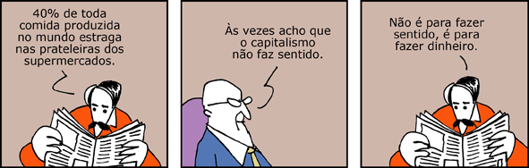
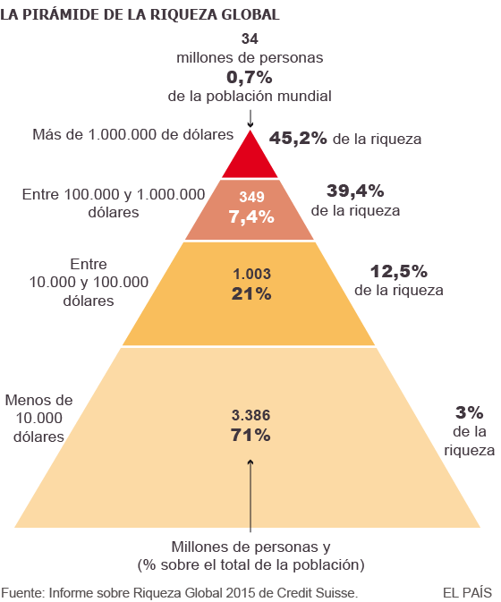

CAPÍTULO 9 - “Tudo que é sólido se desmancha no ar”: capitalismo e barbárie
 Os EUA representaram, no século XX, o maior exemplo vitorioso do desenvolvimento social e econômico proporcionado pelo capitalismo. Na foto, tirada na década de 1930, em Nova York, trabalhadores da construção civil pendurados em uma viga de aço durante o horário de almoço, no alto – 69º andar – do futuro Rockfeller Center (um dos prédios a ser chamado, na época, de “arranha-céus”).
Os EUA representaram, no século XX, o maior exemplo vitorioso do desenvolvimento social e econômico proporcionado pelo capitalismo. Na foto, tirada na década de 1930, em Nova York, trabalhadores da construção civil pendurados em uma viga de aço durante o horário de almoço, no alto – 69º andar – do futuro Rockfeller Center (um dos prédios a ser chamado, na época, de “arranha-céus”).
A História da humanidade foi marcada pela existência de diversos tipos de sociedades, cada uma delas com características bem distintas. Vamos destacar, neste capítulo, alguns aspectos do modo de produção capitalista, que neste século XXI domina quase praticamente todo o nosso planeta.
E a humanidade inventa o capitalismo...
Os homens, ao longo da História, ao se organizarem em sociedade, estabeleceram formas diferentes de produzir os bens necessários à sua sobrevivência. Pois bem, um desses modos de produção, vigente na grande maioria das sociedades existentes hoje em dia, inclusive no Brasil, é chamado de capitalismo. O que significa? Por que este nome? Como surgiu?
Vamos procurar entender o capitalismo e, assim, compreender a importância do seu estudo, através da resposta a esta última pergunta.
Como se viajássemos na “máquina do tempo”, vamos estacioná-la na Europa, durante a Idade Média, entre os séculos IV a XIV (do ano 301 até, aproximadamente, o ano 1400). O modo de produção existente então era conhecido pelo nome de feudalismo.
Uma das características da sociedade feudal era a sua falta de mobilidade social, ou seja, aquele mundo, regido pela Igreja católica, reproduzia, segundo essa instituição, “a vontade de Deus”: se uma pessoa nascesse em uma família pertencente à “nobreza” teria, o que costumamos denominar por “sangue azul”, segundo o dito popular, sendo transformada em herdeira das terras em torno do castelo e “ungida” pelo Criador como destinatária de toda a riqueza produzida e dos impostos e taxas pagos pelos que necessitassem atravessar as terras do feudo. Mas, se nascesse “servo”, seria um “plebeu”, nada mais lhe restando do que trabalhar, resignadamente, para o seu senhor durante toda a vida, tornando-se um “abençoado merecedor do reino de Deus” quando viesse a falecer. Este mundo, organizado dessa forma, de “cima para baixo” – ou “de Deus para os homens” –, não poderia sequer ser questionado, quanto mais modificado.
Grandes mudanças, porém, começaram a ocorrer em toda a Europa durante esse período, independentemente da vontade daqueles que detinham o poder e a riqueza. Foram mudanças que aconteceram lentamente, de forma gradativa, praticamente imperceptíveis para quem vivia naquela época.
Entre as diversas mudanças, podemos destacar como muito importante o surgimento de novos grupos sociais: comerciantes, artesãos e camponeses livres. Estes últimos haviam surgido a partir da cessão a grupos de servos, mediante pagamento de taxas e estabelecimento de outros compromissos de obediência, de terras consideradas inférteis ou improdutivas, principalmente em regiões pantanosas. Deve-se registrar que, na Europa do século XII, eram cultiváveis apenas a metade das terras francesas, um terço da atual Alemanha e um quinto da Inglaterra (HUBERMAN, 2010).
A cidade de Assis (Itália), um típico burgo medieval.
Já o grupo social composto pelos comerciantes havia surgido nos entroncamentos das diversas rotas comerciais existentes na Europa, que formavam grandes “feiras” onde eram negociados os valiosos produtos originários do Oriente, com destaque para as chamadas especiarias. Essas feiras acabaram se transformando em verdadeiras cidades fortificadas, inicialmente chamadas de burgos – daí o nome burgueses, pelo qual aqueles comerciantes passaram a ser conhecidos.
Pois bem, como destacamos acima, qual era o modo de produção existente na Europa naquela época? Feudalismo, certo? Mas se você entendeu o funcionamento do feudalismo, pode imaginar que esses novos grupos sociais “não tinham nada a ver” com o antigo sistema social, político e econômico – os camponeses livres – porque, apesar de minoritários, haviam se colocado à margem da servidão feudal e – os artesãos – porque trabalhavam por conta própria nas cidades, aproveitando-se também do renascimento comercial.
Quanto aos burgueses, deve-se destacar que o seu rápido enriquecimento acabou por gerar mudanças profundas naquela velha ordem, onde não havia lugar e reconhecimento para essa nova classe social. As mudanças abrangiam desde contestações à filosofia da Igreja católica, que condenava como pecado a obtenção de lucros, os juros e a usura – aspectos de um conjunto de mudanças que resultou na Reforma Protestante –, como também ao poder acumulado pela nobreza feudal.
Neste caso, a burguesia ascendente tratou de reforçar e centralizar o poder na pessoa do rei, numa aliança que fez nascer as chamadas Monarquias Nacionais e que possibilitou as grandes navegações, capitaneadas por Portugal e Espanha. Assim, no meio da ordem feudal, estava sendo gestado, aos poucos, um novo sistema social e econômico, o capitalismo. Com o tempo, ia desmoronando a velha sociedade estamental, como viria depois a ocorrer definitivamente com as revoluções inglesas do século XVII e a Revolução Francesa de 1789.
Acumulando capital e revolucionando a indústria
O capitalismo se tornou o modo de produção dominante a partir da Revolução Industrial, iniciada na Inglaterra. Entretanto, para o capitalismo vigorar como tal fazia-se necessária uma fase anterior de “acumulação de capital”. Vamos entender melhor isso.
Para alguém iniciar um negócio, uma empresa, hoje, é necessário obter capital. A mesma coisa ocorria com os burgueses da época. Então, para entender melhor como surgiu o capitalismo, seu principal estudioso, Karl Marx, se debruçou em pesquisas sobre o que ocorreu na Inglaterra em seu período pré-capitalista. Em sua análise, Marx denominou esse processo como acumulação primitiva de capital. Mas, afinal, o que Marx descobriu em seus estudos? Simples: como as relações de produção pré-capitalistas existentes na Inglaterra eram predominantemente agrícolas, a única forma de se transformar essas relações em capitalistas era através da apropriação da terra pela burguesia, com a total expulsão dos camponeses que lá viviam. E foi exatamente isso o que ocorreu: os camponeses foram expropriados, separados da sua terra, e não lhes restou nada mais que não fosse a venda da sua força de trabalho. Se antes os camponeses eram proprietários, agora eram trabalhadores assalariados. E foram esses trabalhadores que serviram de mão de obra para as indústrias que surgiam, principalmente, mas também para a penetração das relações capitalistas no próprio campo, onde os ex-proprietários foram empregados depois, ironicamente, como assalariados... Segundo Marx, esse foi o “segredo” da acumulação primitiva de capital: transformar radicalmente (revolucionar), à força, as relações de produção até então existentes no campo (cf. BOTTOMORE, 2001, p. 2).
Você talvez pergunte se em toda a Europa o capitalismo surgiu da mesma forma. Bem, este foi o caso analisado por Karl Marx. Mas, e depois, como aconteceu a expansão do modo de produção capitalista? Podemos responder que, de fato, as mudanças ocorreram de formas diferenciadas, em tempos distintos, de acordo com uma série de variáveis. Alguns estudiosos sobre o tema, por exemplo, chamam a atenção para o papel decisivo desempenhado nas cidades europeias pelo comércio, pelas trocas de mercadorias (BOTTOMORE, 2001, p. 3). De qualquer forma – considerando como elemento principal do processo de acumulação primitiva de capital – a análise de Marx a respeito da expropriação da terra, com todas as mudanças radicais e violentas que ela proporcionou, podemos dizer que o capital prosseguiu em seu processo de acumulação com a multiplicação dos centros comerciais existentes nas cidades (burgos), mas também, de uma forma extremamente relevante e mais decisiva, através da expansão do chamado “capital mercantil”, com a apropriação da riqueza existente em outras terras do planeta, através das grandes navegações e “descobrimentos”. Assim, o processo de acumulação de capital foi se desenvolvendo através do financiamento de corsários e piratas (sim, aqueles que vemos nos filmes e desenhos animados), do tráfico de escravos (principalmente os africanos), com o empréstimo de dinheiro a juros por intermédio da organização de instituições bancárias (no mesmo sentido dos chamados agiotas atuais), com o pagamento de salários miseráveis aos artesãos empregados nas manufaturas e, evidentemente, vencendo guerras, comerciando e impondo tratados a países fracos.
Depois da indústria, o comércio passou a ser a atividade mais importante da burguesia inglesa – exatamente como forma de transportar e comercializar os seus produtos industriais. Os comerciantes ingleses e seus navios estavam por toda parte do mundo. Quanto maior a atividade comercial, maior era a concorrência. Cada mercador inglês queria abater seus concorrentes e, para vencer os competidores, era preciso oferecer produtos mais baratos. Então, como baixar cada vez mais os custos da produção?
A resposta estava no uso de máquinas. Desse modo, foi a pressão do mercado que levou a burguesia inglesa a aprimorar suas máquinas e a instalar mais indústrias.
Mas, o capital depende do trabalho. Ou seja, a burguesia necessitava de operários para instalar suas indústrias e fazê-las operar. Para encontrá-los, era necessário ir ao campo, onde estava a mão de obra.
O surgimento da indústria alterou profundamente a paisagem europeia, obrigando os trabalhadores a abandonar os campos e migrar para as cidades. Tela de Philippe-Jacques de Loutherbourg, “Coalbrookdale, à noite” (1801).
O aparecimento do capitalismo estimulou os fazendeiros a investir capital na produção agrária. Para desenvolver as áreas de cultivo, ocuparam terras onde habitavam os camponeses e forçaram as famílias a ficar em pequenos territórios cercados. Como eram milhares, imagine o que aconteceu. Os terrenos eram tão pequenos que os camponeses quase não tinham como continuar a viver ali. A saída foi buscar trabalho e moradia em outro lugar. Assim, as cercas expulsaram as pessoas do campo. Conclusão, depois de perder as terras, não podendo trabalhar mais nelas, restou ir para onde? Adivinhou quem respondeu “para as cidades”. Para não morrer de fome, eles aceitavam trabalhar por horas e horas nas fábricas, recebendo salários miseráveis.
O desenvolvimento industrial arruinou os artesãos, já que os sapatos e os tecidos eram confeccionados mais rapidamente e de uma maneira mais barata numa fábrica do que nas oficinas dos artesãos, sapateiros ou tecelões. Por tabela, os artesãos também tiveram de buscar emprego de operários nas fábricas. Havia, então, uma multidão de homens e mulheres que não conseguiam mais viver por conta própria. Agora, era pegar ou largar. Era trabalhar para um patrão em troca de um salário – formou-se, assim, uma nova classe social chamada proletariado.
Trabalhadores e máquinas numa fábrica de velas. Gravura de 1870, de autoria de Ralf Hettler.
No século XIX, a Revolução Industrial alcançou outros países europeus como França, Alemanha, Itália (norte) e Rússia. Nos Estados Unidos, as primeiras indústrias foram instaladas no final do século XVIII, mas o seu desenvolvimento se deu na segunda metade do século XIX.
Assim, o capitalismo inicia-se de forma triunfante, trazendo grandes transformações para a humanidade. As grandes potências mundiais da época eram todas capitalistas. Fábricas, terras, matérias-primas, comércio, bancos, máquinas, tudo pertencia aos capitalistas que manipulavam o capital com um único objetivo: obter lucro, ganhar dinheiro.
A Revolução Industrial trouxe seu símbolo máximo: a máquina a vapor. Era o sinal dos novos tempos: barcos a vapor, trens a vapor, ferros de passar roupa a vapor, banhos a vapor etc. Começou, então, a produção em massa, e o desejo do lucro tornou-se um ideal a ser seguido. As pequenas oficinas tornaram-se grandes fábricas, apareceram as chaminés, construíram-se pontes, túneis, minas... Enfim, o capitalismo colocou tudo a seu serviço. Ou, como diziam Marx e Engels em 1848: “tudo que era sólido se desmancha no ar” (MARX; ENGELS, 1998, p. 11).
Mas nem tudo era progresso. A situação daqueles que construíam tudo – os operários – era cada dia pior. Não havia leis trabalhistas que os protegessem, eram proibidos de organizar sindicatos, não tinham aposentadoria, não recebiam horas extras, não tinham assistência social. Educação para os filhos dos operários? Nem pensar!
O regime de trabalho das fábricas na Europa era o pior possível para os trabalhadores. Mas quem eram esses operários? Crianças, mulheres grávidas etc., que trabalhavam de 12 a 18 horas por dia. Então, você deve perguntar: se os operários faziam tudo, por que o Estado e os políticos da época nada faziam para melhorar essa situação?
Ora, o Estado era capitalista. Os políticos representavam os capitalistas, os juízes faziam leis para proteger o capital, a polícia tinha a função de fazer cumprir essas leis. Os trabalhadores não sabiam, de início, como reagir. Mas, na sua revolta inconsciente, com medo, eles identificavam nas máquinas o grande inimigo público, e tratavam de destruí-las.
O trem a vapor foi um dos símbolos – e um dos motores – da Revolução Industrial.
Porém, os capitalistas reagiram. Em 1812, o parlamento inglês aprovou uma lei condenando à pena de morte reivindicações de melhores salários e a diminuição da jornada de trabalho, o aumento da produção e os lucros. E mais: diziam que leis que beneficiavam os trabalhadores prejudicariam o bom andamento dos mercados, dos negócios e do livre-comércio, isto é, da concorrência.
Mas, apesar de toda essa pressão dos capitalistas, os sindicatos sobreviviam e cresciam.
A exploração da mão de obra infantil era uma prática constante do processo de acumulação de riquezas proporcionado pela Revolução Industrial. Menina trabalhadora em indústria de algodão, fotografada entre máquinas de fiação. Newberry, Carolina do Sul, Estados Unidos da América, 1908.
Concorrência e monopólio
O que caracteriza o modo de produção capitalista são as relações assalariadas de produção (trabalho assalariado). Tais relações baseiam-se na propriedade privada dos meios de produção pela burguesia.
A burguesia possui as fábricas, os meios de transporte, as terras, os bancos etc. O trabalhador não é obrigado a ficar sempre na mesma terra ou na mesma fábrica; ele é livre para se empregar na propriedade do capitalista que o aceitar. Como não são proprietários dos meios de produção, os trabalhadores são obrigados a trabalhar para os proprietários do capital.
Como vemos, no capitalismo há duas classes principais: a burguesia e os trabalhadores assalariados (ou proletariado). Se o capitalismo é movido pelo desejo de lucro, para aumentar os seus lucros, os capitalistas procuram aumentar a produção através do aperfeiçoamento técnico, da exigência de maior produtividade dos operários, de uma maior racionalização do processo de produção.
Deve-se registrar que a ascensão do poder político e econômico da burguesia, descrito na seção anterior, foi acompanhada pela formulação de um conjunto de ideias que justificaram essa nova sociedade que estava surgindo nesse processo tão violento de mudanças. Como essas teorias se contrapunham ao Estado moderno absolutista, com um poder autoritário e centralizado por uma monarquia, e que controlava rigidamente a atividade econômica (mercantilismo), as “palavras de ordem” empunhadas pela burguesia nesse momento da História destacavam, com muita força, ideais como a igualdade e, em especial, a liberdade. Esses ideais se transformaram em princípios que deveriam ser seguidos por todos os indivíduos, em toda a sociedade, tanto na política quanto na economia.
Na política, o grande marco desse processo de mudanças foi a Revolução Francesa, em 1789, que teve como um de seus resultados a aprovação da Declaração dos Direitos do Homem e do Cidadão, que afirmava que “todos eram iguais perante a lei”. A Revolução Francesa consagrou o lema igualdade, liberdade e fraternidade.
E como se daria a relação entre a política e a economia, segundo esses pontos de vista? Ora, como contraposição ao mercantilismo como uma política de intervenção direta do Estado na atividade econômica, os defensores desses princípios, como Adam Smith (1723 – 1790) e David Ricardo (1772 – 1823), diziam que as principais funções do governo deveriam ser limitadas a somente três: proteger a propriedade, não interferir no lucro e preservar a paz.

Esses economistas eram chamados de liberais e suas teorias, de liberalismo.
O liberalismo, de uma maneira geral, foi o nome dado ao conjunto de ideias que se contrapunha ao absolutismo vigente na Europa. Essas teorias surgiram ao longo dos séculos XVII e XVIII e serviram de suporte às revoluções capitalistas que ocorreram desde então, assim como à luta pela independência dos Estados Unidos da América. A ascensão da burguesia ao poder, portanto, foi acompanhada por elaborações teóricas em defesa da liberdade individual, sob o ponto de vista econômico e político – como servem de exemplo as frases citadas de Smith e Ricardo.
Desde a Revolução Industrial, os capitalistas continuavam à procura da expansão de seus negócios e à busca por lucros cada vez maiores. Com as revoluções que ocorreram em vários outros países da Europa e nos Estados Unidos, o capitalismo prosperava cada vez mais.
Em meados do século XIX, as indústrias iniciaram uma fase de grande concorrência e, para disputar os mercados, elas começaram a diminuir os preços. Essa concorrência se transformou numa “prova de resistência” para diversos capitalistas. Vamos explicar!
Para abaixar os preços, era necessário aumentar a produção e colocá-la no mercado. Com isto, era necessário ampliar o mercado. E, para não falir, os pequenos capitalistas precisavam continuar produzindo como os grandes. Mas, para produzir, precisavam de dinheiro. Porém, o dinheiro estava nos bancos, que se aliavam aos grandes capitalistas. Assim, faliram muitos pequenos empresários.
Na lógica capitalista, portanto, sobreviviam somente os “mais fortes”. As companhias de ferro, carvão etc., ligadas aos bancos, estabeleciam o monopólio. Ou seja, definiam o grupo de empresas que dominaria o mercado, controlando a quantidade de bens à disposição dos consumidores e, sem concorrência, estabelecendo os preços. Instalado a partir do final do século XIX, o capitalismo monopolista resiste até hoje.
A partir daí, o capitalismo dá passos gigantescos, produzindo, com suas indústrias, uma quantidade cada vez maior de mercadorias.
A crise: superprodução de mercadorias e imperialismo
<
A situação das economias capitalistas se tornou dramática no século XIX, pois o mercado ficou “inundado” de mercadorias. Esse processo foi nomeado pelos economistas como uma “crise de superprodução”, ou seja, muitas mercadorias e poucos consumidores, resultando, daí, uma crise econômica.
Para Karl Marx, o capitalismo era irracional. Ele tentou provar que a concorrência entre empresas acabaria mergulhando a economia capitalista num terrível caos. Para ele, volta e meia haveria terríveis crises econômicas, com falências, desempregos, aumento da miséria e da violência. O capitalismo se tornaria cada vez mais ineficiente, desperdiçando recursos, causando miséria e insegurança. Pois se, por um lado, com a crise de superprodução, as indústrias demitiam operários para baixar custos e prejuízos, por outro, piorava mais a situação dos operários que, na prática, eram os consumidores das mercadorias. É isto que Marx chama de irracionalidade econômica do capitalismo, já que não se produz mercadoria como valor de uso, mas como valor de troca. Isto significa dizer que, se não houver gente (consumidores) para comprar as mercadorias, estas perdem o seu valor.

No final do século XIX, os representantes do capital, preocupados com a falta de mercado nos seus próprios países, partiram para novos espaços geográficos para tentar resolver a crise. Encontraram como uma das soluções a colonização da África e da Ásia. As empresas capitalistas e as nações europeias fizeram a partilha do continente africano em colônias para conseguir expandir seus mercados e conseguir mão de obra e matéria-prima baratas. Dessa época até hoje, a história de muitos países latino-americanos, africanos e asiáticos é a de submissão aos interesses do capitalismo monopolista da Europa e dos Estados Unidos. Essa situação de submissão política e econômica, provocada pelos interesses capitalistas, passou a ser conhecida desde então sob o nome de imperialismo.
Segundo Lênin, o imperialismo é o capitalismo na sua maturidade (cf. LÊNIN, 1982). O capitalismo monopolista estende ao resto do mundo seu domínio econômico e, por tabela, militar.
A título de exemplo, veja o que dizia o general Smedley Butler, que passou trinta e três anos e quatro meses no Corpo de Fuzileiros Navais como agente de segurança do capital americano:
Desde segundo-tenente até general, passei a maior parte do tempo servindo de guarda-costas para Wall Street e seus banqueiros.
Assim, ajudei a transformar o México num lugar seguro para os interesses petrolíferos americanos em 1914.
Ajudei a fazer de Cuba e Haiti lugares decentes para que os rapazes do City Bank pudessem recolher seus lucros em paz.
Ajudei a purificar a Nicarágua para que os irmãos Brown pudessem instalar seus bancos, entre 1909 e 1912. Limpei o terreno na República Dominicana para os interesses açucareiros norte-americanos, em 1916.
Na China em 1917, colaborei para que a Standard Oil fizesse seu trabalho. Eu tinha, como diriam os rapazes do gatilho, uma boa quadrilha.
Fui recompensado com honrarias e promoções. Voltando, agora, os olhos ao passado, acho que poderia dar umas boas sugestões a Al Capone.
(citado por NOVAES; RODRIGUES, 2008, p. 108)
Competição capitalista e barbárie humana
Como vimos, o modo de produção capitalista funciona sob certas condições: concentração da propriedade privada dos meios de produção nas mãos da burguesia; uma mão de obra destituída de qualquer propriedade, a não ser sua própria força de trabalho; a livre-concorrência entre as empresas e, por fim, um conjunto de leis e ideias que garantam seu funcionamento.
A livre-concorrência e as ideias que a justificam influenciam quase todas as relações sociais entre os indivíduos na sociedade em que vivemos e, por sua vez, criam, e estão criando até hoje, relações sociais e com a natureza que podemos denominar de barbárie.
Barbárie significa, aqui, industrialização do homicídio, exterminação em massa graças às tecnologias científicas de ponta, impessoalidade do massacre. Populações inteiras – homens, mulheres, crianças e idosos – são “eliminados” nesse processo. Gestão burocrática, administrativa, eficaz, planificada, “racional” (em termos instrumentais) dos atos bárbaros; ideologia legitimadora do tipo moderno: “biológica”, “higiênica”, “científica” (e não religiosa ou tradicionalista); destruição indiscriminada da natureza, como as queimadas na Amazônia, a poluição do ar e da água – prejudicando e colocando em risco a vida na Terra – e todos os crimes contra a humanidade, genocídios e massacres do século XX e XXI.
O porquê disso tudo? Simples. O capital não tem fronteira, pois a indústria madeireira não está preocupada com os riscos ambientais ao cortar as árvores na Amazônia, a indústria petrolífera pouco se importa com a poluição. Enfim, o que interessa é vender e lucrar e não o bem--estar dos indivíduos. Ou melhor, desde que o indivíduo tenha dinheiro para comprar coisas, o resto não interessa.
O domínio imperial dos EUA representado por um grupo teatral.
É sob a lógica dos lucros que se promovem guerras, produção de armas etc. Milton Santos (2002), um geógrafo brasileiro, afirma que existe sob a sociedade capitalista uma ausência de compaixão e, ainda, que a competitividade tem a guerra como norma, é uma competitividade em estado puro. Há, a todo custo, que vencer o outro, esmagando-o, para tomar seu lugar, gerando comportamentos que justificam todo desrespeito às pessoas. Aliás, nos lançando um desafio intelectual, um pensador norte-americano, Noam Chomsky (1999), no título de uma das suas obras, pergunta o que devemos escolher: o lucro ou as pessoas? Mas, enfim, existirá uma alternativa de vida além do capitalismo?

Uma alternativa ao capitalismo
Desde o século XIX, quase todos os dias aparecem nos jornais, nas revistas, na boca dos políticos e por todo lado alguma frase, pensamento ou ideias sobre socialismo, comunismo etc. Podemos citar como exemplo a declaração feita por um jogador de futebol, o sérvio Petkovic, que participou, em 2009, do time campeão brasileiro pelo Flamengo. Entrevistado, em um programa matinal de TV, em fevereiro de 2010, sobre como tinha sido a infância e a juventude na antiga Iugoslávia, ele respondeu o seguinte: “Quando nasci não tinha dificuldade nenhuma. Era um país maravilhoso, vivíamos um regime socialista. Todo mundo bem, todos tinham salário, todos tinham emprego. Problemas aconteceram depois dos anos 80.”
Depois de 1980, como veremos no final deste capítulo, uma série de acontecimentos pôs fim à experiência socialista da URSS e dos países do Leste Europeu e Balcãs – como foi o caso da Iugoslávia, terra natal desse jogador.
Continuando nosso comentário sobre a percepção que muitos têm a respeito do socialismo, numa pesquisa sobre juventude, publicada pela Fundação Perseu Abramo, em 2005, apurou-se que 52% de jovens, entre 15 e 24 anos de idade, acreditam que o socialismo continua sendo uma alternativa para resolver os problemas sociais. Vejamos o gráfico que expressa essa opinião:
Pergunta: Pensando em solução de problemas sociais, qual das seguintes frases se aproxima mais do que você pensa sobre o socialismo?

Mas, o que é realmente o socialismo?
Vimos, anteriormente, que a situação dos trabalhadores no início do desenvolvimento capitalista na Europa era a pior possível.
Nessa situação, surgiram contestações à ordem vigente, crítica ao capitalismo e propostas de nova organização da sociedade. Não existiam somente as ideias dominantes do liberalismo e do capitalismo reinante.
Na década de 1830, apareceram pensadores ingleses e franceses que eram chamados de socialistas. Eles acreditavam que a economia não deveria beneficiar poucos indivíduos (a burguesia), mas toda a sociedade. Em vez da competição do mercado, propunham a cooperação. Os socialistas pensavam que as mudanças podiam ser planejadas e que se deveria arquitetar uma nova sociedade, mais justa, mais harmônica, mais racional. Os primeiros foram Robert Owen e Charles Fourier.
Porém, os socialistas que mais influenciaram as gerações de futuros críticos do capitalismo foram os pensadores alemães Karl Marx (1818-1883) e Friedrich Engels (1829-1895). Foram os fundadores do Socialismo Científico, hoje chamado de marxismo. Suas ideias partiam das seguintes perguntas: Por que existem os problemas sociais? De que modo é possível superá-los? Ao contrário de outros pensadores da época, eles acreditavam que os filósofos se limitaram a interpretar o mundo de diferentes maneiras; mas o que importa é transformá-lo.
Marx e Engels achavam que somente o estudo científico da sociedade poderia responder a essas questões. Segundo eles, Robert Owen e Charles Fourier eram socialistas utópicos, porque acreditavam que o mundo poderia mudar pela boa vontade da burguesia, pelo exemplo de pequenas comunidades ou pelas pessoas entusiasmadas por livros que descreviam belamente a sociedade futura. Marx e Engels ridicularizaram essas esperanças. Para eles, havia uma única força social capaz de transformar o mundo: o proletariado.
De fato, os socialistas utópicos esperavam, por exemplo, que algum empresário doasse dinheiro para construir uma comunidade livre de exploração e opressão de uma classe sobre outra. Entretanto, tais pensadores contribuíram muito, com suas ideias, para despertar a consciência crítica a respeito do mundo capitalista que estava se formando.
Para os fundadores do marxismo, o proletariado, por conta própria, tinha força para construir uma nova sociedade. Em 1848, declararam que a emancipação da classe trabalhadora é obra da própria classe trabalhadora. A partir daí, ocorre uma inversão de valores. Durante séculos, houve indivíduos preocupados com a pobreza e a opressão, que sempre olharam os trabalhadores como “infelizes” que precisavam de alguém para protegê-los. Porém, Marx tinha a certeza de que os únicos que podiam fazer algo pelos trabalhadores eram eles mesmos. Na sua obra mais famosa, O Capital, de 1867, demonstrou com dados econômicos que o capitalismo era um sistema injusto e irracional. Injusto porque só haveria um meio de a burguesia lucrar: explorando a força de trabalho do proletariado. Ou seja, não existem bons e maus patrões. No capitalismo, os patrões são obrigados a explorar seus empregados. Caso contrário, não teriam lucro e iriam à falência. Portanto, a exploração é inevitável. A única forma de acabar com a exploração seria eliminando o capitalismo.
Como se pode perceber, a partir do que foi dito, a burguesia e o proletariado, que são as classes sociais fundamentais do capitalismo, são totalmente antagônicas. Isto significa dizer que a burguesia, que é numericamente uma minoria, somente pode existir em função da existência e da submissão da maioria, o proletariado.
No capitalismo, os meios de produção estão nas mãos da burguesia. Logo, para não morrerem de fome, os trabalhadores precisam se submeter a ela. Recebem um salário e, em troca, sua capacidade de trabalhar fica à disposição de um patrão, que procura explorá-la ao máximo. Desse modo, o valor do trabalho realizado pelo operário acaba sendo maior do que o salário que recebe. Mas tudo que o proletariado produz além do valor do seu salário fica com o patrão. Essa é a origem de seu lucro. Marx chama essa diferença de mais-valia.

Como vimos, para Marx, o capitalismo também era irracional, devido à concorrência generalizada entre as empresas, resultando em crises econômicas violentas. Então, no momento em que a crise capitalista estivesse acontecendo, o proletariado deveria estar organizado para assumir o poder político e construir uma nova sociedade.
Para Marx, o capitalismo era injusto e irracional porque estava baseado na propriedade privada dos meios de produção. Para solucionar este problema, Marx afirmava que o capitalismo precisava ser destruído a fim de que os trabalhadores se tornassem donos de todos os meios de produção. Ou seja, o proletariado deveria expropriar a burguesia e fundar uma sociedade socialista. Nessa nova sociedade, terras, bancos, minas e fábricas pertenceriam a todos aqueles que produzissem e trabalhassem. Tudo seria de todos e os frutos do trabalho coletivo distribuídos de acordo com a produção de cada um. Dessa forma, ninguém exploraria ninguém.
Marx e Engels concluem, portanto, que a história de todas as sociedades existentes é a história das lutas de classes. Esta se tornou uma das frases clássicas do Manifesto do Partido Comunista, redigido pelos dois em 1848. Este antagonismo entre as classes sociais encontra a sua maior radicalidade exatamente no capitalismo – sistema em que o proletariado não teria nada a perder, como afirma o Manifesto, a não ser as suas correntes.
A história de todas as sociedades até agora tem sido a história das lutas de classe. Homem livre e escravo, patrício e plebeu, barão e servo, membro das corporações e aprendiz, em suma, opressores e oprimidos, estiveram em contraposição uns aos outros e envolvidos em uma luta ininterrupta, ora disfarçada, ora aberta, que terminou sempre com a transformação revolucionária da sociedade inteira ou com o declínio conjunto das classes em conflito.
Nas épocas anteriores da História, em quase todos os lugares, encontramos sociedades estruturadas em vários segmentos, em uma hierarquia diferenciada das posições dos indivíduos. Na Roma antiga, temos patrícios, guerreiros, plebeus e escravos; na Idade Média, senhores feudais, vassalos, membros de corporações, artesãos e servos; além disso, em quase todas essas classes, novas subdivisões.
A moderna sociedade burguesa, que surgiu do declínio da sociedade feudal, não aboliu as contradições de classe. Ela apenas colocou novas classes, novas condições de opressão e novas formas de luta no lugar das antigas.
Nossa época — a época da burguesia — caracteriza-se, contudo, por ter simplificado os antagonismos de classe. Toda a sociedade se divide, cada vez mais, em dois grandes campos inimigos, em duas grandes classes diretamente opostas: a burguesia e o proletariado.
(MARX; ENGELS, 1998, p. 8)
Baseados nessas análises, a partir da segunda metade do século XIX, surgiram vários movimentos de trabalhadores que lutaram contra o sistema capitalista e promoveram uma série de revoltas, insurreições e revoluções.
Tentaram, mas não conseguiram!
No Manifesto do Partido Comunista, Marx e Engels afirmavam também que o proletariado precisava construir o seu partido para tomar o poder político e derrubar o capitalismo e a burguesia.
Não podemos, aqui, confundir comunismo e socialismo. Para Marx, socialismo seria a primeira etapa de construção de uma nova sociedade, em que os operários, depois de derrubarem a burguesia, instalariam um novo Estado, chamado de Estado Operário.
Com o desenvolvimento desse Estado, baseado na ampliação da participação dos produtores de riqueza nas decisões econômicas e políticas da sociedade, aos poucos, os indivíduos perceberiam que o Estado não seria mais necessário, evoluindo para uma sociedade comunista, em que todos deveriam desfrutar de todas as riquezas produzidas, extinguindo definitivamente as desigualdades e a exploração do homem pelo homem.
Mas é somente em 1917, com a Revolução Russa, que estas ideias socialistas tomam corpo, através do Partido Bolchevique, liderado por Lênin, Trotsky, Stalin e outros comunistas russos.
A Rússia dos primeiros anos do século XX, governada pelos tzares (imperadores), era um dos países mais pobres e opressores do mundo. Em novembro de 1917, operários e camponeses, guiados por Lênin e pelo Partido Bolchevique, fizeram uma revolução. Foi a primeira tentativa na História de se construir uma sociedade socialista.
Vladimir Lênin (1870-1924), o grande líder da Revolução Russa, em 1917, num de seus mais famosos livros – O Estado e a Revolução –, escreveu que o socialismo só poderia ser realmente válido com um regime democrático, em que o poder fosse exercido pelos próprios trabalhadores. Afirmava que o Estado, após a revolução vitoriosa, se extinguiria paulatinamente, conforme defendia Marx.
O Partido Bolchevique, na Rússia revolucionária, incumbia aos sovietes (comitês de soldados, camponeses e operários), em caráter transitório, o exercício do poder de Estado, baseado na ampla democracia e participação operária e camponesa nas decisões econômicas do país. Isso até que se chegasse ao autogoverno dos trabalhadores – o comunismo – com o fim do Estado e de todas as formas de opressão. Outra ideia fundamental de Marx e Lênin era que esse processo de mudanças revolucionárias deveria ser internacional e não restrito a um país ou grupos de países.
A estrela vermelha é um dos símbolos da Revolução Russa de 1917.
De fato, nos primeiros seis anos da Revolução Russa, os sovietes cumpriram um papel muito importante no desenvolvimento econômico e social russo, controlando o Estado e melhorando as condições de vida do povo.
Porém, logo que tomaram o poder, os bolcheviques passaram por várias dificuldades: estavam isolados no mundo e enfrentavam, simultaneamente, uma guerra civil promovida pela burguesia para retomar o poder, e a apatia dos trabalhadores já cansados de tantas guerras e fome. Convém lembrar, ainda, que, nessa época, a Rússia estava envolvida com a Primeira Guerra Mundial.
A partir de 1922, a revolução socialista iniciada na Rússia se dissemina – com a devida “contribuição” do exército russo – para as repúblicas vizinhas, constituindo a partir de então a União das Repúblicas Socialistas Soviéticas – URSS.
Lênin, líder da Revolução Russa.
Em 1924, Lênin morre. Mas, antes de falecer, ele se preocupou com o que chamava de deformação burocrática do socialismo. Muitos operários e camponeses, líderes da revolução, tinham morrido na guerra civil ou haviam entrado para o Partido Bolchevique e se acomodado demais. Lênin estava preocupado porque as organizações dos operários (os sovietes) tinham perdido a autonomia e os funcionários do partido estavam acumulando muitos poderes. Principalmente o chefe dos burocratas, Stalin, considerado rude e agressivo.
Após a morte de Lênin, houve uma disputa de poder entre os dois mais importantes dirigentes russos, Leon Trotsky (1879-1940) e Josef Stalin (1878-1953). Trotsky defendia a expansão da Revolução a outros países, pois achava que a restrição do socialismo a um único país, com o consequente isolamento da URSS, levaria, de forma inevitável, ao fracasso da Revolução. Essa teoria foi intitulada por ele como “revolução permanente”. Já Stalin defendia a tese que a URSS era um país enorme, cheio de recursos naturais, com uma população grande, e que, por isso, seria possível construir o socialismo somente na URSS, para depois expandi-lo a outros países. Esta ideia foi chamada de “socialismo num só país”.
O fato é que Stalin estava acumulando muitos poderes, e tamanha foi sua potência que, dentro do Partido, as ideias de Trotsky foram derrotadas e, pouco tempo depois, foi obrigado a abandonar o país, em 1927.
Stalin, então, tornou-se senhor todo poderoso da URSS, um verdadeiro ditador socialista. Quase um “czar comunista”. Durante seu governo, milhares de comunistas foram presos e fuzilados. Stalin teve pleno poder até o dia de sua morte, em 1953. E exerceu esse poder como ditador.
Como vimos, de acordo com a teoria de Marx, Engels e Lênin, na sociedade socialista o Estado se dissolveria aos poucos. Os trabalhadores administrariam as empresas e a economia. Democraticamente, a própria sociedade se autogovernaria. Lênin acreditava que os sovietes teriam cada vez mais poder para decidir no lugar do Estado. Porém, nada disso aconteceu na antiga URSS.
No tempo de Stalin, o Estado inchou e passou a engolir tudo, decidir tudo, e os sovietes perderam o poder. A URSS era uma ditadura em que Stalin e o Partido tomavam todas as decisões. Quem criticasse o poder ia para a prisão na Sibéria (onde as temperaturas chegavam a dez graus abaixo de zero). A imprensa era única e pertencia ao Partido, os livros escolares só divulgavam as ideias do Partido e dos dirigentes do estado. O governo soviético se autoproclamava a “ditadura do proletariado”, inspirado nos ideais marxistas. Mas, como o proletariado podia cada vez menos dar palpites, melhor seria dizer a “ditadura da burocracia”.
Esse último termo – ditadura da burocracia – era a grande crítica de Trotsky ao regime soviético. Esse revolucionário russo afirmava que os princípios escritos por Marx, Engels e Lênin jamais foram praticados, pois a realidade do país era completamente diferente das ideias originais deles. Para Trotsky, o que existia na URSS era uma ditadura da burocracia do Partido Comunista ou, como dizia Lênin, uma degeneração burocrática da Revolução Socialista de 1917. As conquistas econômicas da Revolução se mantinham, o que fez a URSS se tornar uma grande potência mundial, porém, a “democracia operária” fora abortada pelos burocratas do Partido Comunista.
Outras revoluções seguiram o mesmo rumo da soviética, ao longo do século XX: a da China, a do Leste Europeu, a do Vietnã e a de Cuba. Nesta última, podemos encontrar até mais elementos de democracia. Entretanto, existe um partido único, uma imprensa única e não há eleições para o poder central, apesar da grande popularidade de Fidel Castro até hoje.
O mais curioso nessa história foi que, em nome do socialismo, das ideias de Marx e do comunismo, o regime soviético reprimiu opositores, assassinou líderes comunistas e falsificou a história da Revolução Russa. Todas as barbaridades realizadas contra o povo soviético – a falta de liberdade, o partido único, a censura, a repressão, o Estado acima das pessoas ... – eram feitas em nome dos princípios comunistas e dos ideais de Marx e do marxismo. A burguesia dos países capitalistas se aproveitou disso e denominou de socialismo real, “regime comunista”, “ideias marxistas”, tudo aquilo que acontecia na URSS. Em resumo, podemos afirmar que o ideal socialista, de acordo com as ideias de Marx, nunca existiu.
As ideias socialistas continuam presentes entre a população cubana. Foto: Praça da Revolução, Havana (Cuba).
Como você deve ter estudado de forma mais aprofundada o socialismo e o comunismo nas aulas de História e/ou de Geografia (ou vai estudar ainda), no final da década de 1980 e começo da década de 1990 começaram a ocorrer profundas mudanças políticas e econômicas na URSS e nos países do Leste Europeu. Em quase todos caíram os governos do Partido Comunista e foram feitas reformas para tornar mais democrático o sistema político, com eleição direta para os principais cargos. Também a economia passou por profundas alterações, com a diminuição do controle do Estado, a reativação dos mecanismos de mercado e com o restabelecimento da propriedade privada e do capitalismo.
Nesse contexto, surge a ideia, propagandeada pela burguesia dos países capitalistas, de que o fim dos regimes políticos da URSS e do Leste Europeu significaram a falência das ideias marxistas, socialistas e comunistas como alternativa ao capitalismo, e que o capitalismo seria o regime econômico definitivo no futuro da humanidade. Neste contexto, devemos perguntar: existe uma crise das ideias de Marx (ou do marxismo, ou do socialismo) ou falta uma alternativa para o capitalismo?
Interdisciplinaridade
│Conversando com a Arte
EVOLUÇÃO DO DESENHO DOS OBJETOS:
UMA CONTRIBUIÇÃO DA BAUHAUS
Dione Lins & Ricardo Pereira
arte não é algo isolado das demais atividades humanas. Ela está presente nos inúmeros artefatos que fazem parte do nosso dia a dia. Muitas coisas que hoje observamos nos museus, ontem faziam parte do cotidiano do ser humano. Ou seja, temos um convívio diário com objetos que, na sua maioria, não são considerados objetos artísticos – que foram feitos em série nas indústrias e estão agora disponíveis para o consumo de toda a sociedade.
Então, cabe perguntar: se tudo o que nos cerca, se tudo o que as pessoas fabricam fosse arte, fosse “belo”, a nossa vida seria outra? Como seriam as nossas vidas se tudo que se fabricasse fosse ARTE?
Foi a isso que respondeu, em 1919, na Alemanha, a fundação da Bauhaus*, uma escola de artes diferente de todas que havia até então – arquitetura, pintura, fabricação de objetos, de cartazes, de tecidos, etc. Foram fundadores ou mestres na Bauhaus muitos arquitetos e pintores hoje bastante conhecidos: Gropius, Paul Klee, Wassily Kandinsky, dentre outros. Estes fizeram profundas transformações nos modos de projetar casas e de fazer pintura e, ao mesmo tempo, se preocupavam com o formato de todos os objetos do nosso cotidiano, porque entendiam que essas questões poderiam influenciar na criação de outra sociedade, em que o trabalho coletivo predominasse, onde a divisão de classes sociais desaparecesse, bem como a distância entre “artista” e “artesão”, e onde surgisse um “novo homem”.
Os objetos produzidos por esses artistas e artesãos, mestres e aprendizes da Bauhaus colocavam claramente em questão o “belo” estabelecido e o processo de fabricação da arte, ou que envolviam a arte. Foram, na época, usados evidentemente por poucas pessoas e certamente não pelo conjunto de trabalhadores daquela sociedade. Hoje, são peças de museus. Mas, muito dos talheres, dos pratos, das luminárias, das cadeiras e mesas que adquirimos em lojas de departamento são herdeiros diretos, para não dizer cópias, desses primeiros objetos de arte com que um grupo de artistas pretendia ajudar a transformar o cotidiano, a vida e a sociedade.
Os objetivos traçados pelos criadores da Bauhaus não foram alcançados e a indústria moderna se apropriou do conceito de funcionalidade dos objetos depois de sua refundação pelo artista Lászlo Moholy-Nagy, em Chicago, em 1937, a qual ficou conhecida como New-Bauhaus.
Dione Souza Lins e Luís Ricardo Pereira de Azevedo são professores de Artes. Dione leciona na Rede Municipal de Ensino do Rio de Janeiro e é licenciada em Educação Artística – Artes Plásticas, pela UFRJ. Ricardo é professor da Rede Estadual e da Rede Municipal do Rio, e licenciado em Educação Artística – História da Arte, pela UERJ. Ambos são Especialistas em Ensino da Arte pela Universidade Veiga de Almeida, Rio de Janeiro.
* Instituição artística fundada em Weimar (Alemanha), pelo arquiteto Walter Gropius, transferindo-se para Dessaul, em 1925, e para Berlim , em 1932, onde foi fechada com o advento do nazismo, em 1933. Escola de Arquitetura, Decoração e Design, seu propósito era promover a fusão de todos os aspectos das Artes. (MARCONDES, Luiz Fernando. Dicionário de termos artísticos. Rio de Janeiro: Pinakotheke, 1998).
Interatividade
1
Quais as principais características do capitalismo?
2
De acordo com o texto, quais as consequências das crises econômicas no capitalismo? Descreva também as críticas formuladas por Karl Marx.
3
Como Marx e Lênin entendiam o socialismo?
1
O capitalismo promove o progresso da humanidade? Justifique a sua resposta.
2
Levando em consideração as características do socialismo apresentadas no capítulo, podemos afirmar que ele foi de fato implantado em algum país? Pensando no futuro da humanidade, podemos dizer que o socialismo ainda é uma alternativa possível?
Verificando o seu conhecimento
1
(ENEM, 2010)
O movimento operário ofereceu uma nova resposta ao grito do homem miserável no princípio do século XIX. A resposta foi a consciência de classe e a ambição de classe. Os pobres então se organizavam em uma classe específica, a classe operária, diferente da classe dos patrões (ou capitalistas). A Revolução Francesa lhes deu confiança; a Revolução Industrial trouxe a necessidade da mobilização permanente.
No texto, analisa-se o impacto das Revoluções Francesa e Industrial para a organização da classe operária. Enquanto a “confiança” dada pela Revolução Francesa era originária do significado da vitória revolucionária sobre as classes dominantes, a “necessidade da mobilização permanente”, trazida pela Revolução Industrial, decorria da compreensão de que:
(A)
a competitividade do trabalho industrial exigia permanente esforço de qualificação para o enfrentamento do desemprego.
(B)
a completa transformação da economia capitalista seria fundamental para a emancipação dos operários.
(C)
a introdução das máquinas no processo produtivo diminuía as possibilidades de ganho material dos operários.
(D)
o progresso tecnológico geraria a distribuição de riquezas para aqueles que estivessem adaptados aos novos tempos industriais.
(E)
a melhoria das condições de vida dos operários seria conquistada com manifestações coletivas em favor dos direitos trabalhistas.
2
(ENEM, 1999)
A Revolução Industrial ocorrida no final do século XVIII transformou as relações do homem com o trabalho. As máquinas mudaram as formas de trabalhar, e as fábricas concentraram-se em regiões próximas às matérias-primas e grandes portos, originando vastas concentrações humanas. Muitos dos operários vinham da área rural e cumpriam jornadas de trabalho de 12 a 14 horas, na maioria das vezes em condições adversas. A legislação trabalhista surgiu muito lentamente ao longo do século XIX e a diminuição da jornada de trabalho para oito horas diárias concretizou-se no início do século XX.
Pode-se afirmar que as conquistas no início deste século, decorrentes da legislação trabalhista, estão relacionadas com:
(A)
a expansão do capitalismo e a consolidação dos regimes monárquicos constitucionais.
(B)
a expressiva diminuição da oferta de mão de obra, devido à demanda por trabalhadores especializados.
(C)
a capacidade de mobilização dos trabalhadores em defesa dos seus interesses.
(D)
o crescimento do Estado, ao mesmo tempo em que diminuía a representação operária nos parlamentos.
(E)
a vitória dos partidos comunistas nas eleições das principais capitais europeias.
│Pesquisando e refletindo
CATANI, Afrânio Mendes. O que é capitalismo. São Paulo: Brasiliense, 1980. (Coleção Primeiros Passos).
De forma clara, este livro reflete o que é o capitalismo a partir de vários autores. Além de analisar o desenvolvimento e as crises do sistema no âmbito internacional, mostra também como o capitalismo se desenvolveu no Brasil.
SPINDEL, Arnaldo. O que é comunismo. São Paulo: Brasiliense, 1980. (Coleção Primeiros Passos).
Neste livro se faz uma reflexão sobre o comunismo como o movimento político que surge com a Revolução Russa e que se espalhou por muitos países. No capítulo final o livro descreve o desenvolvimento do movimento comunista no Brasil.
CAPITALISMO: UMA HISTÓRIA DE AMOR (Capitalism: a love story. EUA, 2009). Direção: Michael Moore. Duração: 127 min.
Documentário que apresenta uma análise de como o capitalismo corrompeu os ideais de liberdade previstos na Constituição dos Estados Unidos, visando gerar lucros cada vez maiores para um grupo seleto da sociedade, enquanto que a maioria perde cada vez mais direitos.
A REVOLUÇÃO DOS BICHOS (Animal Farm, EUA, 1999). Direção: John Stephenson. Duração: 90 min.
Sátira sobre a Revolução Russa e seus desdobramentos. Narra o levante dos animais de uma fazenda, revoltados contra os maus-tratos por parte dos donos. Baseado no livro com o mesmo título, de George Orwell.
Conectados na internet e nas redes sociais:
FOLHA DE S. PAULO – ILUSTRADA – Entrevista com Eric Hobsbawm: "O socialismo fracassou, agora o capitalismo faliu; o que virá a seguir?"
Página do jornal Folha de São Paulo que traz uma entrevista realizada em 10 de abril 15 de setembro de 2009 com o historiador Eric Hobsbawm (nascido na Alexandria, então pertencente ao Egito, em 1917, mas radicado no Reino Unido, onde faleceu em 2012, em Londres). Nessa entrevista, o historiador reflete sobre o capitalismo e o socialismo, e as perspectivas para o futuro. Acesso: janeiro/2016.
CAPITALISMO
SOCIALISMO
Dois sites que defendem posições antagônicas. Os argumentos pró-capitalismo constam de vários artigos do Instituto Ludwig von Mises - Brasil (IMB), que se apresenta como "uma associação voltada à produção e à disseminação de estudos econômicos e de ciências sociais que promovam os princípios de livre mercado e de uma sociedade livre". Já os argumentos pró-socialismo podem ser encontrados na revista Socialismo e Liberdade, publicada pela Fundação Lauro Campos (FLC). O site da fundação informa que ela estimula "um pensamento crítico comprometido com os valores do socialismo e da liberdade, e promovendo o debate de proposta programáticas para a transformação social do país".
A CULPA É DO FIDEL
(La Faute à Fidel)
FICHA TÉCNICA:
Direção: Julie Gavras
Elenco: Nina Kervel-Bey, Julie Depardieu, Stefano Accorsi, Benjamin Feuillet, Martine Chevallier
Duração: 99 min. (França/Itália, 2006
Anna tem nove anos, mora em Paris e leva uma vida tranquila. Em 1970, a prisão e morte do seu tio espanhol, um militante comunista convicto, muda completamente a vida da sua família. Com isso, aos poucos, a menina adquire uma nova compreensão do mundo.
“Todo mundo come no Mc Donald’s e compartilha no Facebook?” Globalização e neoliberalismo
Em 1848, na Europa, as pessoas não sabiam o que era globalização. O mundo à sua volta, na visão da maioria, estava bem confuso, com revoluções e guerras acontecendo, algumas nações ainda se formando. Leia o texto de Marx e Engels escrito naquele ano:
A burguesia não pode existir sem revolucionar constantemente os instrumentos de produção, portanto as relações de produção e, por conseguinte todas as relações sociais. (...)
A necessidade de mercados sempre crescentes para seus produtos impele a necessidade de mercados sempre crescentes para seus produtos impele a burguesia a conquistar todo o globo terrestre. Ela precisa estabelecer-se, explorar e criar vínculos em todos os lugares.A necessidade de mercados sempre crescentes para seus produtos impele a burguesia a conquistar todo o globo terrestre. Ela precisa estabelecer-se, explorar e criar vínculos em todos os lugares.a burguesia a conquistar todo o globo terrestre. Ela precisa estabelecer-se, explorar e criar vínculos em todos os lugares.
Pela exploração do mercado mundial, a burguesia imprime um caráter cosmopolita à produção e ao consumo em todos os países. Para grande pesar dos reacionários, ela retirou a base nacional da indústria. As indústrias nacionais tradicionais foram, e ainda são, a cada dia destruídas. São substituídas por novas indústrias, cuja introdução se tornou essencial para todas as nações civilizadas. Essas indústrias não utilizam mais matérias-primas locais, mas matérias-primas provenientes das regiões mais distantes, e seus produtos não se destinam apenas ao mercado nacional, mas também a todos os cantos da Terra. Ao invés das necessidades antigas, satisfeitas por produtos do próprio país, temos novas demandas supridas por produtos dos países mais distantes, de climas os mais diversos. No lugar da tradicional autossuficiência e do isolamento das nações surge uma circulação universal, uma interdependência geral entre os países. E isso tanto na produção material quanto na intelectual.
Os produtos intelectuais das nações passam a ser de domínio geral. Os preços baratos de suas mercadorias são a artilharia pesada com a qual ela derruba todas as muralhas da China. Sob a ameaça da ruína, ela obriga todas as nações a adotarem o modo burguês de produção; força-as a introduzir a assim chamada civilização, quer dizer, a se tornar burguesas. Em suma, ela cria um mundo à sua imagem e semelhança.
A burguesia submeteu o campo à cidade. Criou cidades enormes, aumentou prodigiosamente a população urbana em comparação com a rural e, dessa forma, arrancou uma grande parte da população do embrutecimento da vida do campo. Assim como colocou o campo sob o domínio da cidade, as nações agrárias sob o jugo das burguesas, o Oriente sob o Ocidente.
(MARX; ENGELS, 1998, p. 11-12 – os grifos não constam do original
Reparou que destacamos em negrito algumas frases? Pois é, na época em que Marx e Engels escreveram esse texto (1848), o mundo não era como o nosso hoje, em que marcas famosas, por exemplo, invadem todo o globo, imprimem um caráter cosmopolita à sua produção e consumo, empregam matérias-primas de muitos lugares ou entram na China e contribuem para fortalecer e crescer grandes centros urbanos. Calma! Karl Marx não era um bruxo e nem fazia exercícios de futurologia. Mas, a partir de sua análise sobre a lógica de funcionamento do capitalismo, ele acreditava em algumas tendências de desenvolvimento desse sistema econômico que, como veremos neste capítulo, desembocou naquilo que chamamos hoje de globalização, sob o ponto de vista econômico, social, cultural e político. Neste último aspecto, temos também o chamado neoliberalismo.
Na globalização atual, os satélites artificiais revolucionaram a comunicação em todo o planeta.
O que é um mundo globalizado e neoliberal?
A palavra globalização tem sido frequentemente utilizada para definir a imensa interligação comercial e cultural que vem ocorrendo de forma acelerada entre os diversos países do planeta, determinada principalmente pela “terceira revolução tecnológica”: processamento, difusão e transmissão de informações e, inclusive, de bilhões de dólares em poucos segundos. Portanto, podemos entender que a globalização teria se iniciado no começo dos anos 1980, quando a tecnologia de informática associou-se à de telecomunicações.
Mas, antes de continuarmos a desenvolver este tema, vamos refletir sobre alguns dados estatísticos, publicados por um jornal diário brasileiro, exatamente na época em que a mídia ressaltava, o tempo todo, os benefícios da globalização. Por causa disso, as informações a seguir deixam de ser até surpreendentes.
• Em 1960, os estratos mais ricos da população mundial ganhavam 30 vezes mais que os estratos mais pobres. Em 1994, os primeiros 20% mais ricos acumulavam uma renda 78 vezes superior aos 20% mais pobres, abocanhando 86% de tudo o que foi produzido no mundo.
• O patrimônio conjunto dos 447 bilionários existentes no mundo em 1994 equivalia à renda somada da metade mais pobre da população mundial (cerca de 2,8 bilhões de pessoas).
• Desde o fim da II Guerra Mundial, em 1945, o comércio mundial cresceu 12 vezes, chegando a US$ 4 trilhões por ano na década de 1990. Mas com 10% da população do planeta, os países mais pobres detêm apenas 0,3% do comércio mundial. Esse percentual equivale à metade do que detinham há 20 anos.
• Nesse mesmo período, o preço dos produtos agrícolas (a principal exportação dos países mais pobres) caiu 45%. Mas os países ricos gastaram US$ 182 bilhões em subsídios à agricultura (a metade de tudo o que colheram). Se esses subsídios fossem diminuídos em 30%, os países ditos “em desenvolvimento” ganhariam US$ 45 bilhões por ano.
• Um terço dos habitantes desses países em desenvolvimento (1,3 bilhão de pessoas) vive com menos de US$ 1 por dia.
• Mais de 90% dos investimentos estrangeiros são efetuados nos EUA, Europa, Japão e oito províncias da China – que, juntos, reúnem um total de 30% da população mundial.
• Das 100 maiores economias do mundo, 50 são megaempresas. A General Motors, por exemplo, possui faturamento superior ao PIB (Produto Interno Bruto) de países como Turquia, Dinamarca e África do Sul.
(cf. Folha de São Paulo: Caderno Especial Globalização, 02 de novembro de 1997)
Você prestou bastante atenção nas informações que acabou de ler? Conseguiu identificar o porquê dos meios de comunicação sempre apresentarem a globalização como positiva para toda a população? "Pois é, mas hoje é diferente", você poderia dizer! Afinal, estes dados se referem a um mundo que ficou no século passado, certo?
Então, vamos atualizar essas informações! Esses dados estão sendo apresentados aqui somente para que você tenha uma ideia de que, no mesmo momento em que a Grande Mídia - ou seja, as megaempresas de comunicação que controlam as informações que circulam na maior parte do mundo - comemorava de forma exaltada a chamada "era da globalização", uma simples análise de alguns números demonstrariam que não havia qualquer motivo para isso...
Segundo estudo divulgado pela Organização das Nações Unidas – ONU, em 2006, mais da metade da riqueza mundial estava nas mãos de apenas 2% dos adultos do planeta, enquanto os 50% mais pobres têm só 1%, com 90% da riqueza concentrada pela população dos países mais ricos (O Globo, 06/12/06, p. 31).
Nesta segunda década do século XXI, no entanto, praticamente não se fala mais em globalização. Apesar da constatação de que, de fato, vivemos em um "mundo globalizado", principalmente em função da rede mundial de comunicações comandada pela Internet, esse termo não aparece com frequência nos noticiários. Pelo contrário, desde 2008 a economia mundial entrou em mais uma crise, de grandes proporções - e, desde então, somente se fala sobre isso, ou seja, sobre a crise e seus efeitos, como, por exemplo, a queda na produção industrial e o aumento do desemprego, principalmente nos países mais pobres.
De acordo com dados apurados pela instituição financeira Credit Suisse, em seu Informe sobre a Riqueza Global, "2015 será lembrado como o primeiro ano da série histórica no qual a riqueza de 1% da população mundial alcançou a metade do valor total de ativos" (FARIZE, 2015). Isto significa dizer que, no ano citado, 1% da população mundial (ou seja, os habitantes que têm bens patrimoniais avaliados em cerca de 760.000 dólares), possuem tanto dinheiro quanto os demais 99% restantes do planeta. Essa diferença enorme só faz aumentar desde 2008, a ponto do Credit Suisse concluir que, se a crise for interrompida, os ricos sairão dela ainda mais ricos, "tanto em termos absolutos como relativos, e os pobres, relativamente mais pobres" (Idem, ibidem). Para ilustrar, confira a seguir um gráfico bastante esclarecedor, baseado no estudo citado acima, publicado no jornal espanhol El País:

Atualizando alguns dados do final do século XX, ficamos sabendo, portanto, que:
- um de cada 100 habitantes do mundo tem tanto quanto os 99 restantes;
- 0,7% da população mundial monopoliza 45,2% da riqueza total e os 10% mais ricos têm 88% do total de bens;
- o número dos muito ricos (patrimônio igual ou superior aos 50 milhões de dólares) diminuiu cerca 800 pessoas desde 2014, mas os considerados "ultrarricos" (patrimônio de 500 milhões de dólares) cresceu para quase 124.000 pessoas.
- levando-se em conta a distribuição dos muitos ricos pelos países do mundo, quase a metade (59.000 pessoas) vive nos EUA, 10.000 vivem na China e 5.400 no Reino Unido (FARIZE, 2015).
A dimensão dessa desigualdade foi constatada também pelos estudos desenvolvidos pelo ganhador do Prêmio Nobel de Economia em 2001, Joseph E. Stiglitz. Em sua obra O preço da desigualdade (2013), ele afirma que "um ônibus que por ventura transporta 85 dos maiores multimilionários mundiais contém tanta riqueza quanto a metade mais pobre da população mundial" (cf. FARIZE, 2015).
Mas, vamos procurar entender melhor do que estamos falando. Neste capítulo, pretendemos debater exatamente de que forma todos esses dados estatísticos – que representam tanto o período de auge da globalização, nos anos de 1990, quanto à última crise da economia neste século XXI – nos ajudam a entender esse fenômeno da desigualdade sob o ponto de vista sociológico.
Bem, além da ideia de uma interligação acelerada dos mercados nacionais, proporcionada pela Terceira Revolução Tecnológica, a chamada globalização também pode ser identificada com a queda das barreiras comerciais entre os países, provocada pela OMC – Organização Mundial do Comércio.
Esta última ideia aproxima-se daquela que é defendida pelo professor Paul Singer, da USP – Universidade de São Paulo. Para ele, a globalização:
(...) resulta da superação de barreiras à circulação internacional de mercadorias e de capitais. Trata-se de uma expansão dos mercados, antes contidos em fronteiras nacionais ou dentro de blocos regionais de comércio. Essa abertura dos mercados pode resultar de avanços técnicos no transporte e na comunicação e/ou de mudanças institucionais que consistem, em geral, na remoção de barreiras políticas ao intercâmbio.
(SINGER, 1997, p. 2)
Refletindo sobre esta definição apresentada pelo professor Singer, podemos dizer que a globalização somente pôde ocorrer com o fim de obstáculos legais e territoriais à expansão do comércio, associado à descoberta de novas tecnologias. Se pensarmos dessa forma, podemos inserir na “pré-história” da globalização os grandes descobrimentos que inauguraram a Era Moderna, na Europa, possibilitados pela adoção da bússola e do astrolábio, aliada aos seus progressos na navegação à vela. É claro que essas mudanças somente puderam ocorrer a partir da unificação de reinos europeus, iniciada com Portugal (século XIV) e Espanha (século XV), que resultou na eliminação das barreiras que dificultavam o comércio entre os feudos.
Em 1780, a Primeira Revolução Industrial, na Inglaterra, trouxe como produtos: a ferrovia, a navegação a vapor e o telégrafo (revoluções no transporte e nas comunicações).
Já a Segunda Revolução Industrial – ocorrida na segunda metade do século XIX e caracterizada pela expansão da industrialização para outros países capitalistas como EUA, Alemanha e Japão – foi marcada por uma violenta expansão colonialista em busca de novos mercados e de fontes de matérias--primas, resultando, por exemplo, na partilha do território africano. Essa expansão capitalista ficou conhecida com o nome de Imperialismo e foi a principal causa para a eclosão da Primeira Guerra Mundial.
De fato, em todas essas fases da História, nós tivemos interesses que foram favorecidos e outros que foram contrariados, resultando em diferentes lutas políticas. Mas o que de fato acabou ocorrendo durante todo esse período – desde as navegações iniciadas no século XV – foi a expansão do capitalismo, em suas diferentes formas, para além da sua fronteira europeia original. A continuidade dessa expansão até os dias atuais, na forma de um capitalismo financeiro, é que passou a receber o nome de globalização – fenômeno que também é chamado por alguns estudiosos, como François Chesnais (1998), de mundialização financeira.

Além desse caráter financeiro, a atual expansão capitalista é global porque atingiu uma série de países que anteriormente se definiam como pertencentes ao modo de produção socialista. Portanto, à queda do Muro de Berlim, em 1989, e à dissolução da URSS, em 1991, aliou-se a rapidez das comunicações provocada pelos avanços da informática para dar a “cara” dessa globalização que vemos acontecer nos dias de hoje.
Percebendo a globalização como mais uma etapa do modo de produção capitalista é que podemos entender os dados listados no quadro anteriormente apresentado. Michel Chossudovsky (1999) inventou inclusive uma nova expressão: a globalização da pobreza. Ele é bastante claro ao definir a globalização como sendo o resultado da ação das principais instituições financeiras internacionais – como o Fundo Monetário Internacional (FMI), o Banco Mundial (BIRD) e a Organização Mundial do Comércio (OMC) – sobre, principalmente, os países do Terceiro Mundo e do Leste Europeu, forçando-os, em função do peso adquirido pelas suas dívidas externas, a aderir a um programa de “reformas” (ou “ajustes”) que se alimenta da destruição do meio ambiente, que gera apartheid social, estimula o racismo e os conflitos étnicos e ataca os direitos conquistados pelas mulheres nas últimas décadas.
Neoliberalismo: liberdade ilimitada para os mercados e os lucros?
Chamamos de neoliberalismo a ideologia que serve de suporte à expansão da atual globalização capitalista. Esse “novo liberalismo” é caracterizado por alguns elementos inspirados no liberalismo clássico dos séculos XVIII e XIX, tais como:
• Maior liberdade de comércio entre as nações (fim de barreiras alfandegárias).
• Redução do aparato do Estado e da sua intervenção na atividade econômica (política orientada para as privatizações de empresas estatais).
• Redução da autonomia e da soberania política e econômica dos países periféricos em favor dos países capitalistas centrais, das suas instituições políticas (como a OTAN – Organização do Tratado do Atlântico Norte) e econômicas (FMI, BIRD, OMC), das grandes corporações multinacionais/transnacionais e do capital financeiro internacional.

As duas primeiras características do neoliberalismo são decisões políticas tomadas por governos capitalistas extremamente conservadores, visando a resolver a crise econômica que atingiu o mundo nos anos 1970, agravada pela alta dos preços do petróleo, provocada pelos constantes conflitos no Oriente Médio, entre Israel e os países árabes. Essas políticas de redução de custos se opunham ao chamado Estado de Bem-estar Social (Welfare State), como eram caracterizados os países europeus que apresentavam excelentes padrões de vida, com a população assistida pelo Estado nas suas necessidades básicas de saúde, educação e emprego.
As políticas neoliberais começaram a ser implementadas primeiramente na Inglaterra e nos Estados Unidos, nos governos ultraconservadores de Margareth Thatcher (a partir de 1979) e de Ronald Reagan (a partir de 1980), espraiando-se rapidamente para os principais países capitalistas europeus e, nas décadas seguintes, para os países da periferia (Terceiro Mundo) e do Leste Europeu.
Mil novecentos e oitenta e nove foi um ano que serviu de marco para a consolidação das reformas econômicas com a marca neoliberal. Em um encontro, em Washington (EUA), que reuniu ministros da Fazenda de diversos países e economistas e cientistas políticos vinculados ao FMI, ao Banco Mundial e a algumas universidades, foram traçadas as metas a serem alcançadas por todos os governos dos países capitalistas nos anos seguintes. Essas metas, sistematizadas pelo futuro economista-chefe do Banco Mundial, John Williamson, e rotuladas depois como o Consenso de Washington, seriam basicamente as mesmas políticas que já vinham sendo implementadas em diversos países capitalistas centrais e periféricos:
1 . Limitação das despesas do Estado, estimulando o fim de todos os subsídios à agricultura ou à indústria. Isto significa que o Estado deve gastar menos, deixando de financiar, com empréstimos, a produção agrícola e industrial. Mas “gastar menos” também subentende – não está escrito, mas ocorreu na prática – diminuir os investimentos em saúde, educação e outras políticas sociais.
2 . Liberalização do mercado financeiro. Ou seja, liberdade para investidores de ações apostarem onde quiserem, em qualquer país.
3 . Liberalização do comércio, eliminando aos poucos as taxas alfandegárias. Na prática, a importação e a exportação de produtos e mercadorias ficariam cada vez mais isentas de impostos e burocracia.
4 . Favorecimento do investimento estrangeiro. Com isto, toda e qualquer empresa estrangeira estaria livre para investir em qualquer país, sem restrições burocráticas.
5 . Privatização das empresas estatais.Com esta medida, empresas petrolíferas, de fornecimento de energia elétrica, de abastecimento de água, correios, universidades públicas deveriam ser vendidas (como muitas foram no Brasil e no Chile) para empresas privadas. Assim, na visão dos neoliberais, o Estado não teria mais despesas com elas em termos de investimentos e salários e benefícios de funcionários públicos. Por outro lado, as riquezas geradas por essas empresas não poderiam mais beneficiar a população, pois seriam apropriadas pelos empresários.
6 . Introdução da concorrência nos diversos setores da economia. Ou seja, em todos os setores da economia, sem distinção, teríamos empresas competindo no mercado – esta regra valeria, inclusive, para hospitais e escolas.
7 . Garantia legal do direito de propriedade, com respeito às “patentes”. Por exemplo: se uma empresa biotecnológica de ponta, americana ou japonesa, do setor, pesquisando ervas medicinais na Amazônia, encontrar um determinado produto e registrá-lo (patenteá-lo) como “descoberta” sua (mesmo que seja uma erva medicinal cultivada e utilizada há séculos pelos povos indígenas locais), passa a ter exclusividade de produção e direito a receber pagamento pela sua utilização por terceiros.
8 . Reforma do sistema tributário.Proposta que significa na prática que os governantes e os deputados e senadores devem criar leis para diminuir os impostos, principalmente dos empresários.
9 . Reforma trabalhista.Significa propor que, para diminuir os custos da produção e as despesas dos empresários, o Estado deve se preocupar em acabar como os direitos trabalhistas, tais como, por exemplo, 13º salário, auxílio-férias, o FGTS etc.


O caminho para o qual apontam todas essas reformas é a “desregulação” da economia, ou seja, a ideia de se diminuir ou de até eliminar todos os obstáculos que ainda oferecessem qualquer resistência à chamada livre-concorrência. Na prática, significa dizer que o Estado não deveria mais interferir na economia (no livre mercado), investindo no crescimento econômico do país. Tratava-se, na verdade, da construção de um mundo “paradisíaco” para aqueles que vivem das rendas do capital, como se pode perceber facilmente nas observações que anotamos anteriormente.
O termo consenso – utilizado para identificar esse conjunto de políticas propostas por aqueles que se reuniram em Washington – significa dizer que, teoricamente, todos concordavam com essas políticas, vistas como “boas”, “racionais”, “lógicas”. Seriam a “única alternativa possível” para governos honestos e bem administrados. Deriva daí o surgimento da expressão ditadura do pensamento único, formulada por alguns críticos a essas políticas – o chamado dissenso. Aos países que estivessem “atrasados” em relação a esses itens (como era o caso do Brasil em 1989), restaria apenas a tarefa urgente de se “fazer o dever de casa”.
A dominação ideológica do neoliberalismo foi tão forte que, mesmo a chegada ao poder, principalmente no final da década de 1990, de partidos mais progressistas, antes defensores das políticas de distribuição de renda – características do Estado de Bem-estar Social – não significou a retomada do crescimento econômico, a ampliação dos direitos dos trabalhadores e a geração de novos empregos.
Vejamos o caso da Inglaterra: apesar da derrota eleitoral dos políticos conservadores vinculados ao partido da “dama de ferro” Thatcher, na década de 1990, o novo primeiro-ministro, Tony Blair, representante do Partido Trabalhista Britânico (o Labour Party, considerado até então como um partido “de esquerda”, legítimo defensor da social-democracia do Welfare State), não só deu continuidade como aprofundou as políticas neoliberais implementadas pelo Partido Conservador. Seu alinhamento com os grandes interesses do capitalismo internacional ficou ainda mais claro com o seu apoio incondicional à invasão militar do Iraque e à deposição de Saddam Hussein, em 2003, com base num pretexto forjado: a necessidade de destruição das armas químicas que o ditador escondia. Revelada a mentira em alguns meses, restou como a única justificativa – esta, sim, comprovada – a ocupação dos riquíssimos campos petrolíferos do país.
Como vão a globalização e o neoliberalismo neste século XXI?
A nova realidade social estabelecida pelas mudanças econômicas e pelas políticas inspiradas no pensamento neoliberal fez surgir o que alguns autores chamam de uma nova pobreza urbana e uma nova exclusão social (cf. WANDERLEY, 1999; REIS, 2002; POCHMANN e AMORIM, 2004). Entretanto, deve-se ressaltar que a ideia de exclusão social trata-se de uma característica que sempre acompanhou o capital, desde os seus tempos mais remotos. Nesse seu novo formato, a exclusão social se configura, enquanto uma característica que não pode ser separada do processo de acumulação capitalista, com a produção em massa de “seres descartáveis” da vida em sociedade. Indivíduos que, segundo Virgínia Fontes, são:
(...) inteiramente desnecessários ao universo da produção econômica. Para eles, aparentemente, não há mais possibilidade de integração ou reintegração no mundo do trabalho e da alta tecnologia. Neste sentido, os novos excluídos parecem seres descartáveis.
(FONTES, 1999, p. 117)
Dados sobre a globalização logo no início do século XXI, divulgados pelo Banco Mundial, confirmaram a afirmação da professora Fontes, demonstrando que, em 2001, de 6 bilhões de habitantes, quase a metade (2,8 bilhões) vivia com menos de dois dólares/dia, enquanto a quinta parte (1,2 bilhão) vivia com menos de um dólar/dia (cf. BANCO MUNDIAL, 2001). Como vimos na análise divulgada pelo banco de investimentos Credit Suisse (2015), no início do capítulo, todos os dados quantitativos sobre a economia global comprovam, sem equívocos, que o atual processo de produção do capital está aumentando a desigualdade e a concentração de renda.
Os ataques ao World Trade Center, em Manhattan, Nova York, em 11 de setembro de 2001, podem ser entendidos como parte da barbárie que se espalha pelo planeta neste século XXI.
Hoje, pode-se tranquilamente usar o termo barbárie como uma referência ao capitalismo do século XXI. Segundo Marildo Menegat, vivemos numa época em que se destaca a natureza cruel das relações sociais, assim como a forte impressão da devastação que vai lentamente transformando as formas das relações humanas e os indivíduos (MENEGAT, 2003, p.19). Eric Hobsbawm assinala, na qualidade de um dos maiores historiadores contemporâneos, que o capitalismo vem perdendo o seu caráter civilizador que havia assumido após as duas Grandes Guerras Mundiais, que trouxeram consequências devastadoras no século XX (HOBSBAWM, 2007, p. 141). Ressalta ainda que a barbárie, na verdade, não diminuiu em intensidade, pois, após o período assinalado, contabilizaram-se, ainda nesse mesmo século, as atrocidades cometidas por regimes militares na América Latina e no Mediterrâneo, com a disseminação da prática (oficial) da tortura física; as guerras religiosas inspiradas por ideias fundamentalistas; confrontos indiretos entre as superpotências mundiais, como foram os casos da Coreia, do Vietnã e do Afeganistão; atos terroristas de origens distintas etc. (cf. HOBSBAWM, 2007, p. 121-137).
Assim, trazendo as exemplificações para este novo milênio, pode-se enumerar a observação do atual estado de barbárie em diversos fatos recentes, como nos conflitos entre o Ocidente “civilizado” e o “fundamentalismo islâmico”, tanto nos atentados terroristas em cidades ocidentais como Nova York, Londres, Madrid e Paris, como também em regiões da Nigéria e do Mali, e na capital de Burkina Faso, na África, em janeiro de 2016, quanto nos genocídios praticados pelas ações militares dos EUA e de Israel no Afeganistão, no Iraque, na Palestina e no Líbano; nas guerras apresentadas pela mídia como motivadas por processos de “limpeza étnica”, ocorridas na África e nos Bálcãs, em 2008, assim como na Síria, em 2015; no aumento exponencial do número de famílias vivendo “abaixo da linha de pobreza” em todo o planeta, desde os latinos e negros, vítimas do furacão Katrina, em Nova Orleans – como exemplo dos 37 milhões de miseráveis existentes hoje nos EUA (O Globo, 30/08/06, p. 31) –, aos moradores dos subúrbios franceses e descendentes de imigrantes, na Europa, até grandes contingentes populacionais de países do antigo Terceiro Mundo, na África, na Ásia e na América Latina. A grande leva de imigrantes que se dirigiram para a Europa a partir de 2015, provenientes da África e do Oriente Médio, causada pela fome e pelas guerras, como é o caso da ação do Estado Islâmico na Síria, é um exemplo de acirramento desse quadro de precarização global da vida e de disseminação do estado geral de barbárie.
No caso do Brasil e dos países do antigo Terceiro Mundo, a barbárie pode ser identificada com a aparente ausência de soluções visíveis para problemas, tais como o aumento explosivo do desemprego crônico, da informalidade, da favelização e da violência urbana – todos eles, de alguma forma, intimamente relacionados.
Em relação às políticas neoliberais, citadas anteriormente, ocorreu uma grave crise econômica que se espalhou a partir dos Estados Unidos, a maior potência capitalista do planeta. Essa crise foi identificada pela grande imprensa em julho de 2007 e teve o seu pico em setembro de 2008: uma série de “especulações” provocou a “quebra” do mercado de imóveis, arrastando diversas empresas financeiras, principalmente bancos, seguradoras e imobiliárias. Qual foi a atitude do governo do presidente americano Barack Obama, recém-eleito naquele momento? Simplesmente, interferiu no mercado financeiro através de um plano de socorro aos bancos e outras firmas, com valores que chegaram ao montante de 8 trilhões de dólares (CHESNAIS, 2009, p. 4, nota 12).

Assim como nos EUA, a crise foi amenizada pelo mundo globalizado através de uma série de intervenções dos Estados nas suas economias, evitando a quebradeira geral que se anunciava – fato ocorrido inclusive no Brasil. Com essas medidas políticas, estava decretado, pelos seus próprios defensores, o fim do neoliberalismo. Dessa forma, o neoliberalismo revelou-se o que sempre tentou esconder: como mais um mito, uma ideia utilizada pelos grandes empresários capitalistas e disseminada pela sua grande mídia para encobrir seus verdadeiros interesses, como a necessidade de aumentar mais e mais os seus já altíssimos lucros.
Mas, infelizmente, quem paga pela crise não são os capitalistas, salvos pela generosa “mão visível” dos governos, mas sempre os trabalhadores. Como alertou o economista francês François Chesnais: dezenas de milhões de trabalhadores serão lançados ao desemprego e centenas de milhões de pessoas consideradas “pobres” verão que a sua pobreza se acentua (CHESNAIS, 2009, p. 14). A previsão do professor Chesnais foi confirmada pela Organização das Nações Unidas – ONU – em fevereiro de 2010. Segundo estudo da instituição, divulgado em um fórum que tinha como objetivo debater os problemas sociais da América Latina, a crise econômica de 2007-2008, nesta parte do continente, produziu mais 9 milhões de pobres e 2,5 milhões de desempregados (cf. CEPAL, 2010, p. 74).
Então, se voltarmos aos dados que descrevemos no início do capítulo, podemos perceber que o fenômeno da globalização não é tão óbvio quanto nos tenta mostrar a grande mídia.
Agora, para terminar nossas reflexões, vamos pensar no que nós comemos em nosso dia a dia. Junto com o seu professor, pesquise sobre os alimentos que você come e quais são as empresas que os produzem. Depois veja se o que vamos dizer agora se confirma. Ou seja, se você entrar num supermercado, corre o risco de comprar pelo menos um produto das dez maiores empresas (aliás, empresas gigantescas) que dominam o mercado mundial.
A sua comida está globalizada! Ah! Mas, você pode tentar escapar comprando uma goiabada feita artesanalmente. Sim, mas se você imaginar que essa goiabada poderá ficar ainda mais deliciosa se acompanhada com biscoitos, certamente estará comprando um produto de uma dessas empresas.
Interdisciplinaridade
│Conversando com a Física
A tecnologia nuclear e os conflitos do século xx. Alguma coisa mudou com a “era da globalização”?
Thiago Lobo
O século XX ficou marcado pelo grande avanço científico e tecnológico e também pelos grandes conflitos e guerras que assolaram a humanidade.
Na década de 1940, a corrida armamentista foi responsável pelo desenvolvimento de novos mecanismos bélicos, dentre eles, o mais destrutivo já criado pelo homem, a bomba atômica. Durante a Segunda Guerra Mundial, as bombas denominadas “Little Boy” e “Fat Man” foram lançadas nas cidades japonesas de Hiroshima e Nagasaki, ocasionando a morte de milhares de pessoas direta e indiretamente, devido à radiação.
A energia nuclear também passou a ser utilizada nos reatores das usinas nucleares, onde átomos são divididos (fissionados) e geram uma grande quantidade de energia que é utilizada para aquecer a água que circula no interior do reator, impulsionando, desta forma, as turbinas geradoras de energia como numa grande máquina a vapor.
Em muitos países, a energia nuclear é utilizada para complementar outras energias consideradas mais poluentes, como carvão e gás natural, e representa cerca de 15% de toda a energia produzida mundialmente.
O combustível utilizado tanto para a bomba atômica como para o reator nuclear é, em geral, o urânio 235, um isótopo instável do seu irmão mais comum, o urânio 238. A reação nuclear que representa a fissão do urânio pode ser representada pela equação:
235U+n =140Xe+94Sr+2n+E
onde o átomo de urânio é bombardeado por um nêutron energético (partícula de carga nula que constitui os núcleos atômicos), sendo dividido em dois novos átomos, gerando então a liberação de dois nêutrons e uma grande quantidade de energia. Os nêutrons gerados bombardeiam os átomos de urânio vizinhos, gerando assim uma reação autossustentável denominada “reação em cadeia”. A soma das massas do lado direito da equação é menor que a massa do átomo de urânio original. Esta diferença de massa é transformada em energia através da famosa equação de Einstein “E=mc2”, onde c é a velocidade da luz no vácuo (c=300.000 km/s).onde o átomo de urânio é bombardeado por um nêutron energético (partícula de carga nula que constitui os núcleos atômicos), sendo dividido em dois novos átomos, gerando então a liberação de dois nêutrons e uma grande quantidade de energia. Os nêutrons gerados bombardeiam os átomos de urânio vizinhos, gerando assim uma reação autossustentável denominada “reação em cadeia”. A soma das massas do lado direito da equação é menor que a massa do átomo de urânio original. Esta diferença de massa é transformada em energia através da famosa equação de Einstein “E=mc2”, onde c é a velocidade da luz no vácuo (c=300.000 km/s).
Apesar de ser considerada energia limpa, a energia nuclear oferece riscos à humanidade. Em abril de 1986, na Ucrânia, a explosão de um reator nuclear na usina de Chernobyl produziu uma nuvem radioativa que se propagou para além das fronteiras do país, ocasionando mortes por envenenamento radioativo e, posteriormente, um aumento expressivo no número de casos de câncer de tireoide. Destaque também para o recente acidente nuclear ocorrido em março de 2011, no Japão, onde um terremoto de 9 graus na escala Richter produziu um tsunami que atingiu a usina nuclear Fukushima Daiichi, provocando um vazamento radioativo.
A Segunda Guerra Mundial foi responsável por alavancar a tecnologia nuclear. As aplicações são vastas e vão desde a Medicina até a área energética, mas infelizmente o uso para fins bélicos ainda é uma realidade nos dias de hoje, confirmando que, como em qualquer tecnologia, existem sempre as vantagens e desvantagens da sua utilização. Portanto, resta à humanidade fazer uma análise criteriosa, pesando riscos e benefícios dessa poderosa fonte de energia.
Thiago Lobo Fonseca é professor de Física do Instituto Federal de Educação, Ciência e Tecnologia do Rio de Janeiro – IFRJ. Graduado em Física pela Universidade Federal do Rio de Janeiro – UFRJ, Mestre e Doutor em Física pela Universidade Federal Fluminense – UFF.
Interatividade
Revendo o capítulo
1
Defina globalização e neoliberalismo e aponte suas consequências para os Estados nacionais.
2
O que significa “globalização da pobreza”, segundo Michel Chossudovsky?
3
Por que o texto afirma, ao final, que o neoliberalismo, na verdade, trata-se de um mito?
Dialogando com a turma
1
Dê um exemplo de uma das consequências das políticas neoliberais na sociedade e na vida cotidiana dos indivíduos no Brasil e, em seguida, discuta com seus colegas a respeito.
2
Pesquise informações e dados sobre a grande crise imigratória que ocorreu na Europa a partir de 2015, relacionando-a com as questões e os conceitos apresentados neste capítulo.
Verificando o seu conhecimento
(ENEM, 1998, com adaptações)
Você está fazendo uma pesquisa sobre a globalização e lê a seguinte passagem, em um livro:
A sociedade global
As pessoas se alimentam, se vestem, moram, se comunicam, se divertem, por meio de bens e serviços mundiais, utilizando mercadorias produzidas pelo capitalismo mundial, globalizado.
Suponhamos que você vá com seus amigos comer Big Mac e tomar Coca-Cola no Mc Donald’s.
Em seguida, assiste a um filme de Steven Spielberg e volta para casa num ônibus de marca Mercedes.
Ao chegar em casa, liga seu aparelho de TV Philips para ver o videoclipe de Michael Jackson e, em seguida, deve ouvir um CD do grupo Simply Red, gravado pela BMG Ariola Discos em seu equipamento AIWA.
Veja quantas empresas transnacionais estiveram presentes nesse seu curto programa de algumas horas.
Adap. PRAXEDES et all, 1997. O Mercosul. São Paulo: Ática, 1997.
1
Com base no texto e em seus conhecimentos, marque a resposta correta.
(A)
O capitalismo globalizado está eliminando as particularidades culturais dos povos da Terra.
(B)
A cultura, transmitida por empresas transnacionais, tornou-se um fenômeno criador das novas nações.
(C)
A globalização do capitalismo neutralizou o surgimento de movimentos nacionalistas de forte cunho cultural e divisionista.
(D)
O capitalismo globalizado atinge apenas a Europa e a América do Norte.
(E)
Empresas transnacionais pertencem a países de uma mesma cultura.
2
A leitura do texto ajuda você a compreender que:
(I)
a globalização é um processo ideal para garantir o acesso a bens e serviços para toda a população.
(II)
a globalização é um fenômeno econômico e, ao mesmo tempo, cultural.
(III)
a globalização favorece a manutenção da diversidade de costumes.
(IV)
filmes, programas de TV e música são mercadorias como quaisquer outras.
(V)
as sedes das empresas transnacionais mencionadas são os EUA, Europa Ocidental e Japão.
Destas afirmativas estão corretas:
(A) I, II e IV, apenas.
(B) II, IV e V, apenas.
(C) II, III e IV, apenas.
(D) I, III e IV, apenas.
(E) III, IV e V, apenas.
│Pesquisando e refletindo
BRIGAGÃO, Clóvis; RODRIGUES, Gilberto. Globalização a olho nu: o mundo conectado. São Paulo: Moderna, 1998. (Coleção Polêmica).
Nesse livro você será convidado a perceber as profundas transformações políticas, econômicas, comunicacionais, culturais, ambientais etc. que a globalização está operando no planeta. Questões essenciais de nossa época – como os fluxos de comércio e de finanças, os direitos humanos, a democracia, as migrações e o combate ao crime organizado – são analisadas na perspectiva global. Um ótimo livro para conversar e debater nas aulas de geografia.
BIONDI, Aloysio. O Brasil privatizado: Um balanço do desmonte do Estado. São Paulo: Fundação Perseu Abramo, 1999.
Para discutir sobre neoliberalismo, nesse livro você pode ter algumas respostas a essas perguntas: Como se construiu o mito das privatizações? Quais os grupos beneficiados? Por que o Brasil ficou mais pobre depois delas? Um dramático balanço – fartamente documentado – dos resultados que a política de privatização deixou para o país na área social e econômica. Indicado para o Prêmio Jabuti 2000.
O SENHOR DA GUERRA (Lord of War, EUA, 2005). Direção: Andrew Niccol. Elenco: Nicolas Cage, Bridget Moynahan, Jared Leto, Shake Tukhmanyan, Jean-Pierre Nshanian. Duração:122 min.
Yuri Orlov (Nicolas Cage) é filho de imigrantes ucranianos e que, ainda criança, vai para os Estados Unidos. Seduzido pelo poder e pela riqueza da sociedade norte-americana, o ambicioso Orlov decide ascender economicamente à margem da sociedade, seguindo uma vocação que lhe parece natural: o contrabando de armas.
A DAMA DE FERRO (The Iron Lady, Reino Unido, 2011). Direção: Phyllida Lloyd. Elenco: Meryl Streep, Jim Broadbent, Susan Brown. Duração: 105 min.
O filme mostra a trajetória política e pessoal de Margaret Thatcher, que foi a Primeira- -Ministra britânica entre 1979 e 1990 - período em que teve uma série de decisões políticas importantes em suas mãos. O filme mostra, com o recurso de flashbacks, as ações da chamada Dama de Ferro durante os 17 dias que antecederam o conflito da guerra das Malvinas, em 1982. O Governo Thatcher correspondeu ao momento histórico em que o neoliberalismo começou a ganhar força no mundo.
Conectados na internet e nas redes sociais:
Pesquisar CHARGES DA GLOBALIZAÇÃO e DO NEOLIBERALISMO:
www.google.com.br
Entrar no site de buscas Google e acessar “Google Imagens”. Digite as frases “charges da globalização” e "charges sobre o neoliberalismo" que aparecerão dezenas de charges e tirinhas sobre esses temas Com o auxílio dos recursos da escola, sugerimos a impressão de charges selecionadas e a organização de debates, que podem envolver também os professores de Artes, Língua Portuguesa, Geografia e História. Acesso: janeiro/2016.
GLOBALIZAÇÃO E NEOLIBERALISMO
O atual IFSP – Instituto Federal de São Paulo chamava-se anteriormente – antes da reforma promovida pelo MEC no ensino profissional e tecnológico brasileiro, em 2008 – CEFET São Paulo. Apesar da mudança que ocorreu na instituição, um grupo de professores manteve a página citada neste link, com diversos textos e artigos sobre a globalização e o neoliberalismo. Peça orientação a seu professor para escolher alguns textos e debater com a sua turma. Acesso: : janeiro/2016.
PELA INTERNET – Autor e intérprete: Gilberto Gil
Pegue a “infomaré” sugerida pelo compositor e navegue pela internet, de Taipé a Calcutá, de Helsinque a Milão. Repare que um ou outro termo utilizado na letra da música já se encontra até ultrapassado (a música é de 1997), tal é o ritmo das mudanças tecnológicas que vivemos hoje.
NEOLIBERALISMO É PIOR AINDA ANTES DA PRIMEIRA REFEIÇÃO DO DIA – Autores e intérpretes: Againe
Segundo a letra, vivemos em “um novo mundo fora de alcance”. Mas, fique tranquilo, pois você é uma pessoa especial.
SICKO: S.O.S. SAÚDE
(Sicko)
FICHA TÉCNICA:
Direção: Michael Moore
Elenco: Michael Moore , Reggie Cervantes , John Graham, William Maher , Linda Peeno
Duração: 113 min. (EUA, 2007)
SINOPSE:
O polêmico documentarista norte-americano Michael Moore nos apresenta uma das faces mais cruéis do capitalismo em seu país, que se reflete nas condições oferecidas à população pelo seu deficiente sistema de saúde – situação agravada na chamada era neoliberal. Para “ganhar a vida” nos EUA não se pode ficar doente...
“Um novo fast food para você”: o mundo do trabalho e a educação
Seremos todos flexíveis, terceirizados e produtivos?
Em reportagem na revista Carta Capital, de 7 de junho de 2000, mostraram-se as profundas alterações nas relações de trabalho. Com o título Novos tempos: fim de carreira, a reportagem descreve a situação de um trabalhador inglês chamado Huser que, depois de onze meses trabalhando, em Londres, no departamento de vendas e marketing da bolsa de valores da Suíça, como diretor, foi dispensado e passou a executar várias tarefas para sobreviver, tais como pintor de paredes e marceneiro.
A reportagem queria demonstrar que está ocorrendo uma verdadeira revolução no mundo do trabalho, com a extinção de várias carreiras profissionais, decorrente do crescimento do trabalho de meio período, da redução dos contratos longos, da proliferação de pequenas empresas e dos chamados freelancers e da substituição da mão de obra (qualificada ou não) pelas novas tecnologias. É a tese do “fim de carreira”, ou seja, cresce a cada dia o número de pessoas que não têm compromissos com nenhuma profissão ou vocação.
No início de 2003, no bairro de Madureira, Rio de Janeiro, foi visto, por um professor de Sociologia, um cartaz bastante curioso de um camelô: “Patrão nunca mais: vende-se máquina de pizza”. Além da criativa propaganda do trabalhador informal de rua (camelô), a frase reflete os novos tempos: como os empregos estão escassos, é necessário “se virar” e ser o seu próprio patrão, não dependendo de mais ninguém. Isto revela também o aumento do trabalho precário, flexível e sem perspectiva de futuro.
Uma revolução tecnológica e gerencial que vem ocorrendo no mundo capitalista substituiu o trabalho mecanizado e em série que marcou o início do século XX.
Outro sinal dos novos tempos no mundo do trabalho é o discurso oficial das escolas técnicas no Brasil. Os estudantes entram nessas escolas banhados da ideia de que, fazendo qualquer curso profissionalizante, estarão prontos para se tornar “empregáveis”, pois seria a qualidade dos cursos que determinaria a possibilidade de conseguir um lugar no mercado de trabalho, quando, ao final de três ou quatro anos, pudessem demonstrar suas habilidades e competências. Em outras palavras, a educação não é mais destinada à qualificação integral para a cidadania e para o mundo do trabalho.
Os estudantes brasileiros se matriculam nas escolas técnicas para adquirirem habilidades e competências que os tornem “empregáveis”.
Depois de analisar o fenômeno da globalização, vamos estudar as grandes transformações no mundo do trabalho, no contexto da globalização e do neoliberalismo, suas consequências para os trabalhadores e para os capitalistas e, também, possibilitar uma reflexão aos estudantes a respeito de suas possibilidades de inserção num mercado de trabalho reestruturado, precário, flexível e diante de uma realidade na qual não existe somente o desemprego, mas também o chamado desemprego estrutural.
Vimos, anteriormente, que o desenvolvimento do capitalismo sempre revela sua essência produtora de crises econômicas. Segundo Léo Huberman (1986), essas crises não são caracterizadas pela escassez de mercadorias ou riquezas, mas pela superabundância.
Para manter uma alta taxa de lucro, o capitalismo necessita explorar a força de trabalho, diminuindo os salários ou aumentando a produção. Com a redução do poder aquisitivo dos trabalhadores ou o aumento da produção de mercadorias, instala-se a superprodução, decorrendo, daí uma queda na taxa de lucro dos capitalistas, pois faltará mercado (ou seja, consumidores) para que eles vendam os seus produtos e acumulem ainda mais capital... Por causa dessa contradição, entre outras, é que se pode dizer que não existe capitalismo sem crise.

A crise econômica da década de 1970
No início dos anos 1970, o capitalismo viveu mais uma crise, que já apresentara seus primeiros sinais na década anterior. A recuperação econômica da Europa Ocidental e do Japão, destruídos pela II Guerra Mundial, tinha se completado, o mercado interno estava saturado e o impulso para criar mercados de exportação para os seus excedentes tinha de começar. Entretanto, a queda da produção e das taxas de lucro influenciou o começo de um problema fiscal nos Estados Unidos que só seria sanado às custas de uma aceleração da inflação.
Cabe aqui uma breve explicação: quando se fala em problema fiscal na economia – uma linguagem que aparece sempre nos telejornais brasileiros –, estamos nos referindo aos gastos públicos – despesas que o governo precisa assumir para apresentar políticas em benefício da população. Para efetuar esses gastos, os governos arrecadam dinheiro, através de diversos impostos e taxas, recolhidos da população e das empresas. O “problema fiscal” surge quando as despesas começam a crescer, sem acompanhamento equivalente da arrecadação.
O aumento nas taxas de inflação, na maioria dos países europeus, se originou dos compromissos assumidos pelo Estado de Bem-estar Social, tanto para conceder aos trabalhadores melhores condições de vida quanto para implementar as políticas de infraestrutura de expansão ao capitalismo.
Diminuindo a produção, o Estado arrecada menos. Arrecadando menos, faz-se necessário imprimir moedas para manter os compromissos do Estado (programas de assistência, seguridade social, direitos de pensões etc.), gerando a estagflação (estagnação econômica com inflação, isto é, com rápida elevação dos preços).
Além da crise monetária, houve a crise do petróleo, originada pela decisão dos países da OPEP (Organização dos Países Exportadores de Petróleo) de aumentar o preço do produto e do embargo árabe às exportações para o Ocidente durante a guerra com Israel, em 1973. Neste sentido, para manter as taxas de lucro, os capitalistas precisaram investir em máquinas e tecnologias. Por sua vez, a inflação elevou a taxa de juros, ou seja, o dinheiro para investimento ficou mais caro, prejudicando, igualmente, a manutenção do lucro.
Com a alta do preço dos alimentos, supermercados atraem consumidores com promoções. Movimento em supermercado na cidade de Toledo (PR).
Qual era a solução para sair desse beco sem saída? A resposta veio das teorias neoliberais de Friederick Von Hayek e Milton Friedman e também, dos engenheiros Eiji Toyoda e Taiichi Ohno. Enquanto Hayek e Friedman afirmavam, desde a década de 1940, que se deveria substituir o Estado intervencionista por um Estado mínimo, que se resumiria a privatizações, desinvestimento ou flexibilização nos setores públicos (educação, saúde, assistência social), Toyoda e Ohno preconizavam que a empresa capitalista deveria flexibilizar, enxugar a produção e a mão de obra, terceirizar e produzir de acordo com a demanda do mercado.
Como foi visto anteriormente, o neoliberalismo representou a saída política dos capitalistas à crise instalada a partir dos anos 1970. Ou seja, um modo de encontrar mais mercados e aumentar suas taxas de lucro. Entretanto, foi também nas teorias dos engenheiros japoneses, denominada de toyotismo, que se encontrou uma solução para aumentar as taxas de lucro. A produção e acumulação de capital flexível (como veremos logo adiante), implementadas nos últimos quarenta anos, modificaram profundamente as relações de trabalho, dos empresários e do Estado com os trabalhadores, gerando novas formas de relações sociais.
A nova moda econômica: acumular capital de forma flexível
Desde o início do século XX, a produção capitalista se estruturava em torno do chamado fordismo/taylorismo, isto é, a produção era verticalizada, devendo a empresa dominar todas as áreas de sua atividade econômica, desde a exploração de matéria-prima até o transporte das mercadorias. Assim, a empresa era tanto melhor quanto maior.
Empresários japoneses, a partir da década de 1950, revolucionaram o mundo do trabalho com a proposta de flexibilização da produção de acordo com a demanda do mercado.
Além disso, no modo de organização do trabalho, o trabalhador desempenhava uma única tarefa, de forma repetitiva e especializada. O pagamento de salários era pro rata, ou seja, os benefícios salariais eram distribuídos para todos os empregados de forma igualitária. O controle de qualidade das mercadorias era feito ex post, isto é, por um setor responsável pelo controle após a produção de mercadorias.
A produção era padronizada, em série, em grandes lotes – como a de automóveis –, e pressupunha a ampliação do mercado consumidor, além de concentrar um número expressivo de trabalhadores numa única região ou empresa, para diminuir os custos de produção.
Como dizíamos, a partir dos anos 1960, mas principalmente na década 1970, este modelo fordista de produção começou a entrar em crise, pois, com os mercados esgotados devido à superprodução e com a consequente diminuição da lucratividade, fazia-se necessário encontrar uma forma de cortar os custos e ampliar as taxas de lucro.
A solução veio do Japão, onde a Toyota adotava, desde a década de 1950, um modelo de produção flexível que, mais tarde, acrescido do avanço das tecnologias de computação e da robótica, possibilitou uma verdadeira revolução e uma reestruturação nas formas de gestão do trabalho. Por consequência, permitiu o incremento das taxas de lucro com a superexploração da força de trabalho.
A produção de mercadorias passou a organizar-se de forma horizontal, transformando-se em processos de subcontratação e terceirização de atividade. Pode-se afirmar que este último é um processo definitivo de extinção de partes da empresa, para reduzir custos. Através da terceirização, parte da empresa é desativada, uma vez que certas atividades são assumidas por outra empresa que se forma ou que já existe com tal fim. O setor objeto da terceirização pode ser produtivo ou não, ou seja, pode produzir bens materiais ou serviços.
A produção não é mais padronizada, mas, sim, realizada em pequenos lotes e com grande variedade de produtos. Isto é, estes são mais requintados, adaptando-se aos gostos variáveis do mercado. No toyotismo, por medida de redução de custos e de aumento de lucro, não há grandes estoques. Este fato é viabilizado pela informatização e pela melhoria dos meios de comunicação e transporte, possibilitando que os fornecedores entreguem as peças necessárias à produção na hora certa (just in time).
No modo de organização do trabalho, o toyotismo representa a polivalência do trabalhador, que passa a desempenhar múltiplas tarefas. Contudo, as múltiplas tarefas também são repetitivas, tanto que há autores que concebem o toyotismo como um modelo pós-fordista. Um trabalhador na linha de produção da Toyota é obrigado a fazer vinte movimentos a cada dezoito segundos, ou seja, um total de 20.600 movimentos por dia. Isto se constitui numa intensificação ainda maior do trabalho, pois o operário atua com várias máquinas.
O pagamento de salários no toyotismo é feito de forma pessoal, por um sistema detalhado de bonificações e prêmios por produção. O caráter pessoal do pagamento caracteriza-se pela avaliação do trabalhador, pois a remuneração leva em conta a produtividade, impondo aos trabalhadores, divididos em grupos, uma fiscalização recíproca. Para obter alta produtividade e para que possam fazer o controle de qualidade dos produtos durante a produção, os empregados são submetidos a longos treinamentos, enfatizando-se a corresponsabilidade do trabalhador com a empresa.
O controle de qualidade é feito imediatamente, durante a própria produção, evitando a identificação de erros pós-produção. Esta medida decorre de políticas produtivas de “controle de qualidade total” (CQT), transferindo para os próprios empregados-produtores tal tarefa.
Depois que as máquinas dominaram muitos setores da produção industrial, aumentou o fenômeno do desemprego estrutural. Na foto, robôs na linha de produção da fábrica da Ford em São Bernardo do Campo (SP). Há 40 anos esta imagem estaria bem diferente.
Os trabalhadores são dispostos em grupos – os chamados círculos de controle de qualidade (CCQ) – e treinados continuamente, desempenhando o líder o papel de “engenheiro de produção”. Isto porque a produção, no toyotismo, é voltada para a demanda do mercado. Assim, não se produz mais conforme a capacidade produtiva da empresa, porém conforme a capacidade aquisitiva do mercado.
na medida em que parte das mercadorias é produzida por fábricas diferentes, há uma diminuição do contingente de trabalhadores, processo esse possibilitado pela subcontratação e pela terceirização;
há uma intensificação da exploração do trabalho devido à polivalência e à multifuncionalidade do trabalhador;
há um aumento da competitividade entre os trabalhadores empregados, pois agora eles recebem de acordo com sua produtividade;
com a intensa automação e com a robotização, contingentes cada vez maiores de trabalhadores não encontram mais empregos em suas antigas profissões.
Além destas características, vemos ainda o aumento da robotização e da automação no processo produtivo capitalista contemporâneo. Isto vem gerando o crescimento do chamado desemprego estrutural. Isto é, o desaparecimento do mercado de trabalho de profissões ou funções. Um exemplo disso é o desaparecimento da função de torneiro-mecânico – profissão de Luís Inácio Lula da Silva, presidente do Brasil (2003-2010). As grandes empresas que a utilizavam hoje possuem robôs e máquinas computadorizadas que fazem o mesmo serviço.
Os caixas eletrônicos e os self-services também fazem parte desse processo de automação que exclui definitivamente milhares de trabalhadores do mercado. Por isso é que mencionamos o conceito de desemprego estrutural, pois faz parte, hoje, da essência do capitalismo.
As consequências dessa reestruturação produtiva ficam explícitas a olho nu.
Atualmente, o que importa para os capitalistas é produzir mercadorias com o menor número possível de operários e com maior produtividade.
A lógica dominante, hoje, no mercado de trabalho é a presença massiva de empresas terceirizadas ou subcontratadas, cujos trabalhadores recebem salários mais baixos em empregos que não oferecem as mesmas garantias apresentadas pelas empresas tradicionais. Exemplo disso é o fato de se priorizar a contratação de pessoas por tempo determinado, com formas de assalariamento precário, como prestadores de serviços, autônomos, terceirizados etc. Ou seja, para aumentar suas taxas de lucro, o capitalista necessita cada vez menos de trabalho estável e cada vez mais das diversificadas formas de trabalho parcial (ou part-time) e terceirizado (cf., em especial, ANTUNES, 1997, p. 41-47).
Aliado a esta reestruturação, o neoliberalismo reformula os direitos do trabalhador, tentando cortar todas as suas garantias jurídicas e regulamentações (como aviso prévio, estabilidade, salário-desemprego, FGTS, 13º salário, férias etc.). Isto possibilita ainda mais a precarização, a terceirização e o enxugamento das empresas.
O trabalhador que as empresas querem hoje é aquele considerado versátil, capaz de se adaptar às normas da empresa. É o trabalhador denominado polivalente, multifuncional, apto a desenvolver as mais diversas atividades. Entretanto, é o desemprego estrutural que marca o novo século no mundo do trabalho. Segundo Bernardo Joffily:
Vejamos alguns dados produzidos pelo desemprego estrutural durante a década de 1990:
A marca de todo o novo sistema é a exclusão. A força de trabalho é fatiada como um salame. No topo ficam os empregados das grandes empresas; depois a ‘fatia’ do trabalho precário e parcial, o setor informal; e na ponta do salame ficam os desempregados, muitos dos quais nunca arrumarão trabalho, pois caíram no ‘desemprego estrutural’.
É isto que o professor de Massachusetts (MIT) Noam Chomsky chama ‘difusão do modelo social terceiro-mundista’. A central sindical alemã DGB calcula que, em dez anos, 25% dos trabalhadores alemães serão periféricos nas empresas de subcontratação; 50% estarão desempregados ou realizando trabalhos ocasionais; sobrarão 25% de trabalhadores qualificados em grandes empresas.
(JOFFILY, 1993, p. 19)
O DIEESE – Departamento Intersindical de Estatística e Estudos Socioeconômicos – órgão de assessoria fundado em 1955 por grandes sindicatos de trabalhadores brasileiros – ainda não atualizou estes dados, porém, estatísticas mais recentes da Organização Internacional do Trabalho demonstram que, em 2003, 8.640.000 (oito milhões, seiscentos e quarenta mil) de pessoas economicamente ativas estavam desempregadas. Nesse ano, o número de desempregados no Brasil correspondia a 9,7% da população economicamente ativa – ou seja, aqueles com idade e condições de exercer qualquer atividade profissional.
Com a reestruturação produtiva que ocorreu nos bancos, você tem ideia de quantos postos de trabalho foram extintos?
A tendência que estamos vendo neste novo século é que empresas e indústrias têm como metas diminuir os custos, principalmente no que diz respeito aos postos de trabalho, e esta tendência se acentuou no capitalismo globalizado e com as novas formas de organização do trabalho. Extinguindo diversas profissões e postos de trabalho, o que observamos, portanto, é a alta concentração de trabalhadores no mercado irregular, ilegal, clandestino ou não formal. No caso do Brasil, o chamado “mercado informal” abriga cerca de 55% da população economicamente ativa, concentrando-se nas maiores cidades.
O avanço da robotização e da tecnologia no Brasil é tão veloz quanto nos demais países. O aumento da produtividade, com a utilização das máquinas, incentiva as demissões em massa. A indústria e o setor rural, assim como o comércio e o setor de serviços estão precisando cada vez menos de trabalhadores. O comércio e o setor de serviços, que são aqueles que mais crescem nas cidades, não são capazes de absorver toda a mão de obra que existe à sua disposição, e isto traz como consequência o aumento das contratações precárias, terceirizadas e sem carteira de trabalho assinada, práticas estimuladas pela adoção do pensamento neoliberal pela maioria dos governos dos países capitalistas. Segundo o IBGE, em março de 2006 existiam cerca de 2.890.000 (dois milhões e oitocentos e noventa mil) de pessoas trabalhando sem carteira assinada, num universo de 22.242.000 (vinte e dois milhões e duzentos e quarenta e dois mil) de pessoas pesquisadas nas regiões metropolitanas de Porto Alegre, São Paulo, Rio de Janeiro, Salvador e Recife.

Uma pesquisa publicada pelo DIEESE em 2011 revelou que há um crescente processo de terceirização no Brasil. Segundo a mesma, o número de trabalhadores terceirizados no Brasil chega a 10 milhões de pessoas, o que representa cerca de 25,5% do mercado de trabalho formal. Os dados da pesquisa do DIEESE revelam, também, que os terceirizados receberam um salário 27,1% menor que os contratados diretamente, e trabalham 43 horas em média, diante das 40 horas dos efetivos das empresas.
Esses dados, segundo a professora do Departamento de Sociologia da USP, Paula Marcelino, confirmam a ideia que descrevemos neste capítulo, ou seja, “a terceirização ou a subcontratação é uma das estratégias para recuperação da taxa de lucro. Esse mecanismo transforma em custos variáveis o que antes eram custos fixos, ou seja, a empresa principal deixa de ser responsável por um grande contingente de trabalhadores” (ZINET, 2012, p. 16).
Enfim, a moda pega. E o futuro como fica?
Gaudêncio Frigotto (1998) afirma que a palavra racionalização resume o simbolismo do mundo empresarial do final do século XX e início do novo milênio. Para aumentar suas taxas de lucro é necessário racionalizar a produção, o que significa enxugar os quadros, tirar o excesso de gordura, arrumar a casa, passar o aspirador, fazer uma faxina, desoxidar, tirar o tártaro, combater a cirrose.
Uma vez que tem como instrumentos políticas neoliberais de terceirização, de desregulamentação das relações trabalhistas, de intensificação do ritmo de trabalho, esta dinâmica produtiva acaba por construir uma realidade na qual o trabalhador se vê permanentemente ameaçado com a possibilidade de perda do emprego. Isto é, instala-se a precariedade do emprego através da flexibilização do trabalho, do avanço do trabalho temporário, da terceirização etc.
Por fim, há um aumento crescente dos “sobrantes”, ou seja, com a automação e a robotização constitui-se um grande contingente de não integrados ao mundo da produção e dos serviços, criando nos últimos vinte anos uma realidade de milhões de desempregados no mundo.
Estamos assistindo a uma lógica no mundo do trabalho em que a regra é flexibilizar, desregulamentar, precarizar, o que, por sua vez, destrói postos de trabalho, extermina direitos sociais e retira milhões de pessoas do mundo produtivo.
Um exemplo dramático das consequências desse processo para a vida dos trabalhadores ocorreu em 2009, na França: os altos níveis de estresse em grandes empresas ocasionaram um aumento recorde no número de suicídios. Na mesma semana em que um empregado do centro tecnológico da empresa automobilística Renault se matou, o presidente da empresa de telecomunicações France Télécom, Didier Lombard, concedeu entrevista na rádio Europe 1, assumindo um mea culpa pelas vinte quatro mortes ocorridas somente na sua empresa, num período de apenas vinte meses!!! Nesse país, as principais doenças relacionadas ao trabalho, identificadas em pesquisa de 2007, foram a depressão e a ansiedade. Esses dados, desde então, têm crescido de forma assustadora, obrigando o governo a apresentar um plano de prevenção do estresse, através de acordo entre as empresas e os sindicatos (O Globo, 10/10/2009, p. 22).
O historiador inglês Eric Hobsbawm (1992) já dizia que o mercado exclui como o gás carbônico polui. Já Gaudêncio Frigotto (1998) vai mais além, afirmando que esta dinâmica estabelece para milhões de sobrantes uma existência provisória sem prazo. O capitalismo já não produz somente a marginalização, mas amplia a exclusão e a instalação da precariedade por toda parte – quando não conduz à eliminação física do trabalhador, como acabamos de ver.
A partir da década de 1990, com a introdução da informática, os supermercados enxugaram empregos, o que provocou acúmulo de funções – caixas/empacotadoras.]
Enfim, de um lado temos o novo modelo de Estado neoliberal, que flexibiliza os direitos sociais, o que, somado às privatizações, transforma tudo em mercadoria, e, de outro, temos o aumento do desemprego, da precariedade, do trabalho informal, levando István Mészáros (2003) a afirmar que o capitalismo esgotou sua capacidade de contribuir para a construção de uma civilização entre os seres humanos. Ou seja, o sistema capitalista é produtor, cada vez mais, de uma constante barbárie.
A flexibilidade e a precariedade, segundo Laura Tavares (2003), tornam o futuro e qualquer perspectiva de vida incertos, ou, como diz Pierre Bourdieu:
(...) o trabalho se torna uma coisa rara, desejável a qualquer preço, submetendo os trabalhadores aos empregadores, e estes, (...) usam e abusam do poder que assim lhes é dado. A concorrência é acompanhada por uma concorrência no trabalho (...), que é preciso conservar, custe o que custar, contra a chantagem da demissão.
(BOURDIEU, 1998, p. 122)
Entender isso é saber qual o recado dado pelo camelô que escreve “patrão nunca mais”, pois ele sabe que a possível única via de sobrevivência é “se virar por conta própria”, para não viver no submundo dos sobrantes. É entender por que um diretor de marketing da bolsa de valores da Suíça se tornou um pintor de paredes.
Passeata de professores em Portugal, em novembro de 2008.
A partir desse estudo não é muito difícil também compreender, por exemplo, as razões da fila de 130 mil pessoas para ocupar cerca de 2.000 vagas para gari no Rio de Janeiro, fato ocorrido em 2004. Naquela fila encontravam-se desde semianalfabetos até médicos, advogados e ex-operários industriais. Já o também concorrido concurso para ocupar vagas de gari no mesmo município, ocorrido em 2009, teve entre seus inscritos 45 candidatos com doutorado, 22 com mestrado e 80 com pós-graduação (cf. reportagem publicada pelo Portal G 1, em 21/10/2009). Este tempo de incertezas quanto ao futuro e de aumento do desemprego e do trabalho precário resultam também, portanto, no aumento acentuado da grande concorrência que sempre existiu para quaisquer concursos públicos, mesmo naqueles que exigem pouca qualificação acadêmica.
Um novo fast food para você...
Mas o que isso tudo tem a ver com a educação dos jovens no Ensino Médio?
A calçada como sala de espera: à espera de vagas, desempregados esperam horas pelo atendimento da Central de Atendimento ao Trabalhador (CAT).
Ora, existe uma ideia neoliberal dominante no Ensino Médio, em especial nas escolas que oferecem também a educação profissional, que é chamada de produtivista, isto é, a educação oferecida por essas escolas assume o ideário da reestruturação produtiva, subordinando-se à lógica única que é determinada pela produção e pelo mercado.
O que acabamos de escrever significa dizer que a educação continua se submetendo aos interesses do mercado, pois estamos falando da educação que é oferecida pela classe dominante aos trabalhadores. Ou seja, se a todo instante ouvimos falar que estamos em tempo de reestruturação produtiva, de economia competitiva e de globalização, as escolas devem ajustar-se a uma realidade que é posta como se fosse nova e totalmente “irreversível”. Esse ajuste postula uma educação e uma formação profissional que gerem um “novo trabalhador” – flexível, polivalente e moldado para a competitividade. Caberia, pois, à escola desenvolver um “banco” variado de competências e de habilidades gerais, específicas e de gestão.
Diante das mudanças no mundo do trabalho – relacionadas à crise estrutural do emprego formal –, já não se pensa em “formar para o posto de trabalho”, mas para a “empregabilidade”. Passa-se, portanto, a ideia de que, com os diversos cursos de qualificação profissional espalhados pelo país, todos os estudantes se tornarão empregáveis. Note-se que já não se propagandeia a educação técnica ou tecnológica e o Ensino Médio para a formação da cidadania e para a luta pelos direitos, mas para as exigências exclusivas do mercado.

Nas redes de qualificação profissional, a ideia matriz do conteúdo pedagógico apresenta um cardápio literalmente do tipo fast food, ou seja, ensina-se o mínimo essencial para os jovens competirem no mercado de trabalho.
Uma característica das políticas neoliberais é a tentativa de separar a formação geral da formação técnica e profissional. Na foto, estudantes de escolas técnicas em uma feira tecnológica.
Ora, o que efetivamente esse projeto sinaliza é a transformação das escolas técnicas federais – e, por consequência, as estaduais – no SENAI dos anos de 1940, dando-lhes, sobretudo, a função de requalificação de contingentes de trabalhadores desempregados ou de formação técnica modular com menor duração e com currículos curtos.
Nessas propostas, que já estão sendo implementadas em alguns locais, a educação regular e, especialmente, a formação técnico-profissional - ou, utilizando um termo mais atual, "profissional e tecnológica" - aparecem, uma vez mais, como sendo a “galinha dos ovos de ouro”, que pode nos ajustar à nova ordem mundial definida pela globalização e pela reestruturação produtiva.
A novidade não é integrar todos, mas apenas aqueles que adquirirem “habilidades básicas” que gerem “competências” reconhecidas pelo mercado. Competências e habilidades para garantir não mais o posto de trabalho e ascensão numa determinada carreira, mas a empregabilidade.
O ideário das novas habilidades – de conhecimento, valores e gestão – e, portanto, de novas competências para a empregabilidade, apaga o horizonte da educação e da formação profissional e tecnológica como um direito de todos os estudantes. Trata-se, agora, de serviços ou bens a serem adquiridos para competir no mercado produtivo.

Seria a formação para a empregabilidade a “chave mágica” para superar a crise do desemprego estrutural?
Será que as distorções do mercado e a crise do emprego são determinadas pela qualificação ou não dos trabalhadores? Ou melhor, é possível resolver a crise do emprego somente com a abertura de novas escolas técnicas ou a partir da obtenção de um diploma de Ensino Médio ou, principalmente, de nível superior?
Sobre este último, vale registrar a avaliação do sociólogo polonês Zygmunt Bauman, em entrevista em nosso país, ao ser indagado sobre a educação superior a nível mundial: "o sistema universitário de hoje foi incorporado pela economia de mercado capitalista. Ele serve como um outro mecanismo na reprodução de privilégios e aprofundamento das desigualdades sociais" (BAUMAN, 2015).
O que você, estudante, pensa a respeito disso?
Vamos ao debate!
Interdisciplinaridade
│Conversando com a história
A HISTÓRIA E A SOCIOLOGIA NAS ONDAS DA REESTRUTURAÇÃO PRODUTIVA: QUANDO EXPLICAR É MENOS SIMPLES DO QUE PARECE
Mônica Lins
De que forma a Sociologia contribui para a análise dos acontecimentos e dos processos históricos? Se essas duas ciências – História e Sociologia – correm em paralelo como poderiam produzir articulações em suas análises? Como as mudanças históricas podem ser tratadas pela Sociologia? Essas perguntas ficam para a sua reflexão, mas o historiador Peter Burke considerou que nem sempre historiadores e sociólogos conseguiram manter uma “política de vizinhança”, mas são inegáveis “vizinhos intelectuais”, pois enquanto a Sociologia trata da sociedade humana enfatizando “generalizações sobre a sua estrutura e desenvolvimento”, a História destacaria o estudo das “mudanças” ocorridas entre as sociedades e as “diferenças” existentes entre cada uma delas com o passar do tempo (cf. BURKE, 2002, p.12).*
A chamada reestruturação produtiva trouxe importantes implicações para a Sociologia, e seu aparato tecnológico produziu historicamente semelhanças e diferenças entre as distintas sociedades humanas. O uso da robótica, da automação e da microeletrônica são algumas das inúmeras inovações tecnológicas que, juntamente com as novas formas de organização e de gestão do processo de trabalho, invadiram o nosso cotidiano. Na chamada Era da Informação, as tecnologias informacionais constituem um dos polos centrais da moderna economia mundial, representando fator-chave dos processos produtivos. O ritmo mais uma vez se acelerou, as informações são imediatas, as distâncias se encurtaram e o os grandes acontecimentos mundiais chegam até nós em tempo real. O relógio, considerado uma das maiores invenções da humanidade, não seria mais a máquina-chave da sociedade industrial moderna. A cada tecnologia nova, temos a expressão dos desejos do homem de romper limites. No final do século XIX, surgem a luz elétrica, o telefone, o avião, o fonógrafo, a máquina de escrever e o cinema. Com o fim da Segunda Guerra Mundial aprofundou-se o uso e a popularização dos instrumentos de comunicação audiovisuais, e a partir do fim dos anos 1970 os computadores despontaram como objetos para consumo. Apesar desses avanços tecnológicos serem relevantes para a História mundial, ainda encontramos no Brasil lugares sem luz elétrica. Nossa História mudou bastante, mas dá para perceber que o desenvolvimento industrial e o tecnológico permanecem desiguais em relação a diversas comunidades pelo mundo?
Por volta de 1950, enquanto a Toyota já revolucionava os modelos de produção industrial, no Brasil começavam a crescer importantes cidades industriais em torno de grandes empresas, que adotavam os paradigmas fordista e taylorista de configuração das tarefas laborais. A extrema pobreza de algumas regiões contrastava com as cidades onde cresciam os grandes conglomerados industriais. Migrantes de todos os cantos se arriscaram em outros territórios na busca de concretizarem seus sonhos de sobrevivência. Os que se incorporaram à dinâmica da cidade industrial passaram a consumir bens materiais e serviços com o fruto de seu trabalho. Junto às grandes indústrias, muitas outras atividades produtivas foram se desenvolvendo e novos postos de trabalho sendo criados. Mas, as novas tecnologias aliadas às novas formas de organização do trabalho começariam, a partir dos anos 1990, a reduzir drasticamente os postos de trabalho e a gerar um desemprego estrutural – as vidas de muitas cidades sofreriam com essas transformações. Mais uma vez, a História nos faz compreender que nossa forma de habitar as cidades mudou em função da reorganização do mundo do trabalho.
Fundamentalmente, nos cabe refletir sobre a complexidade dos fenômenos históricos e sociais e pensar na diversidade de experiências que envolvem o que chamamos de reestruturação produtiva. A teoria social pode sugerir novas questões aos historiadores, assim como estes podem apresentar novas perguntas às teorizações, como bons vizinhos, pois a realidade é bem menos simples do que parece.
Mônica Regina Ferreira Lins é professora dos anos iniciais do Colégio de Aplicação da Universidade do Estado do Rio de Janeiro – CAp-UERJ. Graduada em História pela UERJ e Doutora em Políticas Públicas e Formação Humana pela UERJ.
*BURKE, Peter. História e teoria social. São Paulo: Unesp, 2002.
Interatividade
Revendo o capítulo
1
Defina reestruturação produtiva e desemprego estrutural.
2
Diferencie fordismo e toyotismo.
3
Quais as consequências sociais da flexibilização no mundo do trabalho? Que relação ela apresenta com a ideia de empregabilidade?
Dialogando com a turma
1
A partir dos exemplos expostos no texto, reflita com seus colegas sobre as mudanças no mundo do trabalho.
2
A reestruturação produtiva trouxe algum benefício para os assalariados? Por quê?
Verificando o seu conhecimento
1
(ENEM, 2005)
As tiras ironizam uma célebre fábula e a conduta dos governantes. Tendo como referência o estado atual dos países periféricos, pode-se afirmar que nessas histórias está contida a seguinte ideia:
(A)
Crítica à precária situação dos trabalhadores ativos e aposentados.
(B)
Necessidade de atualização crítica de clássicos da literatura.
(C)
Menosprezo governamental com relação a questões ecologicamente corretas.
(D)
Exigência da inserção adequada da mulher no mercado de trabalho.
(E)
Aprofundamento do problema social do desemprego e do subemprego.
2
(ENEM, 2011)
A introdução de novas tecnologias desencadeou uma série de efeitos sociais que afetaram os trabalhadores e sua organização. O uso de novas tecnologias trouxe a diminuição do trabalho necessário que se traduz na economia líquida do tempo de trabalho, uma vez que, com a presença da automação microeletrônica, começou a ocorrer a diminuição dos coletivos operários e uma mudança na organização dos processos de trabalho.
A utilização de novas tecnologias tem causado inúmeras alterações no mundo do trabalho. Essas mudanças são observadas em um modelo de produção caracterizado:
(A)
pelo uso intensivo do trabalho manual para desenvolver produtos autênticos e personalizados.
(B)
pelo ingresso tardio das mulheres no mercado de trabalho no setor industrial.
(C)
pela participação ativa das empresas e dos próprios trabalhadores no processo de qualificação laboral.
(D)
pelo aumento na oferta de vagas para trabalhadores especializados em funções repetitivas.
(E)
pela manutenção de estoques de larga escala em função da alta produtividade.
│Pesquisando e refletindo
CARMO, Paulo Sérgio do. A ideologia do trabalho. 6.ed. São Paulo: Moderna, 1995. (Coleção Polêmica).
O sociólogo e filósofo Paulo Sérgio do Carmo demonstra que o trabalho tem sido exaltado ou desprezado em diferentes épocas e nações, desde a sociedade escravagista grega, passando pela atividade servil da Idade Média, até a Revolução Industrial. O livro trata ainda de novas técnicas empresariais do século XX, como o taylorismo, as relações humanas e também a atenção que o trabalho recebe do Estado. Com relação ao Brasil, aborda o assunto desde o período colonial até os dias atuais.
NASCIMENTO, Aurélio Eduardo; BARBOSA, José Paulo. Trabalho: história e tendências. São Paulo: Ática, 2003.
Este outro livro trata do tema trabalho como atividade social em vários períodos da História da humanidade, destacando principalmente o capitalismo e a globalização da economia.
SEGUNDA-FEIRA AO SOL (Mondays in the Sun, Espanha, 2003). Direção: Fernando Leon de Aranoa. Elenco: Javier Bardem, Luis Tosar, Jose Angel Egido. Duração: 113 min.
Numa cidade ao norte da Espanha alguns estaleiros começam a ser fechados, deixando vários trabalhadores desempregados. Um dos personagens, agora desempregado, se chama Santa (Javier Bardem), um machão rebelde e orgulhoso de sua autossuficiência, que se recusa a admitir o fracasso. Um filme que apresenta a discussão sobre as consequências da reestruturação produtiva do capital na vida cotidiana dos indivíduos.
O CORTE (Le Couperet, Bélgica/Espanha/França, 2005). Direção: Costa-Gravas. Elenco: José Garcia, Karin Viard, Ulrich Tukur. Duração: 122min.
Um executivo francês é demitido. Como não consegue um novo emprego depois de dois anos, fica desesperado. Como saída, ele tenta recuperar seu antigo cargo. Para isso, decide matar aquele que o substituiu, assim como todos os funcionários da empresa que ele avalia que tinham potencial para ocupar esse mesmo cargo.
Conectados na internet e nas redes sociais:
GOOGLE IMAGENS: FORDISMO
No site de busca do Google Imagens, digite a palavra “fordismo”. A partir das imagens da fábrica da Ford, nos Estados Unidos, do início do século XX, faça uma comparação com as imagens das fábricas atuais de automóveis. Com a orientação do professor, destaque as principais mudanças ocorridas no mundo do trabalho. Acesso: janeiro/2016.
SOCIOLOGIA DO TRABALHO – ENTREVISTA COM RICARDO ANTUNES:
http://bit.ly/1e56vca
Site da revista Sociologia, apresentando uma entrevista com o professor da UNICAMP, Ricardo Antunes, um dos principais especialistas da Sociologia do Trabalho no Brasil. Acesso: janeiro/2016..
DANÇA DO DESEMPREGADO – Autor e intérprete: Gabriel O Pensador.
Uma cômica canção que fala sobre a situação do desempregado na sociedade brasileira.
MARVIN – Autores: Sérgio Britto e Nando Reis. Intérpretes: Titãs.
Canção dos Titãs que fala do trabalho na vida de duas gerações: o pai e o seu filho.
TEMPOS MODERNOS
(Modern Times)
FICHA TÉCNICA:
Direção: Charles Chaplin. Elenco: Charles Chaplin, Paulette Goddard. 88 min. P&B.
Duração: 88 min. (EUA, 1936)
SINOPSE:
Obra-prima do cinema mudo, ambientada durante a Depressão de 1929. Chaplin, através de seu personagem Carlitos, procura denunciar o caráter desumano do trabalho industrial mecanizado, da tecnologia e da marginalização de setores da sociedade.
Juntamente com O Garoto e O Grande Ditador, Tempos Modernos está entre os filmes mais conhecidos do ator e diretor Charles Chaplin, sendo considerado um marco na história do cinema.
“O mercado exclui como o gás carbônico polui”: capital, desenvolvimento econômico e a questão ambiental
Você sabe dizer de que forma as indústrias afetam o clima do planeta Terra?
No início do ano de 2007, o tema do aquecimento global surgiu em todos os meios de comunicação como um grande alerta para a humanidade; o relatório do Painel Intergovernamental de Mudanças Climáticas (ou IPCC, sua sigla em inglês), elaborado por 2.500 cientistas de 130 países, sob a coordenação da Organização das Nações Unidas (ONU), anunciou que as mudanças no clima da Terra são irreversíveis e colocam em risco a própria sobrevivência do ser humano. Segundo o relatório, a temperatura média do planeta poderá aumentar, neste século XXI, de acordo com os cientistas mais “otimistas”, entre 1,8 e 4 graus Celsius...
“Só isso?!” – você deve ter pensado. Parece pouco mesmo, é verdade! Afinal, esse tipo de variação de temperatura ocorre frequentemente em várias regiões do Brasil, de um dia para o outro, não é mesmo?! Bem, mas, segundo esses mesmos cientistas, na última vez em que ocorreu um resfriamento acentuado da Terra, há doze mil anos, a temperatura média do planeta era apenas cinco graus Celsius mais frio do que é hoje... Então...
Não estamos falando dos cientistas mais “pessimistas”, ou seja, daqueles que dizem que a temperatura média do planeta poderá aumentar entre 1,1ºC (maravilha!) e 6,4ºC (estaremos todos fritos!).
Na verdade, um aumento de 1,1ºC – seria o que de “melhor” poderia ocorrer – já está acontecendo há algum tempo: dos doze anos mais quentes registrados pelas estações climáticas de todo o planeta (esses registros são feitos desde 1850), onze deles foram percebidos entre 1995 e 2006. Como consequência direta do aumento da temperatura, as geleiras existentes na Antártica, no Ártico, na Groenlândia e no Alasca estão derretendo e se desprendendo dos continentes. Da mesma forma, isso está ocorrendo com o gelo que cobria os cumes das montanhas mais altas do mundo, como as cordilheiras dos Andes (América do Sul) e do Himalaia (Ásia Central), assim como o Monte Kilimanjaro (África). Isso explica o porquê do nível do mar ter se elevado em dezessete centímetros, no século XX...
Então, percebe-se que o aquecimento global vem ocorrendo há algum tempo e diversos sinais de alerta já haviam sido identificados, tais como o aumento dos períodos de secas, cada vez mais frequentes; o aumento da temperatura dos oceanos, provocando chuvas mais intensas e a maior ocorrência de furacões, tufões e ciclones, que passaram a afetar várias regiões do planeta – até o Brasil. Em março de 2004, no Sul do país, tivemos o registro do nosso primeiro furacão, com ventos acima de 120 km/h, batizado de Catarina.
De fato, o clima parece “ter enlouquecido”! Ainda no Brasil, neste século XXI, uma seca inesperada fez com que barcos encalhassem nos rios da Amazônia, algo que nunca poderia se imaginar, tempos atrás. No resto do mundo, tivemos notícias de grandes tempestades de neve, inclusive em pleno verão, na Austrália; de incêndios devastadores na Califórnia, nos EUA; da completa destruição da cidade de Nova Orleans, também nos EUA, pelo violentíssimo furacão Katrina, em 2005; e de alagamentos monstruosos provocados por temporais, na Indonésia, na Índia, na China e até em alguns países europeus, como ocorreu no início de 2010. Estes são apenas alguns exemplos, cujos detalhes podem ser encontrados na Internet – assim como outros fenômenos climáticos tão ou mais inesperados quanto os citados.
Mas, chega de fazer “terror”! Vamos tentar responder por que está ocorrendo tudo isso? O que causa o aquecimento global do planeta? Todos nós morreremos de calor? Há como evitar todas essas catástrofes?
Ah! E a pergunta que não poderia faltar, mais uma vez: este não seria um tema para ser estudado em outra disciplina – como, por exemplo, Geografia? Isto tem a ver mesmo com a Sociologia? Por quê?

Entendendo as causas do aquecimento global
Mudanças climáticas não são novidade na Terra. Além da Era do Gelo, retratada em uma série de filmes de animação de grande sucesso, que ocorreu há 1,8 milhões de anos, nosso planeta passou por muitas transformações drásticas em sua trajetória de bilhões de anos. Você já deve ter estudado, por exemplo, que grandes répteis, conhecidos como dinossauros, dominaram o planeta durante um grande período – a Era Mesozoica –, entre cerca de 220 milhões e 65 milhões de anos atrás. E por que desapareceram? A teoria científica mais aceita explica que isso ocorreu em razão do choque de um enorme asteroide com a Terra, com 14 km de diâmetro, na região onde hoje se localiza o México. Esse impacto foi tão grande que levantou uma espessa nuvem de poeira que impediu a passagem da luz solar durante meses, trazendo a morte e a extinção para milhares de plantas e animais – entre eles, os imensos dinossauros, que não resistiram à escassez de alimentos provocada por essa brutal mudança climática... Já imaginaram o que seria dos seres humanos se existissem nessa época?
Por outro lado, cientistas já admitem que o fim da civilização mesopotâmica pode ter sido provocado por uma mudança brusca na temperatura do planeta, por volta do ano 1.100 a.C., em que um processo de esfriamento do Oceano Atlântico teve relação direta com o colapso do sistema de irrigação baseado nos rios Tigre e Eufrates, localizados na Ásia, na região onde hoje é o Iraque. Uma forte queda no volume dos rios e a consequente perda das colheitas ocasionaram a fome da sua população, levando-a à migração em massa e à derrocada do império mesopotâmico.
Diferentemente dos eventos que citamos acima e das outras mudanças climáticas que afetaram o planeta, as atuais alterações do clima não são fenômenos naturais, previstos para acontecer com a Terra: o aquecimento global está sendo provocado e acelerado pelo próprio homem.
O que está em jogo no debate sobre o aquecimento global?
Antes de tudo, vamos ver mais exatamente o que está sendo chamado de aquecimento global? Para isso, precisaremos recorrer um pouco aos estudos de outras disciplinas, como a História e a Química (para maiores detalhes, peça ajuda aos professores dessas disciplinas).
Em primeiro lugar, a Terra está esquentando por causa da intensificação do chamado efeito estufa. Este não é sinônimo de aquecimento global, mas trata-se de um processo natural, importante para a vida no planeta, tornando-o mais quente e, podemos dizer, “aconchegante”. Explicando melhor: diversos gases presentes na atmosfera têm o papel de impedir que parte da radiação solar seja refletida de volta para o espaço, retendo o calor nas camadas mais baixas. Entre esses gases-estufa, destacam-se o dióxido de carbono, o óxido de nitrogênio, o metano e os CFCs (clorofluorcarbonos).
O aquecimento global começa a ocorrer quando a maior parte do calor do Sol é refletida de volta para a Terra, por causa da formação de uma camada bem mais espessa de gases-estufa. Assim, na medida em que aumenta esse processo de emissão desses gases, a temperatura passa a aumentar de forma descontrolada.
Por que ocorreu esse aumento descontrolado de gases-estufa? Por causa da Revolução Industrial e da acelerada urbanização da vida humana que tomou o planeta desde o século XIX. Ou seja, não são somente as indústrias as responsáveis pela intensificação da produção de dióxido de carbono e de metano – os dois principais gases-estufa –, mas elas têm uma relação direta com a mudança da qualidade de vida na Terra. Esses gases são produzidos, também, pela larga utilização de combustíveis fósseis (carvão, gás natural, petróleo); pelo uso de veículos movidos à gasolina (derivada do petróleo); pela larga produção de todos os tipos de lixos e rejeitos, como o esgoto; pela agricultura e pelo mau uso da terra, como mostra a prática das queimadas e o desmatamento generalizado – também com o objetivo de dar lugar às lucrativas empresas de criação e abate de gado...
São as queimadas, por sinal, que fazem do Brasil o quinto maior emissor de dióxido de carbono (CO2) do mundo, apesar das suas emissões industriais e de veículos não serem tão significativas, se comparadas aos quatro países ou regiões que mais contribuem para o aquecimento global, pela ordem: EUA, China, União Europeia e Indonésia.
Dessa forma, em 2007, segundo estudos da organização WWF-Brasil, enquanto a “emissão per capita” de gás carbônico do Brasil, ou seja, o total de gases emitido dividido pelo número de habitantes, era de 1,8 tonelada por ano, quando considera-se a destruição das florestas ela sobe para 12,8 toneladas por ano! Já os EUA, o país mais industrializado do mundo, eram responsáveis pela emissão de 35% de CO2 do planeta, ou seja, 22,9 toneladas por habitante/ano (O Globo, 03/02/07, p. 42), de acordo com dados apresentados aos líderes dos 147 países participantes da Conferência do Clima realizada em Paris, em 2015 (COP-21), a concentração de CO2 presente no ar que respiramos é a maior dos últimos 650 mil anos! (cf. GRANDELLE, 2015).
Depois destas últimas informações, será que já percebeu onde é que entra a Sociologia nessa história?
Queimadas – um dos fatores que contribui para o descontrole do clima da Terra.
O surgimento da Sociologia Ambiental
Tudo o que vimos até o momento, neste capítulo, é apenas um exemplo das temáticas que são tratadas pela Sociologia a respeito das relações envolvendo as diversas sociedades e o meio ambiente. A partir de 1970, esses estudos passaram a fazer parte do que se chamou de Sociologia Ambiental.
Segundo o professor Gustavo Lima, em estudo elaborado com Fátima Portilho, a Sociologia Ambiental
surge a reboque dos movimentos de contestação à depredação dos recursos naturais e da constatação científica das consequências ambientais destrutivas resultantes dos processos de crescimento econômico, associados ao uso de tecnologias ambientalmente predatórias (urbanização caótica, crescimento demográfico exponencial, aprofundamento de desigualdades sociais e de estilos de vida, produção e consumo característicos do desenvolvimento industrial).
(LIMA; PORTILHO, 2001, p. 242)
Portanto, ela não seria exatamente nova, como vimos na explicação acima, pois reuniria preocupações manifestadas em estudos anteriores sobre o tema Ecologia Humana e de áreas de pesquisa mais tradicionais da Sociologia, como a Sociologia Urbana, os Movimentos Sociais e a Sociologia do Desenvolvimento, entre outras.
Uma das pesquisadoras que se destaca no estudo do tema, no Brasil, a professora Selene Herculano chama a nossa atenção para o fato de que a Sociologia Ambiental vai tratar as questões ambientais de forma integradora, utilizando o conhecimento acumulado e a produção científica de diversas disciplinas. Dessa forma, segundo ela, uma determinada política pública, como o saneamento básico, por exemplo, “passou a ser visto como uma dimensão ambiental (assim como de saúde coletiva) e não apenas uma questão urbana, de engenharia ou de medicina sanitária” (HERCULANO, 2000, p. 46).
Outra perspectiva para se analisar a questão do meio ambiente, sob o ponto de vista sociológico, é a percepção de que a poluição não é “democrática”, ou seja, ela não atinge a todas as pessoas da mesma forma. Os mais pobres são exatamente os que mais são afetados pela exposição aos riscos ambientais, como podemos ver, cotidianamente, nas comunidades de baixíssima renda (favelas e regiões muito pobres), com moradias situadas em locais de risco, nas encostas das montanhas ou nas margens de rios poluídos, com ventilação inadequada, sem água potável ou saneamento básico, com esgoto correndo a céu aberto.

Tratar do tema meio ambiente, portanto, não significa somente a preocupação com a possível extinção do mico-leão-dourado brasileiro, do urso polar que habita a Groelândia ou do urso panda chinês.Trata-se de um tema relacionado à qualidade da vida de toda a população, que envolve a organização da cidade, o transporte, a saúde pública e a alimentação das famílias.
Pelo que você também já deve ter percebido, essas preocupações não se iniciaram com o relatório dos cientistas que anunciava o aquecimento global, mas remontam, por exemplo, ao desmatamento das margens dos rios e ao surgimento e crescimento sem planejamento das cidades, com a proliferação de inúmeras doenças causadas pelos dejetos humanos e pelo acúmulo de lixo sem tratamento adequado. Esses problemas foram bastante agravados pela Revolução Industrial (como mostra Friedrich Engels, no seu livro A situação da classe trabalhadora na Inglaterra, publicado pela primeira vez em 1845) e estão presentes em todas as nossas cidades, até os dias atuais. Por falar nisso: você sabe onde, na sua cidade, são depositados os lixos químicos, hospitalares e/ou radioativos? Converse com o seu professor e faça uma breve pesquisa a respeito, lembrando-se que lixo radioativo, por exemplo, não é apenas o dejeto oriundo das Usinas Nucleares de Angra dos Reis, no Rio de Janeiro... (Voltando rapidamente à Química: o que você sabe sobre o elemento químico césio? Ouviu falar do acidente com o césio-137, encontrado por crianças, no lixo, em 1987, em Goiânia? Procure se informar na Internet!).
Ato organizado pelo Greenpeace e a Fundação SOS Mata Atlântica diante do Teatro Municipal de São Paulo, em 2007, lembrando as vítimas do acidente com o césio-137, em Goiânia (1987).
Já que fizemos referência a um elemento químico, não podemos deixar de registrar que o Brasil bateu um "recorde" num determinado tipo de devastação ambiental: o rompimento de duas barragens de rejeitos da exploração de minério de ferro no estado das Minas Gerais, gerando um "tsunami de lama tóxica" que, além de destruir completamente o distrito de Bento Rodrigues, no município de Mariana, em 05 de novembro de 2015, e todas as demais localidades que encontrou pelo caminho, deixou mais de vinte pessoas mortas ou desaparecidas, e poluiu completamente o rio Doce, matando seus peixes e impedindo a distribuição de água potável para as cidades que ele banha, em Minas e no Espírito Santo - em cujo litoral se localiza a sua foz - atingindo cerca de 800 mil habitantes. O "recorde" a que nos referimos é na verdade "triplo": segundo dados divulgados pela Bowker Associates, empresa norte-americana de consultoria de gestão de riscos, especialista em desastres desse tipo, a tragédia ocorrida em Mariana foi a maior do mundo nos últimos 100 anos, comparando-se com outros 129 eventos conhecidos, destacando-se em três quesitos: volume de rejeitos despejados, distância percorrida e custos - no caso, o investimento necessário para a reposição do prejuízo financeiro da empresa, ocasionado pelo desastre, ou seja, sem levar em conta a "limpeza" das regiões afetadas, a "recuperação" do meio ambiente e as indenizações à população atingida (cf. LUCENA, 2015). A empresa responsável por essas e outras barragens na região é a SAMARCO, cujas ações são divididas entre a VALE - ex-Vale do Rio Doce, estatal privatizada durante o Governo FHC (pesquise a respeito) - e a anglo-australiana BHP Billiton, a maior mineradora do planeta. Sobre a tragédia, enquanto a mineradora afirmava que não existiam componentes tóxicos nos 62 milhões de metros cúbicos de rejeitos de minério de ferro liberados, pesquisas efetuadas na região pelo Serviço de Água e Esgoto da cidade de Governador Valadares (MG) encontraram resíduos de metais pesados, com índices "acima do tolerável" em 1.366.666% de ferro, em 118.000% de manganês e em 645.000% de alumínio (cf. BOGNAR, 2015; MENEZES, 2015. Leia também a reportagem de MANENTI, 2015).
Para concluir, a pergunta que "não quer se calar": podemos considerar essa tragédia ambiental como um "acidente", uma "fatalidade"? Podemos dizer, no sentido contrário, que houve "negligência" por parte da VALE/SAMARCO na construção e na manutenção das barragens? (Existem dezenas de outras na região, no sinal). Se a resposta para esta segunda pergunta for "sim", saiba, de qualquer forma, que o crime de poluição ambiental não é punido em nosso país (veja a respeito em TINOCO, 2015). Na contramão desta informação, o Brasil detinha outro "recorde" triste em 2014: segundo a ONG Global Witness, o país era considerado o campeão mundial em assassinato de ambientalistas - 456 pessoas, entre 2002 e 2014 (cf. FREITAS, 2015) -, ou seja, exatamente aqueles militantes que denunciam os diversos tipos de crimes ambientais praticados principalmente por fazendeiros, mas também por empresas e por representantes dos poderes públicos envolvidos em práticas de corrupção em áreas de conflito. O caso brasileiro de maior repercussão mundial para crimes desse tipo foi o assassinato do seringueiro Chico Mendes, em Xapuri, no Acre, em 1988.
Então, colocamos aqui diversas questões para você debater com seus colegas.
Imagem da tragédia ocorrida com o rompimento de duas barragens de rejeitos de minério de ferro, em Mariana (MG), em novembro de 2015. O que ocorreu foi um acidente?
[Crédito da FOTO: Bruno Bou| Cuca Une. Ver em operamundi.uol.com.br
Capital, desenvolvimento econômico e a questão ambiental
O uso dos recursos existentes na natureza, através da extração de minérios e de produtos vegetais – como o desmatamento de regiões de florestas para a agricultura e para a pecuária, assim como a utilização dos recursos existentes em rios, mares e lagoas – faz parte, historicamente, da própria sobrevivência humana. O homem, através do trabalho, dominou a natureza e colocou-a a seu serviço. Nesse processo de domínio e controle da natureza, os seres humanos criaram novas tecnologias que permitiram a multiplicação da população e a melhoria da qualidade de vida, sem dúvida!

Porém, a exploração desenfreada, sem qualquer forma de controle, causando a destruição dos recursos naturais, com a degradação do meio ambiente, está inserida numa determinada lógica que passou a imperar a partir de certo momento da História: a lógica do capital.
Já citamos a Revolução Industrial, que impulsionou o desenvolvimento econômico capitalista através da evolução incessante dos instrumentos de produção, como já anunciavam Marx e Engels, em 1848: “A necessidade de mercados sempre crescentes para seus produtos impele a burguesia a conquistar todo o globo terrestre. Ela precisa estabelecer-se, explorar e criar vínculos em todos os lugares” (MARX; ENGELS, 1998, p. 11).
A ideia de desenvolvimento, até pouco tempo, não havia sido colocada em questão pelos sociólogos, nem pelos governantes, nem pela população em geral. Desenvolvimento sempre foi sinônimo de “progresso”, de “crescimento”, de maior oferta de empregos, da possibilidade de consumo de novos produtos por camadas cada vez maiores da população. No capitalismo, sabemos o quanto essa ideia sempre foi ilusória, em razão da brutal desigualdade no acesso ao consumo, existente entre as classes sociais.
Mas, apesar do abismo, a olhos vistos, existente nas desigualdades sociais que foram geradas nas diversas sociedades, o desenvolvimento capitalista, segundo propagado pelos meios de comunicação, é sempre anunciado como “igual para todos!” Não importa, aqui, que uns poucos sejam os verdadeiros beneficiados, e não a grande maioria de trabalhadores – aqueles que de fato produzem a riqueza.
Esse tipo de visão não era exclusivo das nações capitalistas. O ultrarrápido desenvolvimento econômico da União Soviética, entre as décadas de 1920 e 1950, com a melhoria acentuada da qualidade de vida da sua população, parecia deixar claro que o desenvolvimento era um componente inquestionável e vital para a existência das diversas sociedades, independentemente de qualquer ideologia. O recente crescimento econômico da China acompanha, em parte, esse mesmo raciocínio.
Entretanto, a grande contradição, que está por trás do desenvolvimento econômico sem freios das forças produtivas, segundo a visão acima, é a destruição da própria sociedade!
Apresentamos, a seguir, duas reflexões bem interessantes do filósofo húngaro István Mészáros sobre este assunto:
1– Não existiriam freios possíveis à expansão destruidora do capital. Sua história sempre foi, desde seu surgimento, uma história de crescimento incontrolável, capaz de derrubar todas as barreiras que se colocavam à sua frente, uma por uma, conforme demonstrou Karl Marx em seus estudos. Mas, segundo Mészáros, a continuidade da expansão das forças produtivas do capital, no atual momento, passou a representar a destruição completa da natureza e, por conseguinte, da própria espécie humana. O autor intitula essa possibilidade como sendo, para a sociedade, o caminho da barbárie (cf. MÉSZÁROS, 2003).
IstvánMészáros afirma que o desenvolvimento capitalista representa o caminho para a destruição completa da natureza e a instauração da barbárie social.
2– A lógica que esteve presente e acompanhou todo o desenvolvimento soviético – e o atual desenvolvimento chinês, pode-se dizer – era, na verdade, a mesma lógica de desenvolvimento e reprodução do capital, descrita antes (ver também MÉSZÁROS, 2002). Apesar desses países se constituírem formalmente como socialistas, eles não tiveram como se libertar do poder destrutivo do capital, presente no interior dessas sociedades. O exemplo da China atual é interessante para que percebamos isso: seu maior parceiro econômico – e vice-versa – são os EUA. As duas potências econômicas dependem uma da outra e se complementam no mercado mundial; e o preço imbatível dos produtos chineses, no mercado internacional, somente é possível de ser mantido graças a uma brutal exploração do trabalho da sua gigantesca população – algo impensável no socialismo imaginado por Marx.
Se essas considerações de Mészáros são pertinentes, pode-se concluir que a destruição do meio ambiente, causada pelo homem, poderia ser impedida pelo próprio homem, desde que se modifique radicalmente o modelo econômico que vem sendo imposto à sociedade nestes últimos dois séculos? O que você acha?
Entretanto, pensemos: a lógica que está presente na destruição da natureza é a mesma lógica baseada na acumulação sem freios do capital. São irmãos siameses; um não existe sem o outro. Interromper a devastação do meio ambiente significa colocar freios à expansão do capital – o que significa, simplesmente, provocar a sua crise e, consequentemente, o seu fim. Para István Mészáros, portanto, as opções são apenas duas, uma excluindo a outra: ou a humanidade aposta na construção de um novo modelo de sociedade, ou caminha, de olhos fechados, para a sua autodestruição.
Vamos ver o que diz outro pensador, o geógrafo David Harvey, num recente livro intitulado O enigma do capital (2011), que argumenta que o chamado mundo natural é objeto de grandes transformações pela atividade humana. Num trecho desse livro ele diz:
Os campos são preparados para a agricultura; os pântanos, drenados; as cidades, estradas e pontes, construídas; as plantas e os animais são domesticados e criados; os habitats, transformados; as florestas, cortadas; as terras, irrigadas; os rios, represados; as paisagens, devastadas (servindo de alimento para ovinos e caprinos); os climas, alterados. Montanhas inteiras são cortadas ao meio à medida que minerais são extraídos, criando cicatrizes de pedreiras nas paisagens, com fluxos de resíduos em córregos, rios e oceanos; a agricultura devasta o solo e, por centenas de quilômetros quadrados, florestas e matos são erradicados acidentalmente como resultado da ação humana, enquanto a queima das florestas na Amazônia, consequência da ação voraz e ilegal de pecuaristas e produtores de soja, leva à erosão da terra (...).
(HARVEY, 2011, p. 151)
Harvey chama as ações relacionadas no trecho citado de “destruição criativa da terra” e isso, ao longo da História, produziu uma “segunda natureza”: a natureza remodelada pela ação humana. Entretanto, nos últimos dois séculos, com o capitalismo, o crescimento dessa “destruição criativa” sobre a Terra tem aumentado enormemente.
Repare nos termos que o autor utiliza: destruição, no sentido de acabar, aniquilar, exterminar; e criativa, no sentido de inventar, conceber, arquitetar. Ou seja, segundo o autor há uma dupla ação dos homens sobre o meio ambiente.
Na opinião de Harvey, por mais que muitos agentes (instituições, empresas etc.) atuem na produção dessa “segunda natureza”, os dois principais agentes da nossa época, que promovem a “destruição criativa da Terra”, são o Estado e o Capital. E mais: as modificações no meio ambiente são cada vez mais impulsionadas, principalmente no último século, porque o “capitalista que detém dinheiro deseja colocá-lo em qualquer lugar em que os lucros estejam” (HARVEY, 2011, p. 167).
Se pensarmos em algumas cidades e territórios que são verdadeiros exemplos dessa “segunda natureza” modificada pelos homens, podemos verificar que, por exemplo, a cidade de Detroit, nos EUA, significa (ou significou) carros; o Vale do Silício, na Califórnia, computadores; Seattle, nos EUA, e Bangalore, na Índia, desenvolvimento de software; a Baviera, na Alemanha, engenharia automotiva; a “Terceira Itália”, na região norte da Itália, microengenharia e roupas de marca; Taipei, em Taiwan, significa chip de computador e eletrodomésticos; e por aí vai
Se as afirmações de David Harvey nos parecem coerentes, essa chamada “segunda natureza” trata-se de um projeto voltado para as pessoas ou para os lucros?
Enfim, podemos observar que o tema da questão ambiental é essencial para pensar nossas vidas. Qual é a sua opinião sobre tudo isso que abordamos aqui? Converse com seus professores de História, de Geografia, de Filosofia, de Biologia e de Química. Que tal um debate na sua escola?
Interdisciplinaridade
Conversando com a Biologia
CHEGA DE MEIO AMBIENTE!
LUTEMOS POR UM AMBIENTE INTEIRO
Lana Fonseca
A frase acima foi um lema muito usado em campa-nhas pela preservação do meio ambiente no final dos anos 1980, quando as questões ambientais começam a ganhar maior divulgação na sociedade. Palavras como Ecologia, Movimento Verde, Meio Ambiente, Preservação Ambiental começaram a circular cada vez mais, anunciando que algo “novo” estava surgindo.
A Ecologia é um dos ramos da Biologia que vai estudar as relações entre os seres vivos e o ambiente mas, atualmente, essa palavra virou sinônimo de tudo que está ligado à preservação do ambiente.
Na verdade, o termo Ecologia surgiu na segunda metade do século XIX, quando o cientista alemão Ernst Haeckel sugeriu o termo para designar o estudo das relações entre animais e plantas com o ambiente. Entretanto, as preocupações com as relações dos seres vivos entre si e destes com o que era denominado ambiente só vão ganhar força a partir da publicação do livro Primavera Silenciosa,da escritora estadunidense Rachel Carlson, em 1962 (cf. CARLSON, 2010).* Esse livro, ao denunciar as consequências do uso de produtos químicos nas lavouras nos Estados Unidos, detona uma série de ações em defesa do meio ambiente e é considerado como um marco para o movimento ambientalista.
No decorrer do século XX, vimos surgir cada vez mais essa discussão na sociedade e as questões denominadas ambientais ganharam espaço na sociedade de tal forma que hoje podemos afirmar que grande parte da população já ouviu falar em palavras como Ecologia, Ambiente, Movimento Verde.
Contudo, sabemos que até mesmo questões legítimas como a luta da sociedade pela preservação do meio ambiente são apropriadas pelo Capital e hoje a discussão ambiental “está na moda”. Consumir produtos orgânicos, usar materiais reciclados, “salvar o verde”, preservar o ambiente, enfim, tudo isso se tornou mais uma forma de consumo na sociedade capitalista. Falamos de desenvolvimento sustentável, mas é possível efetivar a sustentabilidade – garantia de condições adequadas de sobrevivência para as gerações atuais e futuras – com a forma de organização de nossa sociedade?
Apesar de inúmeros esforços de diversos setores (movimentos sociais, universidades, dentre outros) para chamar a atenção da sociedade para o fato de estarmos vivendo uma “crise ambiental” sem precedentes na História, continuamos consumindo cada vez mais e mais.
Um bom exemplo para pensarmos esse consumo desenfreado é o aumento do número de celulares no Brasil. Dados da Agência Nacional de Telecomunicações (ANATEL), de agosto de 2012, revelam que o Brasil atingiu a marca de mais de 256 milhões de celulares em funcionamento no país! Ou seja, há mais celulares que habitantes no Brasil! (O Instituto Brasileiro de Geografia e Estatística – IBGE – estima que, em julho de 2012, contávamos 193.946.886 habitantes). Pense quantas vezes você já trocou de aparelho celular. Você realmente precisava de um aparelho novo? Mas somos todos os dias bombardeados por novos aparelhos, com novos recursos que nos fazem querer sempre o “mais moderno”.
Esse ritmo de consumo cada vez mais acelerado traz consequências desastrosas para o meio ambiente, pois para produzir cada vez mais, precisamos de mais matéria-prima, impactamos mais o ambiente com os resíduos produzidos e ainda temos o problema do descarte daqueles produtos que não queremos mais.
É importante percebermos que todas as ações que realizamos no nosso dia a dia têm impacto direto no meio ambiente e a maioria dessas ações é irreversível.
Lana Claudia de Souza Fonseca é professora da UFRRJ. Graduada em Biologia pela UFRRJ e Doutora em Educação pela Universidade Federal Fluminense.
*CARLSON, Rachel. Primavera silenciosa. São Paulo: Gaia, 2010.
Interatividade
Revendo o capítulo
1
Defina o significado de aquecimento global e o diferencie de efeito estufa. O que é que a utilização de combustíveis derivados do petróleo tem a ver com isso?
2
O que é e como surgiu a Sociologia Ambiental? O que ela estuda?
3
Explique a frase “a poluição não é democrática”. Complemente sua resposta a essa questão, pesquisando e explicando o significado da expressão Justiça Ambiental.
Dialogando com a turma
1
Faça uma pesquisa a respeito da realização, em 1992, no Rio de Janeiro, da Conferência das Nações Unidas sobre Meio Ambiente e Desenvolvimento, que ficou conhecida como a Conferência da Terra ou ECO 92 e compare-a com o evento da Rio + 20, realizada em 2012 no Rio de Janeiro.
2
Pesquise e explique que é o Protocolo de Kyoto.
Verificando o seu conhecimento
1
(ENEM, 2010)
Se, por um lado, o ser humano, como animal, é parte integrada da natureza e necessita dela para continuar vivendo, por outro lado, como ser social, cada dia, mais sofistica os mecanismos de extrair da natureza, recursos que, ao serem aproveitados, podem alterar de modo profundo a funcionalidade harmônica dos ambientes naturais.
A relação entre sociedade e natureza vem sofrendo profundas mudanças em razão do conhecimento técnico. A partir da leitura do texto, identifique a possível consequência do avanço da técnica sobre o meio natural.
(A)
A sociedade aumentou o uso de insumos químicos – agrotóxicos e fertilizantes – e, assim, os riscos de contaminação.
(B)
O homem a partir da evolução técnica conseguiu explorar a natureza e difundir harmonia na vida social.
(C)
As degradações produzidas pela exploração dos recursos naturais são reversíveis, o que, de certa forma, possibilita a recriação da natureza.
(D)
O desenvolvimento técnico, dirigido para a recomposição de áreas degradadas superou os efeitos negativos da degradação.
(E)
As mudanças provocadas pelas ações humanas sobre a natureza foram mínimas, uma vez que os recursos utilizados são de caráter renovável.
2
(ENEM, 2010)
A atmosfera terrestre é composta pelos gases nitrogênio (N2) e oxigênio (O2), que somam cerca de 99%, e por gases traços, entre eles o gás carbônico (CO2), vapor de água (H2O), metano (CH4), ozônio (O3) e o óxido nitroso (N2O), que compõem o restante 1% do ar que respiramos. Os gases traços, por serem constituídos por pelo menos três átomos, conseguem absorver o calor irradiado pela Terra, aquecendo o planeta. Esse fenômeno, que acontece há bilhões de anos, é chamado de efeito estufa. A partir da Revolução Industrial (século XIX), a concentração de gases traços na atmosfera, em particular o CO2, tem aumentado significativamente, o que resultou no aumento da temperatura em escala global. Mais recentemente, outro fator tornou-se diretamente envolvido no aumento da concentração de CO2 na atmosfera: o desmatamento.
BROWN, I. F.; ALECHANDRE, A. S. Conceitos básicos sobre clima, carbono, florestas e comunidades. In:MOREIRA, A.G; SCHWARTZMAN, S. As mudanças climáticas globais e os ecossistemas brasileiros. Brasília: Instituto de Pesquisa Ambiental da Amazônia, 2000 (adaptado).
Considerando o texto, uma alternativa viável para combater o efeito estufa é:
(A)
Reduzir o calor irradiado pela Terra mediante a substituição da produção primária pela industrialização refrigerada.
(B)
Promover a queima da biomassa vegetal, responsável pelo aumento do efeito estufa devido à produção de CH4.
(C)
Reduzir o desmatamento, mantendo-se, assim, o potencial da vegetação em absorver o CO2 da atmosfera.
(D)
Aumentar a concentração atmosférica de H2O, molécula capaz de absorver grande quantidade de calor.
(E)
Remover moléculas orgânicas polares da atmosfera, diminuindo a capacidade delas de reter calor.
│Pesquisando e refletindo
ATLAS DO MEIO AMBIENTE. Le Monde Diplomatique Brasil. São Paulo: Instituto Pólis, 2008.
Um dossiê completo sobre as principais questões envolvendo a temática ambiental, com dados estatísticos, mapas e análises sociológicas.
LAGO, Antonio; PÁDUA, José Augusto. O que é ecologia. São Paulo: Brasiliense, 1984. (Coleção Primeiros Passos).
Escrito por dois militantes ecológicos, este livro discute os efeitos das brutais agressões mantidas contra o meio ambiente e analisa as possibilidades de um mundo melhor, onde homem e natureza vivam em harmonia.
CÉSIO 137 – O PESADELO DE GOI NIA(Brasil, 1991). Direção: Luiz Antonio de Carvalho. Elenco: Paulo Betti, Nélson Xavier, Joana Fomm, Stepan Nercessian. Duração: 115 min.
Ficção baseada nos acontecimentos que ocorreram em Goiânia, em 1987, quando crianças encontraram objeto radioativo no lixo e o levaram para casa, provocando a contaminação e a morte de várias pessoas.
ERIN BROCKOVICH - UMA MULHER DE TALENTO.(Erin Brockovich, EUA, 2000). Direção: Steven Soderbergh. Elenco: Julia Roberts, David Brisbin, Dawn Didawick, Albert Finney. Duração: 131 min.
A história de Erin Brockovich, uma mulher solteira, mãe de três filhos, que perde uma ação judicial e exige que o seu advogado a empregue em seu escritório. Organizando arquivos de um caso judicial, ela decide investigar o problema e acaba descobrindo que uma empresa vem contaminando as águas de uma pequena cidade, onde os moradores contraíram câncer. Baseado em uma história verídica.
Conectados na internet e nas redes sociais:
ECOSOCIALISMO: entrevista com Michael Löwy
http://bit.ly/15l2Yi8
Página com um pequeno vídeo mostrando uma entrevista com o sociólogo Michael Löwy. Assista com seus colegas e debata com a turma a respeito das propostas apresentadas. Acesso: janeiro/2016.
INSTITUTO PÓLIS. http://www.polis.org.br/
BLACKENED (Escureça) – Autores e intérpretes: Metallica.
Letra bastante pessimista a respeito do futuro do planeta, em função do presente de destruição da natureza.
HAGUA– Autores: Seu Jorge, Gabriel Moura, Jovi. Intérprete: Seu Jorge.
Um planeta sem água potável, em razão do desequilíbrio ambiental.
Filme Destaque:
O MUNDO SEGUNDO A MONSANTO
(Le Monde Selon Monsanto)
FICHA TÉCNICA:
Direção: Marie-Monique Robin
Duração: 109 min. (França, 2004)
SINOPSE:
Documentário baseado no livro homônimo, denunciando com informações e dados incontestáveis a multinacional produtora de transgênicos. Apresenta depoimentos inéditos de cientistas, políticos e advogados sobre as manipulações e suas ações corruptas acobertadas pela mídia burguesa, assim como as “relações íntimas” da empresa com o governo norte-americano do democrata Bill Clinton (1993-2001), de quem Al Gore, apresentador do documentário A verdade inconveniente, foi vice-presidente... Pode ser assistido, entre outros sites e no youtube
“É de papel ou é pra valer?”
Cidadania e direitos no mundo e no Brasil contemporâneo
Antes de conversarmos sobre o título acima, precisamos verificar o que cada um de nós entende quando se fala em cidadania.
Consultando a maioria dos dicionários, a palavra cidadania aparece definida como qualidade de cidadão. Cidadão? Pois é, esta palavra, com certeza, você já ouviu alguém falar... Qual é mesmo o seu significado?
Cidadão = aquele que está no gozo dos direitos civis e políticos de um Estado.
Veja só como a história parece complicada... “direitos”... e, ainda por cima, “civis e políticos” e relacionados ao “Estado”....
Para que possamos entender tudo isso, precisamos primeiro perceber como essas ideias foram sendo construídas através da História e como elas chegaram para nós no mundo de hoje.
Uma breve história da cidadania
Milhares de brasileiros catam diariamente nos lixões o seu sustento. Serão eles cidadãos?
Uma breve história da cidadania
A cidadania tem uma “pré-história”. Na Grécia Antiga, “cidadão” era o nome dado ao membro da “cidade”. Os cidadãos gregos se responsabilizam pela coletividade, tendo o poder de atribuir e distribuir os postos ligados a funções públicas, envolvendo, por exemplo, a justiça e a política. Portanto, os cidadãos é que cuidavam da administração da cidade-estado grega, a pólis. Daí é que vem o termo “política”, que significava exatamente essa intenção de se cuidar bem da pólis, da cidade.
Não estamos aqui preocupados em discutir exatamente como era o funcionamento de uma cidade-estado grega ou de outros povos da Antiguidade. Inclusive porque essa ideia de “cidade-estado” difere em muito do que vêm a ser as nossas cidades contemporâneas. Queremos ressaltar a origem dessas palavras, utilizadas até hoje.
Mas quando falamos em “pré--história” da cidadania, existe um motivo para isso. Como chamamos a atenção, o cidadão é aquele que possui e goza de determinados direitos. Ter direitos significa ter a capacidade e a autonomia para usufruir determinados benefícios legais garantidos pelo Estado aos seus habitantes. Exemplos? Ser possuidor de documentos, tais como certidão de nascimento, carteira de identidade, título de eleitor, carteira de motorista,...
Poder ter acesso a esses documentos são direitos civis de cada pessoa. Civis é derivado do latim civitas, que também significa cidadão, ou o habitante da cidade. A certidão de nascimento é um direito adquirido logo ao nascer; já a carteira de identidade, só posteriormente. A carteira de motorista, porém, somente pode ser obtida aos dezoito anos. É nesta idade que o indivíduo começa a adquirir o que chamamos de cidadania plena, ou seja, a capacidade legal de responder pelos seus próprios atos diante das autoridades públicas.
Voltando ao que comentamos antes: na Grécia Antiga, poucos eram os indivíduos que tinham acesso a uma cidadania plena. Na verdade, somente aqueles que eram homens gregos, adultos e proprietários de terras é que detinham o poder de decidir sobre os rumos da cidade. Estavam excluídos da cidadania grega as mulheres, os jovens, os pobres, os estrangeiros – e, é claro, os escravos.
Essa “cidadania restrita” também era característica dos primórdios da Roma Antiga, aonde somente aqueles que eram considerados nobres – os patrícios – acumulavam direitos, tais como a propriedade da terra e o usufruto do poder político. Já os não nobres – os plebeus – provocaram diversas revoltas contra o poder constituído, para que tivessem acesso a alguns direitos. O que até conseguiram, mas sempre de maneira restrita (aqui você pode recordar das suas aulas de História...). Mas só o fato dos plebeus terem conseguido o acesso a alguns direitos já faz de Roma uma sociedade mais aberta do que a aristocrática Grécia.
Por falar em História, imagine-se viajando numa máquina do tempo! Você pode “visitar” diversos momentos da História da humanidade e tentar perceber como vivem aqueles que detêm o poder político, econômico e religioso, em comparação com a maioria da população. Dá para entender, então, quando falamos em direitos, não é?
Vamos estacionar a “nossa máquina do tempo” na França de 1789. A Revolução que então ocorreu foi um marco para a história dos direitos e da cidadania. A Constituição, elaborada pelos revolucionários, era intitulada Declaração Universal dos Direitos do Homem e do Cidadão. Dizia, entre outras coisas, que todos nascem livres e que todos são iguais perante a lei. Era a formação de uma nova sociedade, em oposição ao “Antigo Regime”, no qual não existiam “direitos”, mas somente os privilégios da nobreza e do clero.
Ser cidadão na Roma Antiga era uma situação muito diferente comparada com a condição do cidadão no Brasil atual? Na foto, as ruínas do Fórum Romano, que era um dos centros políticos da cidade.
Muito bem! Que maravilha! A humanidade estava encontrando o seu caminho de liberdade, igualdade e fraternidade – exatamente o lema da Revolução Francesa.
O que é que não estava sendo dito, infelizmente? Que a Revolução não era de todos, mas sim que se tratava de uma “revolução burguesa”, na qual uma classe social em ascensão, já economicamente muito poderosa, começava a adquirir também o poder político, passando a governar a Nação francesa e, em consequência, ter mais direitos do que o restante do povo trabalhador... Não é à toa que um dos mais importantes direitos do homem e do cidadão era o direito à propriedade – que, é claro, poucos detinham.
A história das etapas da Revolução Francesa mostra o quanto a luta pelos direitos dos indivíduos foi uma luta que custou muitas vidas e onde correu muito sangue... Na maior parte do tempo, a alta burguesia fez valer a sua força e exerceu o poder com mãos de ferro. Um exemplo era o direito de eleger os governantes da Nação, em substituição à realeza: foi um direito universal praticado por muito pouco tempo, no período do Governo Jacobino – quase sempre, durante a Revolução, o voto era censitário, ou seja, um direito de quem tinha determinada renda e propriedades.
De qualquer forma, a Revolução Francesa, assim como aquelas que ocorreram antes, as revoluções inglesas, no século XVII, e a americana, também no século XVIII, forneceram os alicerces da cidadania das sociedades contemporâneas. Ideias tais como o respeito aos direitos dos indivíduos, de liberdade e de igualdade entre todos puderam ser perseguidas com maior profundidade a partir dessas experiências concretas desenvolvidas pelo homem. Essas revoluções foram verdadeiros “laboratórios” para as principais ideias defendidas por pensadores de renome como Locke, Rousseau, Montesquieu e Tocqueville. As obras destes filósofos serviram de referência para aquele momento da História e até hoje fornecem a base para as ideias que regem a sociedade em que vivemos. O grande obstáculo a uma igualdade de fato, como veremos a seguir, foi o conjunto de interesses distintos e conflitantes existente entre os seres humanos, a partir da sua posição social na organização da sociedade capitalista – a forma de organização social e econômica que foi vitoriosa a partir das revoluções citadas anteriormente.
A Revolução Francesa mudou definitivamente a concepção sobre os direitos humanos na Europa. Tela de Eugene Delacroix (1798-1863): A Liberdade guiando o povo (1830).
Direitos civis, políticos e sociais
Alguns pensadores entendem a história da sociedade capitalista como uma história marcada por uma evolução dos direitos do homem, de caráter irreversível. Dentre esses autores, o mais citado nesse sentido tem sido o inglês T. H. Marshall.
Marshall estuda a formação do Estado de Bem-estar Social – o Welfare State –, considerado, durante parte do século XX, como um exemplo de que o capitalismo – e não o socialismo – era o sistema econômico, político e social ideal, o único capaz de garantir verdadeiramente a prosperidade e uma vida segura, livre e igualitária para todos os seus cidadãos. Realmente, entre o fim da Segunda Guerra Mundial e o início de 1970, os países capitalistas mais avançados, chamados de “Primeiro Mundo”, conheceram níveis de progresso e de riqueza nunca vistos antes. E o Estado era o principal responsável em prover a subsistência digna dos seus cidadãos, garantindo para todos educação e saúde públicas de qualidade, saneamento, transporte, rede de energia elétrica e, depois de tudo, uma aposentadoria tranquila. Esse Estado Providência, portanto, tinha como objetivo a garantia de pleno emprego, altos salários e acesso a direitos para todos os indivíduos. Ao lado dessas políticas sociais de caráter geral e universalizantes, havia também a preocupação política no sentido de que a população acompanhasse de alguma forma a gestão pública, através do aprofundamento da democracia como regime de governo, com partidos políticos representativos, inclusive organizados por trabalhadores vinculados a sindicatos – como se apresentavam os partidos identificados com o Estado de Bem-estar, defensores da social democracia e do trabalhismo.

Assistiu-se também à explosão de manifestações culturais de massa, nas artes e na literatura, com a expansão das transmissões de rádio e da TV, com destaques para a indústria do cinema e para a música, principalmente o rock. Seu símbolo máximo como sinal de prosperidade e sucesso individual era o automóvel...
Mas o Estado de Bem-estar Social durou apenas cerca de trinta anos! Por este motivo, estes foram chamados depois de os “Trinta Anos Gloriosos” do capitalismo.
Pois bem: Marshall apresentava esse Estado como uma consequência natural do progresso capitalista. Um progresso que teria acontecido aos poucos na História, a partir da evolução da organização das sociedades que realizaram a Revolução Industrial.
Tomando a Inglaterra como modelo, Marshall (1967) procurou mostrar que, desde o século XVIII, teria acontecido uma “ampliação progressiva” da cidadania. Primeiro, no século XVIII, teriam se constituído os direitos civis, relacionados à liberdade individual e às relações de trabalho. Depois, no século XIX, a cidadania passou a compreender os direitos políticos, ou seja, os trabalhadores passaram a ter o direito de participar no exercício do poder político. Por fim, já no século XX, o Estado de Bem-estar inglês significou a conquista dos direitos sociais, com os quais todos passaram a ter acesso à distribuição da riqueza produzida no país, através da elaboração de políticas sociais universais.
Neste século XXI alguns teóricos do Direito entendem que a classificação citada acima, elaborada por Marshall na década de 1960 do século passado, não atenderia mais às necessidades dos cidadãos em relação às suas demandas por direitos humanos. Assim, defendem uma nova classificação, que ordenaria os direitos em cinco gerações diferentes. Esta nova classificação foi denominada como a Teoria das Gerações dos Direitos Fundamentais. Essas gerações corresponderiam aos direitos apontados a seguir.
Direitos de primeira geração: seriam aqueles relacionados às lutas históricas da humanidade, correspondendo, como resultado, aos direitos civis e políticos. Os teóricos liberais defendem que esses direitos são relacionados à liberdade do indivíduo, citando como exemplos os direitos à vida, à segurança e à propriedade.
Direitos de segunda geração: corresponderiam aos direitos sociais e coletivos, relacionados à defesa da igualdade e vinculados diretamente ao período histórico de surgimento do Estado de Bem-estar Social. Podemos citar como exemplos os direitos à educação, à saúde e ao trabalho.
Direitos de terceira geração: seriam aqueles direitos voltados para a humanidade como um todo. Um bom exemplo é a defesa do meio ambiente, pois sua degradação afeta o planeta inteiro. Podem ser incluídas também como direitos de terceira geração as leis de proteção de crianças e adolescentes e de preservação de tudo que pode ser considerado como patrimônio histórico e cultural da humanidade – mesmo que pertençam à história de determinado povo ou nação específica.
olêmicos e carecem de definições mais precisas por parte dos teóricos voltados para esse tema. Entre os de quarta geração, por exemplo, são arrolados os direitos à informação e à democracia. Outros relacionam a quarta geração de direitos com as questões éticas que envolvem, por exemplo, a utilização de técnicas de manipulação genética.
Por fim, os direitos de quinta geração seriam aqueles voltados para a realidade “virtual”, sendo ligados ao avanço tecnológico proporcionado pela informática e pela cibernética e as questões éticas envolvidas com a circulação de informações e imagens nas redes sociais. Nesse sentido, enquanto direito, por exemplo, nenhum indivíduo poderia sofrer exposição pública da sua imagem sem a sua prévia autorização expressa. Trata-se de um direito individual, portanto – e aí talvez estejamos retornando à definição da primeira geração, apontada acima. Por outro lado, em um campo totalmente oposto, o jurista Paulo Bonavides, de grande reconhecimento na área do Direito, defende como sendo de quinta geração “o direito da humanidade à paz” – neste caso, ele está propondo a redefinição de um direito que, nessa classificação, é considerado como de terceira geração (cf. BONAVIDES, 2008).
Pelo que foi exposto, em função dessas definições, podemos concluir que a Teoria das Gerações dos Direitos Fundamentais trata-se de um debate em aberto, ainda em curso neste século. Deixamos aqui este resumo, de qualquer forma, para que você comece a pensar um pouco a respeito desse tema.
Cidadania, socialismo e minorias
Vamos voltar um pouco à Revolução Francesa. Babeuf (1760-1797), um dos revolucionários, liderou a proposta de uma nova revolução durante o processo iniciado em 1789. Como ela foi delatada, Babeuf foi guilhotinado. Chamada de Conspiração dos Iguais, ela previa a extinção do direito à propriedade privada da terra; mais do que isso, o direito à propriedade teria que ser sempre limitado pelo interesse de toda a sociedade. Parecia socialismo, não é mesmo?
Karl Marx e Friedrich Engels, os principais teóricos do socialismo científico, mostraram, em diversos trabalhos, que o capitalismo era um sistema baseado numa injustiça estrutural, já que ele era movido por uma brutal exploração da mão de obra dos trabalhadores. Assim, portanto, uma verdadeira cidadania somente seria possível se o proletariado superasse o capitalismo, através da revolução socialista. Mais adiante, no comunismo, o pleno exercício da cidadania seria estendido a todos os seres humanos.
A experiência socialista, levada a cabo no século XX, a partir da Revolução Russa de 1917, não deu certo. Mas o socialismo será, sempre, apenas uma utopia, um desejo inalcançável?! Uma coisa fica evidente: a História mostrou que o capitalismo, de fato, nunca terá como garantir direitos plenos de cidadania.
Mas na década de 1960 – durante, portanto, o “período glorioso” do capitalismo – a aspiração à cidadania plena foi o motor de diversos movimentos socialistas e libertários, que passaram a exigir dos governantes igualdade de direitos para as mulheres, para os jovens e para as “minorias”, como eram chamados os homossexuais, os negros e indígenas nos EUA. Maio de 1968 foi a data- -símbolo de explosão desses movimentos, marcados pela liberação sexual e pelo consumo de drogas, embalados pelo som dos Beatles, Rolling Stones, Yardbirds, Beach Boys e outros.
Maio de 1968: os jovens tentaram mudar o mundo. Em Paris, estudantes lançam pedras na polícia.
Cidadania, capitalismo e desigualdades sociais
Reafirmamos que o capitalismo é estruturalmente um sistema baseado na desigualdade social e na exclusão dos seus benefícios da grande maioria da população. Estamos falando de um sistema de caráter global. Assim, podemos dizer que as sociedades capitalistas mais avançadas socialmente – como a Inglaterra citada por Marshall para exemplificar o Estado de Bem--estar Social europeu – só puderam garantir aqueles “trinta anos gloriosos”, exatamente porque se tratava de uma situação conjuntural: além da necessidade de se construir um modelo que pudesse se contrapor à atração exercida pelo progresso econômico da URSS, o desenvolvimento do Primeiro Mundo estava diretamente relacionado à intensa exploração das riquezas naturais e da mão de obra barata do Terceiro Mundo (América Latina, África e Ásia) pelas multinacionais americanas, japonesas e europeias.
Sempre foi, portanto, um sistema global caracterizado pela exclusão. A partir dos anos 1970, um fato veio mudar os rumos da História: o conflito armado entre Israel e os países árabes fez explodir uma crise econômica sem precedentes, colocando em risco o modelo de desenvolvimento existente, todo ele baseado tecnologicamente na exploração industrial do petróleo como combustível. Os teóricos capitalistas que, desde a Segunda Grande Guerra, sempre criticaram o Estado de Bem-estar como extremamente dispendioso e contrário às leis naturais da economia, viram nessa nova conjuntura a chance de colocar em prática suas ideias.
E foi exatamente o que aconteceu: inspirados e assessorados por pensadores ultraliberais, como Friedrich Hayek e Milton Friedman, novos governantes foram eleitos prometendo reformas econômicas que afastassem os países mais ricos da crise. Assim, em 1979, a Inglaterra escolhe Margareth Thatcher como primeira- -ministra e, em 1980, os Estados Unidos elegem Ronald Reagan como presidente. Inaugurava-se uma nova era, na qual as conquistas sociais e trabalhistas do Welfare State começaram a ser totalmente desmontadas. Iniciamos, desde então, a viver sob a hegemonia do neoliberalismo. A luta pela cidadania plena sofreu, então, um duro golpe, do qual até hoje ainda não se recuperou. Um bom exemplo disso foram os inúmeros distúrbios que abalaram os subúrbios da França em 2006 e que se repetiu em outros anos.
Margaret Thatcher, primeira-ministra da Inglaterra (1979-1990), inaugurou a chamada “era neoliberal”, na qual começaram a ser desmontadas as conquistas sociais e trabalhistas do Welfare State.
A cidadania no Brasil: uma “corrida de obstáculos”...
Podemos dizer que a cidadania no Brasil cumpriu um longo e tortuoso caminho, desde a sua independência de Portugal, em 1822, até os dias de hoje.
Durante o regime monárquico brasileiro, no século XIX, praticamente não se pôde falar em direitos. O voto, por exemplo, tinha um caráter censitário, onde somente os latifundiários – adultos homens – participavam do poder político. Mas a manutenção da escravidão era a face mais cruel de uma sociedade marcada pela extrema desigualdade.
O fim da escravidão, em 1888, e a proclamação da República, no ano seguinte, não provocaram qualquer tipo de alteração nessa realidade. A proibição do voto do analfabeto manteve a maior parcela da população pobre excluída de direitos políticos. Já o poder político local continuou nas mãos dos grandes proprietários de terras. Eram esses “caciques” locais, os “coronéis”, que controlavam, além do voto, o acesso aos cargos públicos existentes e, juntamente com os governadores, acabavam também elegendo o presidente da República.
Os inúmeros problemas sociais eram tratados com a repressão policial, como foi o caso de Canudos, da Revolta da Vacina e das greves operárias que pararam as cidades do Rio de Janeiro e de São Paulo na década de 1910. Mesmo o fim oficial da escravidão não impediu que os marinheiros de baixa patente, pobres e negros, continuassem sendo punidos com castigos físicos, como ficou claro na Revolta da Chibata, liderada por João Cândido, em 1910.
Podemos afirmar, portanto, que continuava inexistindo no Brasil qualquer indício do que chamamos de cidadania, sob todos os aspectos.

A República Oligárquica foi derrubada pela Revolução de 1930, organizada e comandada por setores dissidentes dessa própria elite. Um primeiro avanço, porém, deve ser registrado: o voto feminino, a partir de 1934.
Mas os direitos políticos duraram pouco tempo, já que, em 1937, Getúlio Vargas implantou a ditadura do Estado Novo, inspirada na onda fascista que tomava a Europa. Mas, paradoxalmente, foi no período Vargas, de 1930 a 1945, que se começou a introduzir uma vasta legislação social, que atingiu principalmente os centros urbanos:
em 1932, foi decretada, no comércio e na indústria, a jornada de oito horas diárias de trabalho;
no ano seguinte, houve a regulamentação do direito de férias;
a Constituição de 1934, além de estender o voto às mulheres, determinou a criação de um salário mínimo, calculado como capaz de satisfazer as necessidades básicas de uma família (mas ele somente foi adotado em 1940);
a previdência começou a ser organizada em 1933, com a criação de institutos por categorias profissionais (marítimos, bancários, comerciários etc.).
O cientista social Wanderley Guilherme dos Santos (1979) formulou o termo cidadania regulada para se referir a esse período: somente tinham acesso aos direitos sociais os trabalhadores urbanos vinculados a categorias reconhecidas pelo Estado que controlava os sindicatos, nomeando suas direções e garantindo-lhe a sobrevivência econômica através de impostos obrigatórios.
Assim, diferentemente da Inglaterra estudada por Marshall, no Brasil os direitos sociais foram implementados antes dos direitos civis, que continuavam totalmente precários, e dos direitos políticos que praticamente deixaram de existir durante o regime autoritário, de 1937 a 1945. Ressalte-se que esses direitos sociais não se apresentaram como uma conquista das lutas dos trabalhadores – apesar de constar da pauta do forte movimento grevista dos anos 1920 –, mas, sim, como uma ação autoritária, de cima para baixo. Como uma concessão do chefe do Estado, autointitulado “pai dos pobres”.
Os direitos civis e políticos somente seriam inaugurados no Brasil, na sua primeira experiência democrática, a partir do fim do Estado Novo, com a República que se consolidaria com a Constituição de 1946. Esta manteve os direitos sociais do período anterior – mesmo aqueles herdados da legislação autoritária, como era o caso do direito de greve, que só poderia ser considerada legal se autorizada pela Justiça do Trabalho. Além disso, da permanência dos graves problemas sociais e do poder dos grandes proprietários de terra, os direitos políticos sofreram séria restrição logo em 1947, quando o Partido Comunista teve o seu registro cassado, vítima da Guerra Fria do pós-Segunda Guerra Mundial (sobre este contexto internacional, cf. HOBSBAWN, 2003, p. 223-252).
Em 1964, também no contexto da Guerra Fria, um novo golpe de Estado implantou a ditadura civil-militar, que durou até 1985. Durante a maior parte desse período, os direitos civis e políticos foram restringidos através da violência. Os direitos sociais também foram atingidos, já que o salário mínimo sofreu uma forte queda do seu poder de compra, em consequência do pequeno crescimento econômico (com uma breve exceção entre o final dos anos 1960 e início dos 1970, conhecido como o período do “milagre econômico”) e da impossibilidade de organização sindical autônoma por parte dos trabalhadores.
Manifestação de estudantes brasileiros durante a ditadura civil-militar de 1964.
O Estado militar constituiu uma máquina repressiva poderosa, disposta a calar qualquer voz que se levantasse em oposição. Foi um tempo de prisões arbitrárias, torturas, assassinatos e exílios políticos, atingindo diversos artistas, lideranças políticas pré-1964 e as lideranças estudantis que organizaram a luta armada contra o regime. Podemos nos referir à ditadura como “civil-militar” porque essa máquina de opressão contou com o apoio financeiro de grandes empresas capitalistas nacionais e multinacionais. Estas viam no regime ou no seu apoio expresso ao arrocho salarial e às mudanças que esses empresários impuseram na legislação trabalhista – como o fim da estabilidade no emprego – a garantia de obtenção de maiores taxas de lucro a partir da exploração da mais-valia dos trabalhadores, impedidos de se organizar, com os seus sindicatos totalmente controlados pelo aparato repressivo. Como falar em direitos e em cidadania nessa época?
A partir de 1978, pressionados pelo estrangulamento econômico, trabalhadores metalúrgicos e de outras categorias profissionais começaram a se organizar e a enfrentar o aparato repressivo do Estado. Obteve-se a abertura política, com a legalização de novos partidos, o fim da censura à imprensa, e a anistia a presos políticos e a exilados. Era a retomada da luta pelos direitos civis do povo.
O ex-líder sindical dos metalúrgicos do ABC paulista e ex-presidente da República, Lula, discursando em assembleia de metalúrgicos, em 1979, quando exercia a presidência do sindicato de São Bernardo do Campo -SP.
Em 1984, comícios com mais de um milhão de pessoas, como foi o caso do Rio de Janeiro e de São Paulo, exigiram o retorno das eleições diretas para a presidência da República. Foi o movimento que ficou conhecido como “Diretas Já!”.
Em 1988, é elaborada uma nova Constituição, apelidada de “cidadã” por tentar garantir, de forma extensa, algumas das principais reivindicações dos movimentos sociais que haviam eclodido no país a partir de 1979.
Em 1989, votamos para presidente da República após vinte e nove anos. Mas o presidente eleito, Fernando Collor de Mello, além de promover o famoso “confisco da poupança”, lesando as economias que milhares de trabalhadores conseguiram guardar durante anos, se encarregou da tarefa de dar início ao “desmonte” da “Constituição Cidadã”, elaborada apenas um ano antes! Esse verdadeiro ataque aos direitos sociais marcou a entrada do Brasil, com dez anos de atraso em relação aos EUA e à Europa, na era neoliberal.
Direitos e cidadania sob “fogo cerrado”...
O neoliberalismo foi completamente vitorioso no Brasil após a posse e o mandato de oito anos (1995-2002) do sociólogo Fernando Henrique Cardoso – vamos chamá-lo de FHC – na presidência da República. Segundo José Paulo Netto, professor da Universidade Federal do Rio de Janeiro – UFRJ –, os direitos sociais foram atacados de tal forma que os anos FHC passaram à História, “desde os seus primeiros dias no Planalto, como um governo contra os interesses e as aspirações da massa dos trabalhadores brasileiros” (NETTO, 1999, p. 75).
A principal tarefa cumprida pelo governo FHC foi exatamente a continuidade e o aprofundamento do que havia sido apenas iniciado pelo governo Collor – e que não teve prosseguimento em razão do seu impeachment, em 1992: o desmonte dos direitos sociais contidos na Constituição de 1988 (para uma visão sobre esse período, cf. o livro de SILVEIRA, 1998). O que se pretendia, claramente, era a inserção do país, de forma subalterna, no processo de globalização ou mundialização financeira, segundo os grandes interesses do capitalismo internacional. Para isso, era necessária a redução do papel do Estado brasileiro na economia, que ocorreu sob duas formas:
pela privatização e entrega a multinacionais de empresas pertencentes a setores econômicos estratégicos, como bancos, estradas de ferro, mineradoras – cujo maior exemplo foi a riquíssima Companhia Vale do Rio Doce –, e empresas prestadoras de serviços públicos nas áreas de telefonia, eletricidade e fornecimento de água potável;
pela redução dos investimentos públicos em áreas sociais fundamentais para a população trabalhadora, como saúde, educação, saneamento, previdência, transporte, habitação e assistência social.
Há muitas formas de se lutar por direitos e pela cidadania.
Na foto, integrantes de sindicatos fazem passeata em São Paulo (SP) contra a corrupção (2005).
O principal pretexto que o governo utilizou para implementar essas políticas seguiu totalmente o diagnóstico e o receituário neoliberal, ou seja, de que vivíamos em um país endividado e gastador, um dispendioso Estado “protetor”. E a forma de superar a crise econômica e a falência desse Estado passava exatamente por esses passos: (1) a diminuição e o controle de todas as despesas – o chamado ajuste fiscal –; (2) a constituição de um caixa capaz de “honrar os compromissos” estabelecidos com os credores internacionais – o chamado superávit primário –; e (3) a atração de investimentos do grande capital internacional que, através da privatização, substituiria o Estado, “com maior eficácia”, em diversos setores da economia, como os citados.
Para completar esta situação e como pretexto para impedir a volta da inflação, o Banco Central – agora, com grande grau de “autonomia” política, concedida pelo governo – estabeleceu juros “astronômicos” para as operações financeiras de crédito, como medida para “inibir o aumento do consumo”. Como se a maioria dos trabalhadores brasileiros fosse formada por gastadores incontroláveis e as suas famílias tivessem todas as suas necessidades básicas atendidas...
Com tudo isso, segundo os defensores dessa ampla reforma, o Estado brasileiro ficaria mais “livre”, com maior capacidade para investimento de recursos nas grandes demandas sociais da população...
Você deve estar se perguntando: “Não entendi! Uma das medidas do governo FHC, para conter os tais gastos, não foi exatamente a redução dos recursos para as áreas sociais?!” Pois é... Foi isso mesmo que você leu... O governo FHC, apesar de eleito pela população, serviu aos interesses do grande capital e “feriu de morte” direitos fundamentais do povo brasileiro!
Privatização: uma das medidas tomadas pelos governos federais brasileiros a partir dos anos 1990, que resultaram em consequências para o exercício da cidadania no Brasil. Na foto, manifestação em frente à Bolsa de Valores do Rio de Janeiro, em 1996, contra a privatização de parte da Rede Ferroviária Federal S/A.
Para não parecer que este texto seja “um discurso político” vazio, segue um pequeno exemplo de redução dos recursos para a área social, na tabela a seguir:
O aumento que ocorreu em 1997 foi decorrente da aprovação e recolhimento nesse ano, pelo Governo, da Contribuição Provisória sobre Movimentação Financeira – CPMF, um imposto criado para sustentar o volume crescente de gastos da saúde pública. Mas, em pouco tempo, esses recursos começaram a ser utilizados para outros fins – como o já citado superávit primário – e, em 1998, os recursos para a saúde, com CPMF e tudo, foram ainda menores do que aqueles investidos em 1995.
Outros exemplos, como o anterior, deixaremos a cargo das pesquisas que o professor e a turma poderão fazer sobre esse tema.
Direitos e cidadania no Brasil de hoje
Após a Era FHC, o país elegeu, no pleito de 2002, o ex-metalúrgico Luís Ignácio Lula da Silva, candidato derrotado em todas as eleições anteriores, desde a vitória de Collor de Mello, em 1989. Pela sua origem e pela sua história de luta como carismático e autêntico líder sindical da região industrial do ABCD paulista, no final da ditadura militar, Lula se tornou a esperança do povo brasileiro para a retomada do caminho de conquista dos direitos de cidadania – caminho do qual “nos perdemos” durante a década de 1990.
Entretanto, para decepção de uma parte de seus eleitores, seus dois governos (2003-2010) ficaram muito aquém do que se poderia esperar de um representante direto e legítimo da classe trabalhadora. Logo no seu primeiro ano de mandato, como se acenasse simbólica e positivamente para o grande capital internacional, “assustado” com a vitória de um líder metalúrgico, uma das suas primeiras medidas foi a aprovação de uma lei que o Governo FHC tentou, mas não conseguiu implementar: o fim da aposentadoria integral dos servidores públicos! (BEHRING; BOSCHETTI, 2006, p. 174).
Depois, viriam outras medidas que também atacaram os direitos conquistados pelos trabalhadores através da mobilização e da luta, tais como as restrições ao direito de greve do servidor público.
Outras medidas de grande alcance social continuaram extremamente tímidas. Um exemplo que pode ser dado nesse sentido é a Reforma Agrária, que permitiria (1) a fixação do homem no campo, contribuindo para a diminuição da violência rural e urbana, e (2) o investimento na agricultura familiar, barateando a alimentação do povo brasileiro. Ao contrário desse tipo de ação, a principal aposta como política social do Governo Lula foi direcionada para o programa “Bolsa Família”, que permitiu o aumento temporário da renda dos brasileiros mais pobres, principalmente do interior do país, mas sem fornecer alternativas para a futura autonomia dessas famílias. Esse programa, no entanto, recebe cada vez mais recursos, por ter um retorno eleitoral incomparável, em relação a qualquer outra política.
Três presidentes e duas “eras” da recente política brasileira: quais seriam as semelhanças e diferenças?
Contraditoriamente ao que sempre defendeu quando era oposição, Lula manteve as políticas de arrocho salarial dos trabalhadores, de ajuste fiscal e de superávit primário. Este alcançou um volume de recursos nunca antes visto – tanto que o presidente anunciou, em 2008, que a poupança existente no país permitiria que se quitasse integralmente nossa histórica dívida externa. Mas ele “se esqueceu” de comentar sobre outras dívidas que persistiram e aumentaram assustadoramente...
O Banco Central ganhou status de Ministério, mas adquiriu uma autonomia ainda maior do que na Era FHC, sendo dirigido por um ex-banqueiro do Bank of Boston, Henrique Meireles. E os juros que remuneram o capital internacional e aqueles que inibem o consumo e arrocham os créditos dos trabalhadores alcançaram níveis “estratosféricos”. Parodiando as falas do presidente da República, “nunca antes os grandes bancos privados haviam obtido tantos lucros e nunca os trabalhadores se endividaram tanto na História deste país!”
Com a Era Lula e a continuidade das políticas neoliberais – inclusive por parte da sua sucessora, sua ex-ministra, a economista Dilma Rousseff (2011-2018), eleita e depois reeleita também pelo Partido dos Trabalhadores –, teve fim a ilusão de muitos trabalhadores brasileiros, no sentido de acreditar que mudanças substanciais, em termos de promoção de igualdade de direitos e de cidadania, seriam possíveis nos marcos do modelo capitalista.

Interdisciplinaridade
│Conversando com a Filosofia
A DIFÍCIL ARTE DE SER CIDADÃO
Antonio Castro Alves
O sentido que os gregos, os inventores da democracia, davam ao cidadão, certamente limitava-se ao fato de que ele deveria ser homem e nascido na pólis. Porém, o que nos legaram foi a indicação de que o conflito de interesses entre cidadãos só podia ser mediado pelo debate, pela palavra (lógos, em grego) expressa no Espaço Público (ágora, praça pública). Os destinos da cidade – portanto, de todos – estavam ligados indissoluvelmente ao exercício da palavra que dava visibilidade ao cidadão. É sobre este aspecto, que a filósofa Hanna Arendt define a importância do Espaço Público: “Ser visto e ouvido por outros é importante pelo fato de que todos veem e ouvem de ângulos diferentes. É este o significado da vida pública...” (ARENDT, 1983, p. 67).*
Entretanto, já em nossa era, a partir do século XV, a Modernidade instaura o predomínio do Espaço Privado. O que foi a Modernidade? Podemos caracterizá-la de inúmeras maneiras. Mas, sem dúvida, podemos sintetizá-la, a partir do fim dos laços sociais que caracterizam o mundo medieval, como o momento da Cultura Ocidental em que surge a ideia de indivíduo, sujeito cujos laços sociais são, desde então, regidos pelo aparecimento da figura-modelo do homem burguês.
Segundo o historiador Richard Sennett, o Espaço Público vai perdendo gradativamente o papel que possuía para o exercício da cidadania, ou seja, o do exercício da civilidade: “A civilidade tem como objetivo a proteção dos outros contra serem sobrecarregados por alguém”. (SENNETT, 1988, p. 323).** Trata-se agora, ao contrário, da ascensão do Espaço Privado. Ou, segundo a expressão de Sennett, da “tirania da intimidade.” O que significa tal expressão? A concepção moderna de subjetividade, limitada à ideia de que somos apenas indivíduos (do latim, aquele que é indiviso), privilegiaria o Espaço Privado na medida em que nele exerceríamos algum poder sobre as nossas vidas privadas. (É muito comum certa concepção de liberdade como naturalmente exercida por minha vontade, pelos meus desejos). “As pessoas tentaram, portanto, fugir e encontrar nos domínios privados da vida, principalmente na família, algum princípio de ordem na percepção da personalidade.” (SENNETT, 1988, p. 318). Esta afirmação introduz na vida cultural um novo viés para a compreensão do ser do homem: o homem psicológico, aquele que pertence ao mundo privado dos sentimentos pessoais. Um intimismo que, segundo Sennett, se apresenta nas relações sociais, sob a forma do narcisismo.
Muitos filósofos acentuam a característica do narcisismo, tais como a filósofa brasileira Marilena Chauí, para compreender os obstáculos ao exercício da cidadania. Para ela, é decisiva a produção massiva de subjetividades que se orientem pelas imagens midiáticas do mundo como espetáculo, da vida como um show, do consumo como condição única da existência. Entretanto, para compreendermos melhor tais subjetividades narcísicas, é preciso que pensemos em um conceito que as sustenta: o fetichismo da mercadoria, momento em que as condições sociais de produção de bens de consumo são “apagadas” para que sejam realçados os objetos em si mesmos, caso em que “as mercadorias adquirem um sentido, um mistério, um conjunto de associações que não tem nada a ver com o seu uso”.
Certamente, a predominância do Espaço Privado como determinante das relações sociais e as expressões de uma subjetividade narcísica não elimina a herança grega da ideia de Espaço Público. Mas ainda é possível manter esta herança em decorrência das transformações definitivas ocasionadas pelo Espaço Privado? Ou precisaríamos criar um novo conceito de Espaço Público, para dar conta do efetivo exercício da cidadania?
Antonio Benedito de Castro Alves é professor de Filosofia da Rede Estadual de Ensino e do Instituto Federal de Educação, Ciência e Tecnologia do Rio de Janeiro – IFRJ. Graduado em Filosofia pela UERJ e em Comunicação Social pela UFRJ. Mestre em Filosofia pela Pontifícia Universidade Católica – PUC, do Rio de Janeiro.
* ARENDT, H. A condição humana. Rio de Janeiro: Forense-Universitária, 1983.
**SENNETT, Richard. O declínio do homem público: as tiranias da intimidade. São Paulo: Companhia das Letras, 1988.
Interatividade
Revendo o capítulo
1
Monte, em equipe, um quadro que estabeleça uma comparação histórica entre a trajetória dos direitos, na Inglaterra e no Brasil, segundo as visões defendidas por Marshall e por Wanderley Guilherme dos Santos. Aproveite também para pesquisar a respeito e apresentar uma breve avaliação sobre o atual estado dos direitos no país, de acordo com as definições apresentadas pela Teoria das Gerações dos Direitos Fundamentais.
2
Faça uma pesquisa a respeito dos recursos investidos em políticas sociais pelos governos FHC, Lula e Dilma, comparando-os (cada equipe pode ficar responsável por uma determinada política social: educação, saúde, saneamento, habitação etc.). Durante esse trabalho, monte um glossário que explique termos tais como ajuste fiscal, superávit primário, dívida externa, dívida interna etc.
Verificando o seu conhecimento
1
(ENEM, 1998)
Depois de estudar as migrações, no Brasil, você lê o seguinte texto:
O Brasil, por suas características de crescimento econômico, e apesar da crise e do retrocesso das últimas décadas, é classificado como um país moderno. Tal conceito pode ser, na verdade, questionado se levarmos em conta os indicadores sociais: o grande número de desempregados, o índice de analfabetismo, o déficit de moradia, o sucateamento da saúde, enfim, a avalanche de brasileiros envolvidos e tragados num processo de repetidas migrações (...)
(adap.VALIN,1996, pág.5. In: Migrações: da perda de terra à exclusão social. São Paulo: Atual, 1996).
Analisando os indicadores citados no texto, você pode afirmar que:
(A)
o grande número de desempregados no Brasil está exclusivamente ligado ao grande aumento da população.
(B)
existe uma “exclusão social” que é resultado da grande concorrência existente entre a mão de obra qualificada.
(C)
o déficit da moradia está intimamente ligado à falta de espaços nas cidades grandes.
(D)
os trabalhadores brasileiros não qualificados engrossam as fileiras dos “excluídos”.
(E)
por conta do crescimento econômico do país, os trabalhadores pertencem à categoria de mão de obra qualificada.
2
(ENEM, 2011)
O movimento representado na imagem (página seguinte), do início dos anos de 1990, arrebatou milhares de jovens no Brasil.
Nesse contexto, a juventude, movida por um forte sentimento cívico:
(A)
aliou-se aos partidos de oposição e organizou a campanha Diretas Já.
(B)
manifestou-se contra a corrupção e pressionou pela aprovação da Lei da Ficha Limpa.
(C)
engajou-se nos protestos relâmpago e utilizou a Internet para agendar suas manifestações.
(D)
espelhou-se no movimento estudantil de 1968 e protagonizou ações revolucionárias armadas.
(E)
ornou-se porta-voz da sociedade e influenciou o processo de impeachment do então presidente Collor.
Movimento dos Caras-Pintadas
Disponível em: http://www1.folha.uol.com.br. Acesso em: 17 abr. 2010 (adaptado).
│Pesquisando e refletindo
ALENCAR, Chico (Org.). Direitos mais humanos. Rio de Janeiro: Garamond, 1998.
Coletânea de artigos que discorrem sobre a situação dos direitos em nosso país, com a avaliação de vários especialistas no tema. Apesar de ser um livro do final da década de 1990, sua temática e suas reflexões continuam bastante atuais.
DIMENSTEIN, Gilberto. O cidadão de papel: a infância, a adolescência e os direitos humanos no Brasil. 23. ed. São Paulo: Ática, 2012.
Escrito pelo jornalista Dimenstein para debater o tema “cidadania” e voltado para a utilização em sala de aula, o livro procura discutir o papel dos jovens como cidadãos, com seus direitos e deveres.

Filmes:
CRONICAMENTE INVIÁVEL (Brasil, 2000). Direção: Sérgio Bianchi. Elenco: Cecil Thiré, Daniel Dantas, Dan Stulbach, Zezé Mota. Duração: 101 min.
O filme mostra trechos das histórias de seis personagens, mostrando a dificuldade de sobrevivência mental e física em meio ao caos da sociedade brasileira, que atinge a todos independentemente da posição social ou da postura assumida.
QUANTO VALE OU É POR QUILO? (Brasil, 2005). Direção: Sergio Bianchi. Elenco: Herson Capri, Ana Carbatti, Marcelia Cartaxo, Leona Cavalli, Caco Ciocler, Joana Fomm, Lázaro Ramos, Ana Lúcia Torres. Duração: 110 min.
Analogia entre o antigo comércio de escravos e a atual exploração da miséria pelo marketing social no Brasil, que forma uma “solidariedade de fachada” através de Organizações Não Governamentais que atuam em comunidades carentes.
Conectados na internet e nas redes sociais
Conectados na internet e nas redes sociais
Segundo seus organizadores, “o Correio da Cidadania é editado por uma sociedade sem fins lucrativos, a Sociedade para o Progresso da Comunicação Democrática, fundada em 1996, com o objetivo de colaborar com a construção da mídia democrática e independente”. O Portal apresenta informações diárias atualizadas, comentando os acontecimentos mais importantes que ocorrem no Brasil e no mundo.
BRASIL DE FATO: http://www.brasildefato.com.br/
Assim como o jornal, o Brasil de Fato é mais um instrumento de informação sobre as questões envolvendo a cidadania em nosso país. Acesso: janeiro/2016.

Músicas:
BRASIL – Autores: Cazuza, Nilo Romero, George Israel. Intérprete: Cazuza.
Um hino contra a corrupção política e a alienação provocada pela mídia.
CIDADÃO – Autor: Lúcio Barbosa. Intérprete: Zé Geraldo.
Uma excelente reflexão sobre a condição da cidadania no Brasil, sob o ponto de vista da classe trabalhadora.
Filme Destaque:
ELES NÃO USAM BLACK-TIE
FICHA TÉCNICA:
Direção: Leon Hirszman
Elenco: Gianfrancesco Guarnieri, Fernanda Montenegro, Bete Mendes, Carlos Alberto Ricelli, Lélia Abramo, Milton Gonçalves
Duração: 134 min. (Brasil, 1981)
SINOPSE:
Baseado na peça de teatro, originalmente escrita por Gianfrancesco Guarnieri, na década de 1960, o filme é ambientado em São Paulo, em 1980, e retrata, através da ficção, o momento de ascensão das lutas sindicais no ABCD paulista, no fim da ditadura militar.
“O Estado sou eu.” Estado e Democracia
Congresso Nacional, uma das sedes do Poder Legislativo no Brasil.
A frase do título foi atribuída a Luiz XIV, rei da França entre 1643 e 1715. Imagine se o sociólogo Fernando Henrique Cardoso, presidente do Brasil de 1995 a 2002, e o ex-operário Luiz Inácio Lula da Silva, presidente de 2003 a 2010, dissessem esta mesma frase. Seria um escândalo, certo?
Eles jamais poderiam ter dito isto, pois, ao contrário da época de Luiz XIV, hoje vivemos numa sociedade considerada democrática, onde os governantes são eleitos pelo povo para administrar o Estado, uma importante instituição social presente com muita força em nossa sociedade.
Porém, há 500 anos, na Europa, se algum indivíduo desagradasse ao rei, seria enforcado ou decapitado. Não era possível falar mal do governo (no caso, o rei, seus herdeiros e seus aliados pertencentes à nobreza), fazer oposição ou sequer desobedecer às ordens de uma família real. Isso acontecia porque o Estado tinha “dono”: alguém que se dizia investido da autoridade de Deus. Ou melhor, se fazia o representante de Deus, na Terra.
Ainda bem que hoje é diferente! Concorda? Podemos dizer: elegemos o governo, temos leis que protegem o cidadão e as autoridades não podem fazer o que quiserem, quando bem entenderem. O Estado, hoje, é uma estrutura organizada que, através de leis, rege a vida em sociedade. Deus não elege ninguém para comandar os indivíduos.
Mas, que ideia é essa de Estado no mundo moderno?
Utilizamos o conceito de Estado, hoje, para definir a forma como as sociedades se organizam no aspecto jurídico, econômico e político, diferentemente de estado do Brasil, que é a unidade federativa do país (como, por exemplo, Rio de Janeiro, São Paulo, Minas Gerais, Goiás etc.).
Todos fazemos parte de um Estado. Quando nascemos, nossos pais têm que ir ao cartório registrar nosso nome numa folha carimbada e reconhecida pelo Estado. Crescemos e tiramos o diploma escolar reconhecido pelo Estado. Completamos dezoito anos e tiramos carteira de identidade, CPF, Carteira de Trabalho, PIS etc., tudo para sermos reconhecidos pelo Estado.
O Estado moderno se caracteriza por um conjunto de instituições, que regem, através da chamada ordem jurídica, o funcionamento da sociedade. A ordem jurídica é constituída por um leque de normas aplicadas pelo Estado e reconhecidas, em geral, por todos os cidadãos.
O Estado compreende basicamente três funções:
elaborar leis;
administrar os serviços públicos e executar as leis;
julgar a aplicação das leis, quando estas não estiverem sendo devidamente cumpridas.
É isto que faz com que existam os chamados “três poderes”:Executivo, Legislativo e Judiciário.
Este tema do Estado sempre foi um elemento de grande debate na Sociologia. O sociólogo Max Weber discutiu, assim como outros sociólogos, a questão do Estado.
Weber (1974) afirmou que o Estado podia ser caracterizado por dois elementos principais: “o aparato administrativo destinado à prestação de serviços e o exercício do monopólio legítimo da força.” O que ele queria dizer com isso?
Em primeiro lugar, o que significa falar em “aparato administrativo destinado à prestação de serviços”? Muito simples: Weber está se referindo a todo o corpo de funcionários que trabalham nas instituições pertencentes ao Estado, assim como ao conjunto de prédios e repartições públicas, às leis que regem o funcionamento dessas instituições e ainda aquelas que são vigentes em uma determinada nação. Tudo isto forma um “aparato administrativo”, com suas normas e rotinas de funcionamento. Como faz parte do Estado, esse aparato precisa estar disponível a todas as pessoas, sem distinção.
Já a segunda frase exige algumas explicações a mais. Afinal, por que “o exercício do monopólio legítimo da força”?
Ora, não basta a existência de uma determinada lei ou norma, para que ela seja de fato obedecida pela maioria da população. É só pensarmos em certas regras presentes no nosso cotidiano, por exemplo, as que são comuns a quem frequenta espaços públicos, “não pise na grama” ou “não jogue lixo na praia”. Sem algum tipo de coerção mais efetiva, essas regras não são cumpridas. Há algumas décadas atrás, as pessoas fumavam em ambientes fechados, como ônibus, lojas e bares, sem a mínima preocupação com quem estava ao seu lado e não queria aspirar a fumaça. Regras mais rígidas foram implantadas, com multas tanto para os estabelecimentos que permitiam este hábito para não perder os seus clientes fumantes... como a punição para estes. O mesmo vale para a prática de ingerir bebida alcoólica e depois dirigir. Isto sempre foi muito comum – até o momento em que, em função da constatação cada vez maior da associação direta entre álcool e acidentes graves de trânsito, elaborou-se uma legislação que passou a punir com rigor os motoristas que bebiam.
O que estamos comentando, então, tendo em vista essa conceituação apresentada por Max Weber, é que a aplicação das leis em geral, para que sejam obedecidas por todos, pressupõe algum tipo de coerção por parte do Estado sobre todas as pessoas (isto nos faz lembrar Durkheim, correto?). Essa coerção é exercida pelo Estado através, num primeiro momento, da legislação; num segundo momento, da força policial. Somente o Estado é “autorizado” a fazer isso; melhor dizendo: é o Estado que detém o monopólio nesse sentido – trata-se de uma “exclusividade” legal, um procedimento que não pode ser executado por qualquer outro grupo ou instituição, a não ser de forma ilegal, “fora da lei”.
O Estado, portanto, é a única instituição social reconhecida por todos como “legítima” no sentido de aplicar a lei ou, se esta não for obedecida, a força. Daí é que vem o segundo termo presente na frase que estamos explicando: a ideia de legitimidade.
E agora, ficou mais fácil de entender a ideia de Weber?
Pois bem, voltando: era necessário que o Estado tivesse legitimidade para governar e, assim, exercer o seu poder. A legitimidade do Estado seria dada, portanto, através das leis elaboradas por suas instituições políticas.
A outra característica do Estado identificada por Weber está diretamente relacionada a isso e se refere ao monopólio das armas e ao exercício da violência, quando necessário.
Entendido isso, vamos em frente, avançando um pouco mais na teoria sociológica de Max Weber.
O poder do Estado é definido por Weber como legítimo, exercendo uma forma de dominação legal, pois sua autoridade e seu poder são reconhecidos por aqueles que se submetem a ele, com o seu aparato de leis e normas, sustentadas pela burocracia.
Para o sociólogo Julien Freund – um estudioso das teorias de Max Weber – a dominação é a expressão prática e empírica do poder (cf. FREUND, 1980, p. 161), ou seja, é através da dominação que o poder é exercido de fato. No caso da citada dominação legal, a desobediência às leis por parte de um indivíduo ou de um grupo social significaria, como reação imediata, a autorização para o uso legítimo da força por parte do Estado.
Getúlio Vargas governou o Brasil por dois períodos: de 1930 a 1945 e de 1951 a 1954. Podemos dizer que ele exerceu no Brasil uma dominação carismática?
Além da dominação legal, Weber formula duas outras formas de dominação possíveis, tão legítimas quanto o poder do Estado: a dominação carismática e a dominação tradicional. A primeira se dá quando há uma obediência voluntária a uma personalidade reconhecida socialmente por todos. Essa personalidade, segundo Weber, deteria um “poder mágico”, entendido como uma característica dessa liderança carismática. Já a segunda pode ser entendida como aquela que é exercida por uma liderança reconhecida historicamente pelos indivíduos pertencentes a uma determinada instituição ou grupo social. Trata-se de uma obediência dada pelo hábito, pela tradição. Um exemplo seria o poder exercido pelo papa da Igreja católica: no caso dos membros que pertencem à hierarquia da Igreja, sua autoridade tem “força de lei”, pelo fato de pertencerem à instituição, mas no caso dos fiéis católicos, a sua autoridade tem como fundamento, além da fé, a tradição, dada pela história da constituição da própria Igreja.
Mas, você poderia perguntar: nesse exemplo, não seria o caso de uma “dominação carismática”? Não necessariamente. Poderia ser um caso também, de fato, comparando-se com a liderança exercida por alguns pastores protestantes ou por determinados políticos. Mas, independente dele ser “carismático” ou não, apresentando características nesse sentido, o que determina a sua autoridade é a tradição.
Mas, voltando ao debate sobre o Estado: quem exerce de fato o poder, enquanto forma de dominação legal?
É o governo. Este é compreendido como sendo a direção e a administração do poder público.
Como no senso comum há certa confusão entre os conceitos de “governo” e de “Estado”, vamos tentar esclarecer isso através de um exemplo sobre o Brasil atual.
No período do governo Lula, falava-se que ele, um operário, “está no poder”. Esta afirmação não é verdadeira. A função do presidente da República é a de “exercer o governo”, ou seja, administrar os órgãos do Estado vinculados ao Poder Executivo.
Já o Estado é mais amplo; trata-se de uma instituição de caráter permanente. Quando um presidente termina o seu mandato, outra pessoa é eleita para governar o Brasil. Já o Estado, na sua essência, continua o mesmo.
Resumindo, podemos ter as seguintes definições:
Estado: é um conjunto de instituições permanentes, distribuídas entre os poderes Executivo, Legislativo e Judiciário. Estes, segundo suas atribuições específicas, servem de “suporte” legal para o funcionamento da sociedade.
Governo: é uma ação política e administrativa vinculada principalmente ao Poder Executivo. A ação do governo é orientada por um conjunto de programas e projetos, apresentados por um ou mais partidos políticos – no caso das democracias representativas, escolhidos através do voto, durante as eleições. Esses programas e projetos são transformados pelo governo em diferentes políticas públicas (saúde, educação, meio ambiente etc.). As políticas públicas são de caráter periódico, modificando-se de acordo com o grupo de interesses que detém o poder político naquele momento específico da História.
Mas, não existem governos que não foram eleitos?!Correto! Portanto, precisamos estudar e compreender as várias formas de governo.
No início do texto falávamos que, na Europa de cinco séculos atrás – e até há bem pouco tempo – tínhamos o poder exercido pelos reis e pela família real. Aquele tipo de governo era denominado monarquia. No Brasil, também tivemos a nossa, a partir da Independência, em 1822, e durante quase todo o século XIX, com Dom Pedro I, sucedido pelo seu filho, Dom Pedro II.
A queda das monarquias na Europa abrangeu os séculos XVII a XIX. Seu fim foi decorrência de uma série de mudanças nas ideias políticas, culturais e religiosas que se mantinham desde a Idade Média, mas que, a partir de um certo momento, passaram a servir de obstáculos à expansão e à consolidação do capitalismo. Daí a eclosão de diversas revoluções sociais – de que são exemplos a Revolução Gloriosa, na Inglaterra, e a Revolução Francesa –, e o consequente surgimento das democracias liberais, expressas principalmente numa forma de governo denominada república. Esta se caracterizava pelo fato de os membros do governo serem eleitos periodicamente pelo povo.
Citamos aqui a Inglaterra – e a sua forma de governo continua sendo a monarquia, não é? Isto é para percebermos que essas definições não são tão simples assim...
Quando citamos a queda das monar-quias como forma de governo, estávamos nos referindo, na verdade, ao fim do Estado absolutista, no qual os reis representavam exatamente o que pensava Luís XIV, citado no início deste capítulo: “O Estado sou eu”. Essa forma de governo não poderia ter tido continuidade em uma sociedade com tantas mudanças, provocadas pela ascensão do capitalismo e a defesa dos interesses políticos e econômicos da burguesia. Por outro lado, nada impediria que a monarquia pudesse continuar existindo “formalmente” – ou seja, desde que fosse somente uma função mais “protocolar”, sem poder decisório. Assim, tanto no Reino Unido, como em diversos países que fizeram suas revoluções capitalistas, a monarquia, de certa forma, sobreviveu até os dias de hoje. Mas o governo, na quase totalidade dos casos, é exercido por um Parlamento, em que seus membros são eleitos como representantes da população. Os parlamentares, depois, escolhem o seu primeiro-ministro, que é aquele que de fato exerce o Poder Executivo.
Esta forma de governo é chamada de monarquia parlamentar constitucional – ou seja, o rei obedece à Constituição –, mas o seu regime político é a democracia representativa.
São exemplos, hoje, de monarquias parlamentares constitucionais, além do Reino Unido, a Espanha, a Suécia, a Holanda, a Dinamarca, a Bélgica, e os pequenos principados de Mônaco e Luxemburgo.
Outra definição de Estado – entendido sob um ponto de vista diferente daquele defendido por Max Weber – é aquela vinculada às teorias formuladas originalmente pelos pensadores Karl Marx e Friedrich Engels. Segundo esta visão, o Estado teria surgido, na História da humanidade, como resultado do conflito existente entre classes sociais antagônicas. Assim, o Estado teria se tornado uma necessidade concreta das classes economicamente dominantes, objetivando a criação de novos meios de dominação política, de repressão e de exploração das classes oprimidas.
Perceba, nas palavras de Friedrich Engels, em uma obra publicada em 1884, como essa concepção – conhecida como “histórico-crítica” – trata o papel do Estado através da História, a partir dessa ideia de conflito entre as classes:
(...) Assim, o Estado antigo foi, sobretudo, o Estado dos senhores de escravos para manter os escravos subjugados; o Estado feudal foi o órgão de que se valeu a nobreza para manter a sujeição dos servos e camponeses dependentes; e o moderno Estado representativo é o instrumento de que se serve o capital para explorar o trabalho assalariado. Entretanto, por exceção, há períodos em que as lutas de classes se equilibram de tal modo que o poder do Estado, como mediador aparente, adquire certa independência momentânea em face das classes. Nesta situação, achava-se a monarquia absoluta dos séculos XVII e XVIII, que controlava a balança entre a nobreza e os cidadãos; de igual maneira, o bonapartismo do primeiro império francês, e principalmente do segundo, que jogava com os proletários contra a burguesia e com esta contra aqueles.
(ENGELS, 2005, p. 194)
(ENGELS, 2005, p. 194)
No século XX, enquanto proliferavam as democracias liberais, apareciam também as chamadas ditaduras. Esta forma de governo apresentou-se de maneiras distintas, através da História: umas, com grande adesão da população; outras, legitimadas por alguns grupos e classes sociais; outras, ainda, comandadas por militares etc. As ditaduras tiveram origem a partir do aprofundamento de crises sociais e políticas, determinadas por fatores relacionados à História específica daquelas sociedades, conjugados com aspectos relacionados à conjuntura externa. Podemos citar como exemplos de conjunturas de crise ou pós-crise o final da Primeira Grande Guerra Mundial, em 1918, ou o período da Guerra Fria, que durou desde o final da II Grande Guerra, em 1945, até o fim da URSS e a queda do Muro de Berlim, no período de 1989 a 1991. Assim, são exemplos de ditaduras durante o século XX: a Alemanha nazista, comandada por Adolf Hitler; a Itália fascista, dirigida por Mussolini; o Brasil durante o Estado Novo, presidido por Getúlio Vargas (1937-1945); as diversas ditaduras militares que foram implantadas, no Brasil e na América Latina, durante os anos 60, 70 e 80, do século XX; a ex-URSS, a partir da ascensão de Stálin etc.
E onde fica a democracia nesta história?
APRENDENDO A VOTAR
O voto? A resposta do senso comum costuma vir rápida: um ato de cidadania, um direito e um poder, uma garantia livre de opinião política, símbolo da democracia. Ou, segundo as definições mais conceituais dos dicionários: ‘modo de manifestar a vontade ou opinião num ato eleitoral ou numa assembleia; sufrágio’; ‘ato ou processo de exercer o direito a essa manifestação, e seu resultado’.
Este modo ou ato de exprimir princípios tão abstratos pode ser lido e visualizado, em todo o seu desenrolar, nos códigos jurídicos, nas reportagens das TVs e nas fotos de jornal. A cada eleição, imagens jornalísticas registram os movimentos e gestos familiares do cidadão-eleitor dirigindo-se à sua sessão eleitoral para realizar esse ato pleno de referências simbólicas, utilizando-se de objetos concretos, que parecem ter sempre feito parte de nossa realidade (cédulas, cabines, título de eleitor, mais recentemente urna eletrônica etc.). De tão rotineiros na nossa vida política, deslembramos o fato de que a prática desses gestos e o uso desses objetos nos foram, progressivamente, impostos e codificados ao longo de dois séculos (...).
(Extraído do texto da professora Letícia Bicalho Canêdo. In: PINSKY, J.; PINSKY, C. B. (Orgs.), 2003, p. 517)
Já apresentamos a ideia de cidadania e direitos e, a seguir, o Estado e o governo. Agora, vamos retomar o tema da cidadania, mas, desta vez, trocando algumas ideias sobre uma das formas de exercício da chamada cidadania política. O que queremos dizer com esse termo?
A forma mais comum, usual, de nos referirmos à cidadania política é identificar essa ideia com o direito que o cidadão tem de eleger, pelo voto direto, os seus representantes, sejam eles vereadores, deputados, senadores, prefeitos, governadores ou presidentes da República.
Nesse caso, o voto cumpre o papel de ser um instrumento regular de “renovação do poder político”, ou seja, de tempos em tempos, em um prazo pré- -estabelecido em lei (de quatro em quatro anos, por exemplo), o eleitor se dirige ao seu local de votação e escolhe aqueles que irão representá-lo no cuidado com a coisa pública – daí a palavra “república”, formada pela expressão romana res publica, que subentende que as coisas públicas devem ser de interesse de toda a população.
Como chama a atenção o trecho retirado do artigo escrito pela professora Canêdo nem sempre foi assim. Apesar de ter se transformado em uma prática bastante comum na História recente do Brasil, o ato de votar periodicamente foi uma conquista da população organizada, obtida a partir do enfrentamento com o poder ditatorial que se instalou no país com o golpe civil-militar de 1964. Após esta data, as primeiras eleições consideradas “livres” ocorreram somente em 1982. Mas, para a presidência da República, somente voltamos a exercer o direito ao voto em 1989 – vinte e cinco anos depois do golpe. Portanto, uma geração inteira de brasileiros teve a sua cidadania política cassada, não tendo como eleger de forma direta os seus governantes.
O voto é um instrumento regular de renovação do poder político (urna eletrônica brasileira).
Mas, o que será que isso significa? Será que é realmente importante para as nossas vidas escolher os nossos governantes e parlamentares através do voto? Qual o significado das eleições para a vida da população em geral? Qual tem sido o resultado concreto dessa prática rotineira, retomada aos poucos durante a década de 1980? Estas questões merecem uma boa reflexão, não é mesmo?
Como veremos ainda neste capítulo, a cidadania política não deve ser identificada apenas pelo exercício periódico do voto. Existem outras formas de participação política ativa das pessoas em geral, muitas vezes mais eficazes sob o ponto de vista dos seus resultados práticos, do que, simplesmente, votar e eleger seus representantes. No momento, entretanto, vamos conversar um pouco mais sobre a ideia de democracia.
A Grécia Antiga é considerada como o berço da democracia. “Ruínas do Parthenon” (1880) – Tela de Sanford Robinson Gifford (1823-1880), acervo Concoran Gallery of Art (Washington DC-EUA).
Afinal, o que é mesmo democracia?
A palavra democracia, que significa “governo do povo” (das palavras gregas demos = povo + kratein = governar), foi utilizada pela primeira vez pelo historiador Heródoto, no século V a.C., para se referir a um tipo de experiência de exercício do poder que aconteceu durante um determinado período, na Grécia Antiga. A democracia grega era bastante limitada: afinal, o cidadão que detinha direitos políticos era somente o homem grego adulto e proprietário de terras, pertencente à classe dominante – portanto, uma minoria da população. Estavam excluídos da democracia grega os jovens, as mulheres, os estrangeiros, os pobres e os escravos.
A democracia grega era uma democracia direta, ou seja, o povo governava tomando as decisões políticas, em assembleias que poderiam reunir, segundo os historiadores, até seis mil pessoas.
Até o final do século XVIII, o que se entendia como democracia era essa forma direta. Essa era, por exemplo, a compreensão que tinha na época o filósofo iluminista francês Jean-Jacques Rousseau (1712-1778), que desenvolveu sua tese a respeito numa obra clássica intitulada O contrato social – (por causa dessa ideia de “contrato”, esses pensadores são também chamados de contratualistas. Para Rousseau, a vontade geral do cidadão somente poderia ser exercida por ele próprio, de forma direta, reunido em assembleia com o restante do povo. A vontade geral, assim, deve ser entendida como aquela que permitiria a coincidência entre os interesses de cada pessoa e os interesses de todos. O acordo entre esses interesses, decidido em assembleia, é que constituiria o chamado contrato social (cf. ROUSSEAU, 1973).
Mas o modelo de democracia que acabou prevalecendo entre os iluministas foi aquele formulado por outro contratualista, o filósofo inglês John Locke, que viveu entre 1632 e 1704 – portanto, antes do nascimento de Rousseau. Locke foi contemporâneo da Revolução Gloriosa, de 1688, que pôs fim ao Absolutismo na Inglaterra do século XVII. Na sua obra Segundo Tratado sobre o Governo Civil, escrito em 1690, Locke (1978) defende que o poder monárquico deveria ser controlado através de um contrato, mediante a elaboração de uma Constituição. Como já estudamos em História, a revolução da qual Locke foi contemporâneo significou a ascensão do poder da burguesia na Inglaterra que desde então, e até hoje, consagra o regime político da Monarquia Constitucional, no qual “o rei reina, mas não governa”. Quem exerce o poder de fato é o Parlamento, que elege para o cargo de governante o primeiro-ministro. Vem daí a expressão “rainha da Inglaterra”, quando queremos nos referir a alguém que aparenta ter o poder, mas que de fato “não apita em nada”...
O primeiro-ministro inglês é o chefe do Poder Executivo, coordenando uma equipe de ministros de Estado. Nestes casos, o primeiro-ministro é escolhido de forma indireta, ou seja, não foi eleito pelo voto do povo, mas do Parlamento (cujos deputados – estes sim – são eleitos pelo povo). Mas, como o exercício do poder cabe ao Parlamento, intitulamos esse tipo de sistema de governo de Parlamentarismo.
De outra forma, se o exercício do poder cabe ao presidente da República, temos então o sistema de governo intitulado Presidencialismo, que é outra forma de exercício do Poder Executivo, já que, nele, o presidente eleito e os ministros por ele escolhidos têm como principal função, além de administrar o Estado, a execução e o cumprimento das leis.
Devemos observar que, no Presidencialismo, o chefe do Executivo pode ser eleito ou não de forma direta. É dessa forma que ocorre, por exemplo, no caso do Brasil e da maioria dos países que adotam esse sistema de governo. Esse não é o caso, porém, dos Estados Unidos da América, onde o presidente é eleito por um Colégio Eleitoral, cujos representantes são votados em cada estado da federação norte-americana, de acordo com uma determinada regra de proporcionalidade.
A teoria da “divisão entre os poderes” também teve origem no Iluminismo, mas elaborada por outro pensador francês influenciado por Locke, chamado Montesquieu (1689-1755). Na sua obra O espírito das leis, Montesquieu – que, diferentemente dos demais filósofos citados, tinha origem na nobreza – criou uma tipologia de formas de governo na qual uma não sobressaía sobre a outra, fosse ela a monarquia constitucional, a república ou o despotismo. Não existiria uma forma ideal para qualquer povo ou nação, mas sim aquela que fosse mais adequada a fatores de ordem climática ou geográfica.
Mas foi a “doutrina dos três poderes” a maior contribuição de Montesquieu à teoria política contemporânea. Ele entendia que o governo precisava dividir o seu poder em três setores: o Executivo, o Legislativo e o Judiciário, com cada um deles limitando a força dos outros dois. Em linhas gerais, o Poder Executivo deveria exercer o poder a partir das leis elaboradas pelo Poder Legislativo, sendo ambos controlados pelo Poder Judiciário que administraria os conflitos que eventualmente ocorressem entre os outros poderes.
A Revolução Americana marcou a eclosão da era das revoluções liberais. Cena da assinatura da Constituição Americana, tela de Howard Chandler Christy (1873-1952).
A partir da maior difusão das ideias iluministas na Europa e nas Américas, e a consequente eclosão das revoluções liberais, como foi o caso da Revolução Americana, (1775–1783), e a Revolução Francesa, entre 1789 e 1815, a democracia assumiu um caráter mais amplo, representando o regime que garantiria os direitos políticos de todos os cidadãos, no qual “todos os homens são iguais perante a lei”. Na prática, é claro que não foi isso o que aconteceu, já que a burguesia francesa, com as lutas que se travaram nesse período, se apoderou do poder político e se impôs desde então como a classe social dominante, subjugando o proletariado. Mas o lema revolucionário “Igualdade, Liberdade, Fraternidade” não foi alterado, atestando que aquilo que está escrito não precisa, necessariamente, corresponder à realidade dos fatos... Estava sendo inaugurada, com isso, a era das democracias liberais.
A ascensão da democracia liberal
A democracia liberal representou a tentativa de consolidação do poder e da dominação de classe da burguesia, significando a interseção entre as ideias políticas defendidas pelo Iluminismo, com as mudanças sociais e econômicas desencadeadas pela Revolução Industrial.
Em relação à economia, os pensadores que defendiam os interesses da burguesia ficaram conhecidos como pertencentes à Escola Clássica, com as suas ideias intituladas de liberalismo econômico. Entre outros membros dessa escola, podemos destacar os pensadores Adam Smith, David Ricardo, Thomas Malthus e Jean-Baptista Say. A obra que pode ser considerada como de maior influência da economia clássica foi A riqueza das Nações, escrita por Adam Smith e publicada em 1776. Nela, Smith defende uma ampla liberdade econômica para a burguesia, atacando qualquer forma de intervenção por parte do Estado – naquela época, ainda caracterizado pela Monarquia Absolutista e pelo mercantilismo.
As Revoluções Americana e – principalmente pelas suas características – a Francesa, sob a inspiração das ideias iluministas, representaram, portanto, a derrubada definitiva do Antigo Regime e das classes que o sustentavam, a nobreza e o clero, pondo fim ao Absolutismo. Esse processo de mudanças teve as suas idas e vindas durante o século XIX, quando as classes sociais que representavam o Antigo Regime ainda tentaram retomar o poder político – como aconteceu durante a chamada restauração, ocorrida na França e na Europa a partir da derrota de Napoleão Bonaparte para as forças conservadoras que se reuniam em torno do Congresso de Viena (1814-1815), como a Rússia, a Áustria e a Prússia que pretendiam “restaurar” a ordem feudal-absolutista. Porém, a partir de 1830, uma nova onda revolucionária varreu a Europa, comandada pela burguesia e seus ideais liberais e nacionalistas, dando um fim à tentativa de retomada do poder político por parte das classes sociais do Antigo Regime.
Entretanto, podemos dizer que a consolidação da democracia liberal como modelo político se configurou somente durante o século XX, em meio a diversos outros conflitos e embates, tanto com a alternativa autoritária do capitalismo – fornecida pelos regimes fascistas – quanto contra a alternativa socialista, representada pela revolução Russa, ocorrida em 1917.
A democracia participativa seria caracterizada pela constituição de mecanismos baseados na ideia de democracia direta, recuperada do pensamento de Jean-Jacques Rousseau, mas adaptada à realidade das sociedades atuais. Nesse novo modelo, a partir da implementação de uma série de dinâmicas e de regras decisórias, a população de uma cidade poderia ser convidada a debater os seus problemas concretos e mais imediatos, estabelecendo prioridades através do voto e acompanhando a destinação das verbas públicas, por meio da criação de Conselhos.
A Estátua da Liberdade, localizada na Ilha de Ellis, Nova York, EUA, é considerada como o maior monumento do planeta em homenagem à democracia liberal. Seu nome oficial é “A Liberdade iluminando o mundo”, foi inaugurada em 1886, sendo um presente da França aos Estados Unidos, durante a comemoração do centenário da assinatura da sua Declaração de Independência.
Com a derrota do fascismo, ao fim da II Guerra Mundial, em 1945, o capitalismo viveu uma era inigualável de rápido desenvolvimento social e econômico, com a produção de uma extrema riqueza e a implementação de diversas políticas sociais de bem-estar, como destacamos anteriormente. Nesse contexto, a democracia liberal foi a forma de governo implantada com sucesso nos principais países capitalistas, tendo como principal característica a consolidação da democracia representativa, com eleições periódicas e alternância de poder entre os partidos políticos.
A grave crise econômica que afetou o capitalismo a partir dos anos 1970, no entanto, provocou a crise também desse modelo político liberal tradicional, trazendo mudanças que ainda se encontram em curso neste século XXI.
Recentemente, foi criado um novo conceito: o de democracia participativa que ainda não pôde ser considerada como uma nova forma de governo, pois não foi experimentada em nível nacional. A discussão sobre a democracia participativa surgiu a partir dos grupos sociais subalternos que se organizaram para reivindicar, do poder público, melhorias na qualidade de vida das suas cidades, através da execução de políticas que atendessem às necessidades da maioria da população. Esses grupos chegaram à conclusão de que as democracias liberais não garantiam nada além de uma democracia formal. Ou seja, o cidadão que “cumpria o seu dever” de pagar em dia todos os impostos recebia, em troca, o direito de participar da escolha dos seus representantes, nos poderes Executivo e Legislativo, através do voto direto. Nada mais!
Mas, o que significa a democracia participativa?
Segundo o sociólogo português Boaventura de Sousa Santos (2002), a ideia de democracia participativa tem a intenção de resgatar o caráter revolucionário que a democracia tinha por ocasião da Revolução Francesa, contribuindo para que o povo perceba que ele próprio é o verdadeiro sujeito e a razão de ser do poder político. Segundo Santos, algumas características da globalização “têm devorado as promessas do progresso, da liberdade, da igualdade, da não discriminação e da racionalidade” (SANTOS, 2002, p. 17) e que, portanto, a democracia participativa surge como uma nova alternativa de governo, visando exatamente recuperar esses ideais perdidos de igualdade, liberdade e fraternidade.
Assim, a democracia deveria deixar de ser entendida simplesmente como um sistema formal de regras eleitorais, no qual o compromisso do cidadão se resume ao ato do voto. Esse modelo de democracia vigente na maioria esmagadora dos países capitalistas – ou seja, a democracia liberal exclusivamente representativa – não seria suficiente para dar conta das questões sociais mais urgentes e construir a cidadania a partir dos interesses da própria população.
A democracia participativa seria caracterizada pela constituição de mecanismos baseados na ideia de democracia direta, recuperada do pensamento de Jean-Jacques Rousseau, mas adaptada à realidade das sociedades atuais. Nesse novo modelo, a partir da implementação de uma série de dinâmicas e de regras decisórias, a população de uma cidade poderia ser convidada a debater os seus problemas concretos e mais imediatos, estabelecendo prioridades através do voto e acompanhando a destinação das verbas públicas, por meio da criação de Conselhos.
No Brasil, a experiência de democracia participativa, considerada por diversos estudiosos como de maior sucesso na sua execução, foi o Orçamento Participativo, desenvolvido pela Prefeitura de Porto Alegre, capital do Rio Grande do Sul, a partir de 1989, sob a administração do Partido dos Trabalhadores – PT. A participação efetiva da população da cidade na definição das prioridades de investimento de parte do orçamento público municipal, segundo diversas análises, teria sido a principal responsável pela permanência do PT por dezesseis anos, ininterruptos, à frente do Executivo local, assim como pela difusão dessa experiência para diversas cidades do país, inclusive outras capitais como Recife e Belo Horizonte.
Outro exemplo de democracia direta implantada em algumas cidades brasileiras são os Conselhos Populares – espaços públicos onde a população e setores organizados da sociedade podem discutir e decidir, em conjunto com o poder público, as políticas voltadas para determinadas áreas, como saúde e educação.
Além dos exemplos acima, que são experiências desenvolvidas em nível local e, por isso, de participação direta mais efetiva, existe ainda a possibilidade de utilização de outros mecanismos de democracia direta no plano nacional. A Constituição Federal Brasileira de 1988 instituiu instrumentos de participação direta, tais como o plebiscito, o referendo e a iniciativa legislativa popular. Esta última, por exemplo, garante a apresentação de uma proposta de lei ao Congresso, à Assembleia Legislativa estadual ou ainda à Câmara de Vereadores de qualquer município, desde que subscrita por um determinado número de eleitores. Esse tipo de iniciativa legislativa foi utilizada com grande força pelos movimentos sociais organizados durante o processo de elaboração da Constituição de 1988, com a apresentação de projetos de lei ao Congresso que, na época, reuniram milhares de assinaturas.
Em Belém, festa de comemoração pelo resultado do primeiro plebiscito realizado no Brasil para dividir um estado, em 2011. A população rejeitou a proposta de divisão do Pará em três novos estados.
Em 1993, houve uma grande mobilização nacional para a votação em um plebiscito, previsto por ocasião da elaboração da Constituição de 1988, que poderia mudar o sistema de governo vigente no país, de Presidencialista para Parlamentarista. A proposta foi recusada pela maioria da população, assim como, no mesmo plebiscito, foi rejeitada pela maioria dos brasileiros eleitores a possibilidade de mudança da forma de governo, pois a Constituição de 1988 também incluiu na consulta a possibilidade de retorno da Monarquia.
Devemos registrar que esse tipo de instrumento de participação direta, apesar de não constar como uma regra constitucional, já havia sido utilizado em 1963. Naquela época, em função da renúncia do presidente eleito em 1960, Jânio Quadros, e a crise política e militar que se instaurou com a possibilidade da posse do vice-presidente João Goulart, o Congresso Nacional, através de um golpe, deliberou pela mudança do sistema de governo para o Parlamentarismo, impedindo a posse de Goulart com seus plenos poderes de presidente, entregando a função mais alta do Poder Executivo a um primeiro-ministro. No entanto, por meio de um plebiscito, ocorrido em 1963, os eleitores definiram que o sistema de governo brasileiro deveria ser o Presidencialismo, devolvendo o pleno exercício do poder a João Goulart.
Existem diversas limitações e lacunas nas iniciativas de democracia participativa contemporânea. Uma delas diz respeito ao fato de que, no caso das experiências de Orçamento Participativo, por exemplo, percebermos o percentual mínimo ou a parcela bem reduzida do orçamento público que é reservada para efeito de deliberação popular. Outra limitação que pode ser apontada é que essas experiências ficaram restritas aos governos locais, não alcançando populações de maior porte, como os estados e o país como um todo – nessas esferas de poder as alternativas de democracia direta se restringem, principalmente, aos mecanismos previstos na Constituição citados anteriormente.
A adoção dessas alternativas teve como um dos seus objetivos a tentativa de revitalizar a democracia representativa. Esta não é excluída nesses processos decisórios, nos quais a democracia participativa acaba por assumir um caráter complementar. De qualquer forma, a crítica principal que pode ser feita hoje em dia, após décadas de Orçamento Participativo, Conselhos Populares e os mecanismos previstos pela Constituição de 1988, é no sentido de perceber que essas experiências, em nenhum momento, alteram o caráter extremamente excludente e antidemocrático do capitalismo – uma característica que faz parte da sua própria existência e desenvolvimento histórico.
A adoção dessas alternativas teve como um dos seus objetivos a tentativa de revitalizar a democracia representativa. Esta não é excluída nesses processos decisórios, nos quais a democracia participativa acaba por assumir um caráter complementar. De qualquer forma, a crítica principal que pode ser feita hoje em dia, após décadas de Orçamento Participativo, Conselhos Populares e os mecanismos previstos pela Constituição de 1988, é no sentido de perceber que essas experiências, em nenhum momento, alteram o caráter extremamente excludente e antidemocrático do capitalismo – uma característica que faz parte da sua própria existência e desenvolvimento histórico.
O que é a democracia representativa num mundo neoliberal? A História política recente do Brasil como exemplo
Como afirmamos, anteriormente, o Estado Providência, de pleno emprego, altos salários e plenos direitos para todos os indivíduos, apresentava a democracia como forma de governo, com partidos políticos representativos, inclusive dos trabalhadores – como se apresentavam os partidos identificados com o Estado de Bem-estar, defensores da social democracia e do trabalhismo. Estes poderiam ser definidos como partidos progressistas. Mas existiam também os partidos que eram representantes do capital, sempre apresentando uma visão política conservadora, isto é, contrária a mudanças que pudessem colocar em risco os interesses dos setores privados.
Um dos momentos da História recente do Brasil: a campanha pelo retorno das eleições diretas para presidente da República, após a ditadura civil-militar instaurada em 1964. A campanha, com ampla participação popular, ficou conhecida como Diretas Já! Na foto, a população de Brasília vai às ruas com faixas e cartazes, em 6 de junho de 1984.
E como é hoje, num mundo neoliberal, onde o desejo dos capitalistas em privatizar tudo e flexibilizar ao máximo as relações de trabalho, com o objetivo de aumentar a acumulação de capital pelas grandes empresas?
Pensando na História recente do Brasil – nestes últimos trinta anos entre a década de 1980 e os dias de hoje –, muita coisa aconteceu. Promulgou-se uma nova Constituição em 1988. Realizaram-se eleições diretas para presidente: em 1989 (a última tinha ocorrido em 1960!), com a vitória de Fernando Collor de Mello; após o impeachment deste (1992), ocorreram eleições em 1994 e 1998, ambas vencidas pelo sociólogo Fernando Henrique Cardoso; as duas eleições seguintes (2002 e 2006) foram vencidas pelo ex-operário Luís Inácio Lula da Silva. Este ainda contribuiu para eleger e reeleger a sua sucessora, a economista Dilma Rousseff, em 2010 e, depois, em 2014 – Dilma veio a ser a primeira mulher a ser eleita para o cargo máximo do Poder Executivo.
Além disso, desde o final dos anos de 1970, presenciamos uma série de movimentos sociais, manifestações e eventos históricos, que refletem o grau de participação e mobilização do povo brasileiro, tais como as greves operárias do ABCD paulista, o movimento negro, o movimento feminista, o movimento popular nos bairros de periferia, os sem-terra, os sem-teto, o movimento estudantil, o movimento das Diretas Já!, o impeachment de Fernando Collor de Mello e os jovens “caras pintadas” etc.
Muitas vezes, esses movimentos que ocorrem na sociedade se traduzem na organização de partidos políticos, que defendem as suas causas em torno de um Programa Político, elaborado pelos seus filiados e aprovado em uma Convenção Partidária. Para se entender o emaranhado de “diferentes” partidos é necessário o recurso à história das ideias políticas e a uma análise da sua trajetória e de sua composição, ou seja, quem são as suas lideranças e quais são os interesses que elas defenderam e/ou defendem. Mas essa tarefa, às vezes, é bastante difícil. Talvez, mais adiante, você entenda o porquê dessa afirmação...

Segundo o sociólogo Robert Michels (1982), os partidos políticos em geral, independentemente da ideologia que defendem, tendem à burocratização e à elitização, transformando-se num instrumento de poder de um pequeno grupo (oligarquia), que o controla totalmente, impedindo a formação de novas lideranças – a não ser que essas sejam subordinadas ao grupo que controla a “máquina partidária”. Essa tese de Michels, escrita originalmente em 1914, ficou conhecida como a lei de ferro das oligarquias.
As eleições livres e periódicas, com regras pré-definidas, são sempre apresentadas como o principal referencial e termômetro da democracia representativa liberal. São também o instrumento de consolidação das propostas políticas dos partidos em sua busca pelo governo de um determinado país. Mas será que esse mecanismo – eleições – funciona de fato? Para ajudar-nos a pensar, tentaremos, agora, provocar uma reflexão a esse respeito.
Em primeiro lugar, vamos remeter nossa conversa novamente à História.
Você já ouviu falar, quando se discute política, de uma maneira geral, nos termos DIREITA e ESQUERDA? Esse tipo de classificação tem origem na Revolução Francesa (1789), e significavam, simplesmente, a posição dos partidos políticos durante a Assembleia Nacional (a Convenção): à direita, sentavam-se os parlamentares da Gironda, representantes da alta burguesia, defensores sem tréguas da propriedade privada e da ampla liberdade para os negócios; à esquerda e ao alto, situavam-se os membros da Montanha, conhecidos como jacobinos, representantes da pequena burguesia e defensores dos direitos dos trabalhadores urbanos e camponeses. Os jacobinos eram tidos como radicais, mas eram a favor da propriedade privada, desde que vinculada ao bem-estar social. Admitiam que o Estado pudesse controlar de alguma forma a economia.
Existia também um partido de CENTRO, a Planície – também chamada, jocosamente, pelos seus adversários jacobinos, de Pântano. Seus membros, apesar de também representarem a alta burguesia, tentavam mediar os conflitos entre a direita e a esquerda. Na maior parte da História, aliaram-se à Gironda, que eram os seus parceiros de classe social.
Da Revolução Francesa aos nossos dias, virou uma espécie de “senso comum” relacionar a esquerda com o desejo de se lutar pela igualdade, pela justiça social, pelos direitos dos trabalhadores e dos mais desfavorecidos. Portanto, os partidos socialistas e os comunistas passaram a ser entendidos como de esquerda.
Já a direita ficou associada à elite econômica da sociedade capitalista, à burguesia – àqueles que defendiam os seus interesses. Assim podem ser entendidos tanto os partidos liberais, como também aqueles que entendiam que o capitalismo somente se tornaria viável através da intervenção econômica e do autoritarismo, como é o caso dos partidos totalitários, contrários à democracia como forma de governo.
O chamado centro seria ocupado por aqueles partidos que tentariam conciliar as necessidades do capital com a preocupação com algumas questões sociais e uma relativa ampliação dos direitos dos trabalhadores – alguns acham isso possível! Na verdade, esses partidos de centro eram formados por representantes da burguesia, com a diferença de que apresentavam uma maior preocupação social, sempre com vistas à manutenção de uma pretensa “paz social”. Entendendo-se dessa forma, poderíamos vincular historicamente o centro, por exemplo, àquela que ficou conhecida como a social-democracia europeia. Hoje, com o fim do Estado de Bem-estar Social, os partidos de centro se definem quase sempre como sociais-liberais.
A esquerda, portanto, é aquela que luta pela reforma agrária, pela distribuição de renda, por políticas de inclusão e de assistência aos pobres e desvalidos, por mais verbas e maior qualidade para a saúde e a educação públicas etc. É identificada com os partidos que propõem a mudança do status quo.
Já a direita pode ser nomeada como a defensora intransigente da propriedade privada (daí ser contra a reforma agrária), da privatização das empresas públicas (ou seja, a venda de estatais lucrativas para os empresários nacionais e estrangeiros), da “liberdade” econômica (com o consequente livre fluxo do capital externo no país), dos interesses das escolas particulares (megaempresários da educação, que abrem uma faculdade em cada esquina) e da saúde privada (os empresários dos planos de saúde, cuja razão de ser é dada pelo “fracasso” provocado da saúde pública) etc. É, pois, identificada com os partidos conservadores, preocupados em preservar a estabilidade do sistema político.
Paralelamente, o centro procuraria conciliar esses dois interesses antagônicos, propondo pequenas e pontuais reformas (ou, seguindo a sabedoria popular, preferindo “entregar os anéis para não perder os dedos”).
Como os partidos políticos na sociedade capitalista precisam eleger os seus representantes com o voto popular (a grande maioria da população é composta pelos trabalhadores e pelos pobres em geral), configura-se uma situação curiosa: num país como o Brasil, com uma maioria de eleitores composta por trabalhadores, além de pobres e miseráveis, quase todos os governantes e parlamentares eleitos são ricos e de direita...
É possível entendermos por que esse tipo de situação acontece? Bem, vamos tentar. Primeiro, buscando na teoria política e, segundo, na análise da História e da composição dos partidos.
Conversando “teoricamente” a esse respeito sobre o nosso país, pois na prática, sob certas circunstâncias, pode ser um pouco diferente..., os partidos legais mais à esquerda, no Brasil, são aqueles que se definem programaticamente como comunistas ou como socialistas. No primeiro caso, podemos situar, além de pequenos partidos que continuam clandestinos por opção própria, três partidos legalmente constituídos, o PCdoB – Partido Comunista do Brasil, o PCO – Partido da Causa Operária e o PCB (este partido se transformou em PPS, deixando de ser considerado como de esquerda - mas depois um pequeno grupo conseguiu recuperar a sigla). No segundo caso, estariam o PT, o PSB, o PSTU – Partido Socialista dos Trabalhadores Unificado, e um partido formado em 2005, o PSOL – Partido Socialismo e Liberdade. Deve-se registrar que, caso nos aprofundemos em nossos estudos, verificaremos que os partidos citados neste parágrafo apresentam grandes diferenças entre si, apesar de um ou outro apresentarem uma mesma origem em comum (como é o caso do PSTU e do PSOL, que surgiram a partir de divergências entre militantes do PT). Mas o critério que tomamos como referência, até o momento, é a autodefinição desses partidos como comunistas ou socialistas.
Os partidos ideologicamente de direita seriam aqueles que se autointitulam defensores radicais do liberalismo ou aqueles que defendem, de alguma forma, a solução para os problemas do país pela via autoritária – apesar de, contraditoriamente, apresentarem candidatos nas eleições em geral.
No Brasil atual, não há exemplos declarados como de direita, apesar de já terem ocorrido casos assim na nossa História, como o foram os extintos partidos ARENA – Aliança Renovadora Nacional e PDS – Partido Democrático Social, que, no Congresso Nacional, deram sustentação à ditadura civil-militar. Vários políticos que ainda hoje atuam no país têm origem nesses partidos. Já o primeiro caso – de defensores intransigentes do (neo)liberalismo – poderíamos relacionar principalmente o DEM – Democratas (que também já se chamou PFL – Partido da Frente Liberal), além do PP – Partido Progressista, o PR – Partido da República, o PSD – Partido Social Democrático, PROS - Partido Republicano da Ordem Social e o Solidariedade. Deve-se observar que vários componentes do DEM e do PP fizeram parte da ARENA e do PDS...
Por fim, do ponto de vista teórico, o centro seria ocupado pelos social-democratas e pelos trabalhistas: PSDB - Partido da Social Democracia Brasileira, PPS - Partido Popular Socialista, PV - Partido Verde, PDT Partido Democrático Trabalhista, PTB - Partido Trabalhista Brasileiro e REDE - Rede Sustentabilidade.
Geralmente, os programas políticos dos partidos citados acima coloca-os ideologicamente da forma como estamos destacando neste texto. Outros ficariam mais ou menos “indefinidos”. É o caso, por exemplo, do PMDB - Partido do Movimento Democrático Brasileiro.

A partir dessa breve definição, vamos refletir sobre algumas ideias básicas e você mesmo chegará à conclusão de quem é de direita, de centro ou de esquerda.
Se levarmos em conta o processo de privatizações vivido pelo Estado brasileiro a partir da eleição de Collor, em 1989, – com a consequente evasão de divisas do país e a sua subordinação à globalização neoliberal – é necessário situar como ideologicamente de direita os partidos que conduziram ou deram sustentação política a esse processo, aprovando as leis necessárias no Congresso Nacional. Pesquisando na internet, junto com seu professor, verifique quais foram esses partidos. Por outro lado, na mesma pesquisa, veja os partidos que foram críticos e se posicionaram totalmente contrários às medidas tomadas, principalmente, pelos governos de Fernando Collor de Melo e Fernando Henrique Cardoso.
Considerando o número de políticos conservadores e ligados diretamente aos interesses capitalistas, oriundos historicamente da UDN, do PSD, da ARENA e do PDS, que serviram de base política para a ditadura civil-militar ou que apresentam um programa claramente autoritário, quais partidos atualmente podemos situar como de direita?
Se considerarmos a manutenção de práticas de controle do voto da população nas cidades do interior do país, assim como em favelas e bairros pobres dos centros urbanos, e se pudermos também identificar a posição social das suas principais lideranças, poderemos definir como direita quais políticos e personalidades?
E quanto às práticas de corrupção política, com o desvio de recursos públicos que poderiam ser investidos na saúde e na educação da população trabalhadora: pensando na história da corrupção em nosso país, teríamos como enquadrar essas práticas como vinculadas a partidos de direita, de centro ou de esquerda? O que você acha?

Se levarmos em conta a implementação de práticas políticas que contribuam para que a maior parte da população tenha participação ativa na política, assim como a sua inserção nos diversos movimentos sociais (ou o contrário: a participação de lideranças desses movimentos no partido), podemos situar a esquerda em quais partidos ou personalidades?
Depois da pesquisa, tente chegar a alguma conclusão. Será que todos concordam com as análises que teoricamente fizemos sobre quem seria de direita, de centro ou de esquerda? Estaria faltando ou “sobrando” algum elemento importante? Existiria algum tipo de "confusão" em relação a essas definições quanto ao posicionamento político? Como analisamos os partidos daqueles que atualmente ocupam os governos federal, estaduais e municipais, levando-se em conta as questões e reflexões levantadas?
Tantas perguntas... Tantas possíveis respostas...
Vamos ao debate, então, começando pela seguinte pergunta: como você, estudante, se situa em relação à política: como de direita, de centro ou de esquerda? Por quê?
Interdisciplinaridade
│Conversando com a Matemática
A MATEMÁTICA DAS ELEIÇÕES PROPORCIONAIS
Raphael Alcaires
Se um candidato do partido X ao cargo de vereador de um município receber mais votos válidos (excluídos os votos brancos e nulos) do que um candidato do partido Y, então com certeza ele será eleito vereador, certo? Errado! Para se eleger vereador não é suficiente que se tenha um número maior de votos válidos do que o de outro candidato. Por que isto acontece? Para entendermos como funciona a eleição para vereador precisamos entender como funciona o sistema eleitoral brasileiro. De forma resumida, temos: as eleições proporcionais para os cargos de deputados estaduais, deputados federais e vereadores; eleições majoritárias com um ou dois eleitos para o Senado Federal; e eleições majoritárias para presidente, prefeito e governadores. Estas últimas poderão ocorrer em dois turnos, se um candidato não obtiver mais de 50% dos votos válidos. No caso de prefeitos, a regra dos dois turnos vale somente para cidades com mais de 200 mil eleitores.
Mas o que nos interessa neste texto são as eleições proporcionais! Vamos entendê-las. As eleições proporcionais podem ser realizadas de duas formas: em lista fechada, em que o eleitor vota só no partido e este decide a ordem de classificação de seus candidatos; e em lista aberta, usada no Brasil. Nesta, o eleitor pode votar no candidato ou no partido e a ordem de classificação é obtida pelo número de votos dos candidatos. Nas eleições proporcionais cada partido terá direito a certa quantidade de vagas para o cargo de vereador (ou deputado) que será obtida após alguns cálculos, donde teremos o quociente eleitoral e o quociente partidário. Para entendermos estes cálculos vamos dar um exemplo.*
Na eleição de 2012 para o cargo de vereador no Rio de Janeiro, o número de votos válidos foi de 3.113.599 e havia 51 vagas para este cargo.** Com estes dados calculamos o quociente eleitoral () que é definido pelo Código Eleitoral*** como sendo o resultado da divisão do número de votos válidos pelo número de lugares a preencher, desprezando a fração se igual ou inferior a meio, equivalente a um, se superior. Isto significa que se o resultado da divisão for, por exemplo, 50.400,49, então o quociente eleitoral será igual a 50.400, e caso seja 50.400,51 então o quociente eleitoral será igual a 50.401. Assim, temos , ou seja, . Agora devemos calcular o quociente partidário () cuja definição é o resultado da divisão do número de votos válidos dados sob a mesma legenda ou coligação de legendas pelo quociente eleitoral, desprezando a fração. Este valor define quantas vagas cada partido tem direito. No nosso exemplo, utilizaremos o partido PDT que obteve 126.811 votos válidos. Então este teve direito a 2 vagas, pois . Após determinar o número de vagas que tem o PDT vemos os dois candidatos do PDT que mais receberam votos, estes são eleitos. No entanto, ocorre que após todos estes cálculos somente 41 vagas foram preenchidas. Então, neste caso está previsto no Código Eleitoral que as outras vagas serão preenchidas usando o método das médias. A média (M) é calculada como sendo o resultado da divisão do quociente partidário pelo número de cadeiras (c) conquistado pelo partido mais um, ou seja, . O partido que obtiver a maior média tem direito a mais uma cadeira. Com este resultado recalculam--se as médias de todos os partidos e o que tiver maior média recebe mais uma cadeira. E repete-se este processo até obter o restante das vagas.
Agora que você entendeu, discuta com seus colegas se este tipo de eleição é democrático. O que você acha? Você também já está apto a debater a pergunta colocada no início deste texto.
aphael Alcaires de Carvalho é professor de Matemática do IFRJ – Instituto Federal de Educação, Ciência e Tecnologia, lotado no campus Rio de Janeiro. Licenciado em Matemática pela UFRJ e Mestre em Ensino de Ciências e Matemática pelo Centro Federal de Educação Tecnológica Celso Suckow da Fonseca, CEFET/RJ.
* Tudo que explicaremos a seguir, utilizando como exemplo as eleições para vereador, é válido também para os cargos de deputados estaduais ou distritais e federais.
** Cf. UOL - Eleições 2012. Apuração 1º Turno. Disponível aqui. Acesso: março/2013.
Interatividade
Revendo o capítulo
1
Explique as três funções do Estado e os seus “três poderes”. Por que podemos falar em monopólio legítimo da força por parte do Estado?
2
Pode-se entender ex-presidentes da República como Getúlio Vargas, Fernando Henrique Cardoso e Lula como exemplos de lideranças carismáticas, segundo a definição de Weber? Por quê?
3
O que é democracia? Defina também democracia representativa e democracia participativa.
Dialogando com a turma
1
Pense a respeito dos tipos de dominação definidos por Weber e cite exemplos retirados da História ou da vida cotidiana.
2
Realize uma pesquisa sobre os principais partidos políticos brasileiros, apresentando as principais ideias e as leis que cada um deles defende atualmente.
Verificando o seu conhecimento
1
(ENEM, 2011)
A consolidação do regime democrático no Brasil contra os extremismos da esquerda e da direita exige ação enérgica e permanente no sentido do aprimoramento das instituições políticas e da realização de reformas corajosas no terreno econômico, financeiro e social.
Mensagem programática da União Democrática Nacional (UDN) – 1957.
Os trabalhadores deverão exigir a constituição de um governo nacionalista e democrático, com participação dos trabalhadores para a realização das seguintes medidas:
a) Reforma bancária progressista;
b) Reforma agrária que extinga o latifúndio;
c) Regulamentação da Lei de Remessas de Lucros.
Manifesto do Comando Geral dos Trabalhadores (CGT) – 1962
Nos anos 1960 eram comuns as disputas pelo significado de termos usados no debate político, como democracia e reforma. Se, para os setores aglutinados em torno da UDN, as reformas deveriam assegurar o livre mercado, para aqueles organizados no CGT, elas deveriam resultar em:
(A)
fim da intervenção estatal na economia.
(B)
crescimento do setor de bens de consumo.
(C)
controle do desenvolvimento industrial.
(D)
atração de investimentos estrangeiros.
(E)
limitação da propriedade privada.
2
(ENEM, 2010)
“A gente não sabemos escolher presidente
A gente não sabemos tomar conta da gente
A gente não sabemos nem escovar os dentes
Tem gringo pensando que nóis é indigente
Inútil
A gente somos inútil”
(MOREIRA, R. Inútil,1983)
O fragmento integra a letra de uma canção gravada em momento de intensa mobilização política. A canção foi censurada por estar associada:
(A)
ao rock nacional, que sofreu limitações desde o início da ditadura militar.
(B)
a uma crítica ao regime ditatorial que, mesmo em sua fase final, impedia a escolha popular de presidente.
(C)
à falta de conteúdo relevante, pois o Estado buscava, naquele contexto, a conscientização da sociedade por meio da música.
(D)
à dominação cultural dos Estados Unidos da América sobre a sociedade brasileira, que o regime militar pretendia esconder.
(E)
à alusão à baixa escolaridade e à falta de consciência do povo brasileiro.
│Pesquisando e refletindo
LEBRUN, Gérard. O que é poder. São Paulo: Brasiliense, 1984. (Coleção Primeiros Passos).
O autor define o que é poder percorrendo a história das teorias políticas e sociológicas.
PINSKY, Jaime; PINSKY, Carla B. (Orgs.). História da Cidadania. 2. ed. São Paulo: Contexto, 2003.
Uma obra de referência sobre o tema da cidadania, contando com artigos escritos por vários especialistas nas questões abordadas.
INTERVALO CLANDESTINO (Brasil, 2005). Direção: Erik Rocha. Duração: 95 min.
Documentário realizado durante as eleições gerais de 2002, no Brasil, capta o estado de espírito do povo brasileiro diante da realidade social, política e econômica da época.
O ditador chileno Augusto Pinochet, no poder desde o sangrento golpe militar ocorrido em 1973, com o apoio dos EUA, convocou em 1988 um plebiscito em razão de pressões internacionais. A consulta tinha como objetivo decidir se os militares continuariam governando o país por mais oito anos. Nas campanhas na TV, eram concedidos apenas quinze minutos a cada partido para defender o ”sim” e o “não”- sendo este último “bandeira” dos partidos de oposição. Um filme importante para debater, entre outros temas, as diferenças entre ditadura e democracia; as questões envolvendo o passado e o futuro que se pretende construir; o papel da mídia e do marketing nas decisões políticas. Concorrente ao Oscar 2013 de Melhor Filme Estrangeiro.
Conectados na internet e nas redes:
TRANSPARÊNCIA BRASIL: http://www.transparencia.org.br
Segundo os responsáveis pelo site, “a Transparência Brasil é uma organização independente e autônoma, fundada em abril de 2000 por um grupo de indivíduos e organizações não governamentais comprometidos com o combate à corrupção”. Assim, visando ao cumprimento desse objetivo, o Portal apresenta pesquisas, artigos e publicações que discutem o tema da corrupção política existente no país. Acesso: janeiro/2016.
CONSCIÊNCIA.ORG – “Teoria e Ciência Política”: http://www.consciencia.org/temas/politica
Site apresentando resumos, ebooks, artigos acadêmicos e resenhas de textos clássicos e contemporâneos da teoria política. Acesso: janeiro/2016.
PESADELO – Autores: Maurício Tapajós e Paulo César Pinheiro. Intérpretes: MPB 4.
Um hino de resistência contra a ditadura militar brasileira instaurada em 1964, reafirmando que a liberdade será sempre vitoriosa contra toda forma de repressão política.
VAI PASSAR – Autores: Chico Buarque e Francis Hime. Intérprete: Chico Buarque.
Música que marcou o período de transição política brasileira na década de 1980, celebrando a superação da ditadura, a luta contra a corrupção e a esperança por um futuro melhor.
Filme Destaque:
O QUE É ISSO, COMPANHEIRO?
FICHA TÉCNICA:
Direção: Bruno Barreto
Elenco: Alan Arkin, Fernanda Torres, Pedro Cardoso, Luiz Fernando Guimarães, Cláudia Abreu.
Duração: 105 min. (Brasil, 1997)
SINOPSE:
Em 1964, um golpe civil-militar derruba o governo democrático brasileiro e, após alguns anos de manifestações políticas, é promulgado, em dezembro de 1968, o Ato Inconstitucional nº 5, que acabava com a liberdade de imprensa e os direitos civis. Nesse período vários estudantes abraçam a luta armada.
“Na telinha da sua casa, você é cidadão?” O papel da mídia no capitalismo globalizado
O conhecido sociólogo francês Pierre Bourdieu (1997), em um de seus livros, fez afirmações muito fortes tanto em relação à televisão quanto aos apresentadores de programas:
A televisão tem uma espécie de monopólio de fato sobre a formação das cabeças de uma parcela muito importante da população.
(...) a televisão não é muito propícia à expressão do pensamento.
(...) essas palavras fazem coisas, criam fantasias, medos, fobias ou, simplesmente, representações falsas.
(...) eles podem impor ao conjunto da sociedade seus princípios de visão de mundo, sua problemática, seu ponto de vista.
(BOURDIEU, 1997, pp. 23, 39, 26, 66)
Vivemos na “sociedade da informação”. Nós somos bem informados? Na foto, um engenheiro de vendas fazendo a demonstração de um novo aparelho que, através da linha telefônica, apresenta serviços de TV, internet, videolocadora, gravação de programas, além da telefonia.
Será que num mundo globalizado, onde temos acesso a várias informações, podemos ser tão manipulados assim pelos programas transmitidos pela TV? O que você acha dessas fortes afirmações de Pierre Bourdieu (1997)?
Para compreender melhor essas ideias, apresentaremos, neste capítulo, entre outras coisas, os meios de comunicação de massa (ou as denominadas mídias) e as relações sociais, no novo contexto da globalização.
Uma revolução que não para...
Você já deve estar acostumado a receber muitas informações todos os dias. Não é verdade? Mesmo quem não tem acesso rápido à internet, aos jornais ou aos celulares, possui algum meio de comunicação de massa, como TV ou rádio. Assim, como o próprio nome permite entender, os meios de comunicação de massa correspondem a todas aquelas mídias – ou seja, os suportes necessários à transmissão de informações – que podem atingir a maior parte da população do planeta.
O acesso a diversos meios como a internet, celulares etc. está crescendo em nível mundial. Até a televisão está acompanhando os avanços das novas tecnologias. Atualmente, podemos acompanhar pela TV uma guerra ao vivo do outro lado do planeta. Podemos conversar com várias pessoas na Europa ou na China ao mesmo tempo. O fato interessante é que tanto nas grandes cidades como nas pequenas algumas pessoas estão utilizando cada vez menos os correios e os telefones convencionais para se comunicar, dando preferência aos celulares, aos e-mails, aos chats, ao WhatsApp, ao Facebook, ao Twitter, ao Instagram etc. Ou seja, recursos em que você se comunica de forma instantânea. O incrível é que com alguns desses recursos você pode tirar uma foto e, imediatamente, enviá-la para alguém distante. Para muitos estudantes, até uma simples pesquisa ficou mais fácil, pois, se antes era necessário deslocar-se fisicamente até uma biblioteca, hoje é possível consultar uma de Portugal através da internet ou fazer uma pesquisa sobre determinado assunto por meio de um programa de “buscas” por imagens, vídeos, textos ou até livros disponíveis gratuitamente na rede, como é o caso, por exemplo, de sites como o Google e o YouTube.
O acesso a diversos meios de comunicação depende deles: os satélites. Na foto, antenas de retransmissão de satélites.
Como podemos observar, o desenvolvimento das novas tecnologias da informação está revolucionando hábitos, costumes e modos de pensar dos povos e indivíduos. E é um desenvolvimento que não para. Podemos constatar hoje em dia que as chamadas redes sociais – exatamente os sites de relacionamento já citados, como Facebook e YouTube – cumpriram um papel importante de mobilização da juventude durante grandes revoltas de caráter popular, como foi o caso, por exemplo, da chamada Primavera Árabe, que teve início na Tunísia, em 2010, e se espalhou por todo o Norte da África e Oriente Médio, derrubando ditaduras que se encontravam no poder há décadas, não só o caso da própria Tunísia, mas também do Egito, da Líbia e do Iêmen! No Egito, ficaram famosos os protestos que ocuparam a Praça Tahrir, em 2011. Da mesma forma, na mesma época, e se espalhando por todo o ano de 2012, a internet foi um instrumento de organização dos protestos dos estudantes chilenos, que exigiam educação pública e gratuita; e do grande número de jovens desempregados e dos trabalhadores em greve na Espanha, na Grécia e em Portugal, entre outrospaíses, que lutavam contra as medidas de “austeridade econômica” que seus governos, mediante as ordens da União Europeia, procuravam impor a toda a população. Para além da Praça Tahrir, ganhou destaque as manifestações de junho e julho de 2013, onde milhões de brasileiros foram as ruas reivindicar a diminuição dos preços das passagens, protestar contra as políticas do governo federal etc. Muitas dessas manifestações ocorridas em todo o Brasil foram mobilizadas, organizadas e divulgadas ao vivo pelas redes sociais como Facebook, Twitter e YouTube. Nesta época uma nova forma de divulgação foi colocada a serviço dessas manifestações: a transmissão ao vivo pela internet, uma delas denominada Mídia Ninja.
Então, por tudo que descrevemos acima, já deu para reparar que esses meios de comunicação de massa como jornais, rádio, TV, internet, celulares ...são muito importantes em nossas vidas, e mesmo quem não tem acesso a todos esses recursos de alguma forma sofre a interferência deles, pois muitas decisões são tomadas por governos ou pessoas que interferem na política, na cultura e nas nossas opiniões sobre os acontecimentos do mundo.
Essa reflexão é importante porque podemos afirmar que as mídias, além de informar e nos colocar em contato com outras pessoas, são importantes agentes de socialização, ou seja, contribuem para que aprendamos muitas coisas e nos fazem interagir com o mundo. Já desenvolvemos esse tema no capítulo sobre a socialização dos indivíduos. Mas também é importante ressaltar que essas mídias podem ser consideradas como instituições sociais. Por exemplo: a Rede Globo, que já existe há mais de 40 anos, é uma empresa capitalista, mas também é uma organização social que influencia a vida de milhões, formando opiniões, socializando e contribuindo para constituir as identidades das pessoas, sejam jovens ou adultos. Quantas vezes nos reunimos em família ou em grupos de colegas e amigos para ver novelas, programas humorísticos ou programas dominicais de variedades? Será que um simples exemplo pode estimular nossa imaginação sociológica? Mas o que dizem os especialistas sobre os meios de comunicação de massa?
A opinião dos especialistas
Mas como as mídias interferem em nossas vidas? Por que elas são consideradas um elemento importante de socialização das pessoas? Essas perguntas foram motivo para que alguns especialistas teorizassem sobre os meios de comunicação de massa. Vejamos alguns.
O professor canadense Marshall McLuhan (1971) definiu, de forma bastante polêmica, o fenômeno da comunicação. Ele afirmava: “o meio é a mensagem”. Ou seja, mais importante do que a análise do conteúdo de uma mensagem seria a análise do seu veículo. Concluindo, daí, que um mesmo conteúdo exposto num livro, gibi, transmitido numa rádio ou na TV teria efeitos diferentes.
McLuhan analisa os canais de comunicação a partir da sua classificação em três etapas:
• a civilização oral, através da palavra falada e pelos gestos;
• o surgimento da escrita e da sua explosão no século XVI, com a invenção da imprensa, que ele denominou de Galáxia de Gutenberg;
• a etapa da Galáxia de Marconi, com o surgimento dos meios de comunicação como rádio, cinema e a TV.
McLuhan escreveu no final de 1960 e início dos anos 1970. Ele foi um dos primeiros a afirmar que a mídia eletrônica estava transformando a vida em uma aldeia global, ou seja, as pessoas espalhadas pelo mundo acompanhavam os acontecimentos e, de certa forma, participavam juntas deles. Essa observação de McLuhan, com o passar dos anos, ficava mais clara para um número cada vez maior de pessoas. Você sabe, por exemplo, o que as pessoas sentiram ou disseram quando, em 11 de setembro de 2001, o World Trade Center caiu com os ataques dos aviões em Nova York? Pergunte aos seus parentes, vizinhos ou professores.
Outro sociólogo que trouxe uma contribuição importante para essa discussão foi o alemão Jurgen Habermas, que foi integrante de um grupo de pensadores que ficou conhecido como a Escola de Frankfurt. De fato, formavam uma escola, porque estudavam e produziam juntos diversos conhecimentos sociológicos. Este grupo inventou o termo indústria cultural, que se refere ao fato de que a cultura, com suas diversas manifestações, passou a ser produzida de forma padronizada e comercialmente. Habermas (1984) falava que a indústria cultural transformou a discussão dos interesses públicos – que ele chamava de esfera pública –, como, por exemplo, a política e a democracia, em interesses comerciais que beneficiam os interesses privados. Ele diz, entre outras coisas, que as discussões políticas são encenadas nos parlamentos e na mídia e que os reais interesses públicos são manipulados e controlados pela mídia.
O sociólogo Jurgen Habermas produziu estudos e reflexões relevantes sobre a indústria cultural.
Ainda sobre o tema (indústria cultural), outro pensador que apresentou uma reflexão importante foi Walter Benjamin (1989). Ele afirmava que, como os produtos culturais criados pelos homens foram submetidos à ideia de consumo, eles foram transformados em mercadorias e passaram a ser fabricados em série – ou, seguindo a lógica do mercado, valorizados como bens de luxo, de alto custo e de difícil acesso. Isto vale, por exemplo, para as obras de arte: algumas exposições se transformam em grandes eventos turísticos, às vezes viajando o mundo e se deslocando entre diversos museus ou sendo expostos em praças públicas.
Walter Benjamin, dessa forma, diz que a indústria cultural massifica a cultura e as artes para o consumo rápido no mercado da moda e na mídia. Massificar é banalizar as artes e a produção das ideias e, também, de certa forma, vulgarizar os conhecimentos. Uma filósofa brasileira, Marilena Chauí (1995), falando sobre o papel da indústria cultural em nossas vidas, diz que ela é feita para vender cultura e para tal deve agradar e seduzir o consumidor. Essa indústria não pode provocar, chocar, perturbar ou fazer o consumidor pensar nas informações novas. Segundo Chauí, o que a indústria cultural deve fazer, para ser eficiente e eficaz, é oferecer ao consumidor coisas e ideias já conhecidas, vistas e feitas com novas aparências.
O francês Jean Baudrillard (1991) foi outro que teorizou sobre a mídia de massa. Para ele, o impacto das mídias no mundo contemporâneo produz um impacto na vida das pessoas muito mais profundo do que qualquer outra tecnologia. Para ele, a TV, por exemplo, não serve somente para representar o mundo, mas principalmente para definir como é este mundo em que vivemos. Diz ainda que não existe apenas uma realidade, mas uma hiper-realidade, ou seja, um mundo de “simulacros” em que o importante são as imagens sobre um fato, que podem não significar o fato realmente ocorrido. Uma ideia muito parecida com a de Marshall McLuhan (1971), ou seja, o meio é a mensagem. Quantas vezes já vimos, por exemplo, os comerciais de TV que tentam vender produtos sem qualidade, mas com ótima produção de marketing, que seduz o público – ou porque uma personalidade famosa está recomendando? Um exemplo parecido vindo do intelectual brasileiro Muniz Sodré afirma que a TV é uma máquina de identidade coletiva (SODRÉ, 1990). O que faz da informação massiva um simples efeito de gestão das consciências e uma forma dissimulada de governo.
Indústria cultural: vender, seduzir, agradar...
Para o autor, a televisão oferece ao espectador um espaço e um tempo simulados. Ela cria o que ele chama de telerrealidade ou telepresença, ou seja, o simples fato de estar ligado, o aparelho receptor é o elemento capaz de ligar o telespectador, de amenizar a absurda solidão que possa sentir, como indivíduo, na massa gigantesca da grande cidade. Uma das formas desse indivíduo combater a sua solidão é exatamente a tentativa de buscar momentos de felicidade através da aquisição dos produtos vendidos pela propaganda...
Assim, o que é veiculado pela TV conquista a cada dia o monopólio da verdade, da fala sobre o mundo. A verdade dá lugar à credibilidade de quem está dizendo e não interessa o que é dito. Na TV, as coisas se justificam por sua própria circulação, pelo mero passar na TV, e não pelo seu conteúdo.
Podemos citar como exemplo o caso do MST, onde a visão que se passa nos meios de comunicação é de que se trata de um grupo de radicais, invasores de propriedades e bandos armados contra a ordem pública. O que tem maior credibilidade? Uma manchete em um jornal ou em capa de revista semanal como, por exemplo, “MST ensina táticas de guerrilha aos sem-terra” (O Globo, 13/6/99) e, dez anos depois, “MST destrói plantação de laranjas” (Folha de São Paulo, 06/10/2009)? Ou o depoimento dos sem-terra sobre suas condições de vida e suas principais reivindicações? Por que não é veiculada na mídia, neste caso, a informação sobre a concentração de terras por parte de poucos proprietários no Brasil, impedindo que se produzam alimentos baratos?
Será que a TV, como diz Muniz Sodré, conquista, a cada dia, o “monopólio da verdade”?
Confirma-se a ideia de Muniz Sodré (1990) que ao indivíduo isolado se oferece uma interpretação parcial dos fatos. Esta visão parcial, ao final, aparenta ser “a única verdade”, o fato considerado como “incontestável”.
É interessante notar que, pelas oportunidades de informações que existem no Brasil, reveladas numa pesquisa feita pelo IBGE, em 2001, a influência da mídia televisiva pode ter um efeito considerável. Pois vejamos as disponibilidades de meios de informação e formação existentes nos 5.506 municípios brasileiros:
93% não dispõem de cinemas;
85% não têm museus nem teatros;
65% não apresentam livrarias, nem lojas de CDs ou fitas; e em
25% não existem bibliotecas.
Em compensação, 99% do território nacional são cobertos pelas grandes empresas de mídia, dentre as quais a Rede Globo, que concentra a maior parte dos veículos de comunicação, como emissoras de TV e rádio, e jornais impressos. Veja a tabela a seguir:

Outro fator relevante na análise dos efeitos da mídia, como se pode perceber nessa tabela, é a publicidade. Esta é um poderoso instrumento estimulador da produção e do consumo de massa. É o elemento que se impõe como dispositivo técnico de gestão da vida do cidadão--consumidor por meio da sedução, da persuasão e da motivação. Numa comparação mais profunda, implica poder de governo para quem a domina.
Essas considerações nos levam à indagação de como a humanidade teria alterado sua autoconsciência e também a consciência do mundo, através da evolução dos meios de comunicação. Deve-se registrar, de qualquer forma, que antes do advento e da propagação dos meios de comunicação de massa, existiam outros mecanismos ou instituições – como as diversas religiões e Igrejas, por exemplo – que incidiam de forma direta sobre as visões de mundo dos indivíduos – o que estamos chamando aqui de sua “consciência do mundo”. O mundo influenciado pelas mídias apresenta essa autoconsciência em outro patamar, mas – atenção! – sem ignorar os velhos mecanismos de formação das consciências. Só para ilustrar o que estamos afirmando, basta pensar no mesmo exemplo das religiões e igrejas eperceber o alcance e o poder que elas têm hoje através de programas que financiam em inúmeras redes de rádio e TV, e enquanto proprietárias de uma extensa rede de meios de comunicação de massa.
Mudanças de hábitos e de relações sociais
As novas tecnologias da informação, como dissemos no início deste capítulo, estão revolucionando as relações sociais, os hábitos cotidianos e os costumes das pessoas. Aqui vamos ativar nossa imaginação sociológica com alguns exemplos.
Um primeiro exemplo é sobre a utilização de celulares. A massificação, que significa a expansão acelerada dessa nova tecnologia, possibilitou o surgimento de certas formas de interação entre as pessoas, formas essas impossíveis há alguns anos. O interessante é que o uso dos celulares passou a ser quase uma regra nas grandes cidades, relegando àqueles que não os usam a uma categoria de pessoas antissociais. O celular nos dá muita mobilidade nas relações sociais e alterou certos comportamentos. Pais, agora, podem controlar seus filhos adolescentes quando estes estão fora de casa. Atualmente, nos trens, nos ônibus, nas ruas, podemos escutar as conversas de pessoas que, quando falam nos seus celulares, estão expressando fatos pessoais e íntimos. Há alguns anos essas conversas eram restritas ao espaço privado da casa ou do trabalho. Agora, cada vez mais, questões até então privadas invadem os espaços públicos e os diálogos íntimos começam a fazer parte da poluição sonora das cidades.
Os celulares revolucionaram nossa vida cotidiana mesmo nas escolas e, até, nas prisões.
Nas salas de aula, alguns alunos levam seus celulares e têm sua aula interrompida por alguém telefonando para eles. Mães e pais, com essa prática, desviam a atenção dos filhos na hora da aula. Até as quadrilhas de dentro das prisões usam os celulares. O presidiário já não está tão “isolado” assim do mundo fora da prisão – quando a segregação deveria ser um dos efeitos impostos pela pena de reclusão. Ele, agora, com acesso ao celular, pode organizar roubos, sequestros e até fugas e rebeliões. Você se lembra do papel que o celular passou a ter, de uns tempos para cá, nas rebeliões de presidiários? Basta assistirmos aos noticiários diários.
Vamos a outro exemplo.
Certa vez, um professor de Sociologia fez um comentário muito interessante. Ele dizia que quando era jovem viveu numa época em que a pessoa que procurava emprego ia até o local indicado, gastando muito tempo com isso. Ele contou que, em 2003, estava precisando aumentar sua renda e, ao voltar para casa de ônibus, tarde da noite, recebeu uma chamada no celular de uma faculdade oferecendo-lhe emprego. Ele comentou: “muita coisa mudou hoje, eu consegui esse trabalho enviando meu currículo por e-mail e no dia seguinte recebi um telefonema me oferecendo um trabalho quando estava fora de casa”. Relacionado a este fato, o mesmo professor comentou: “as pessoas hoje não são mais procuradas, elas são achadas”.
Um grande irmão que não é de carne e osso: “Big Brother Brasil”
Já que estamos falando de mudanças nas relações sociais, podemos afirmar que algumas das programações da TV estão também revolucionando certas ideias sobre vigilância e controle das pessoas. Um exemplo bem concreto é o programa exibido pela Rede Globo, Big Brother Brasil – BBB.
Não foi a Rede Globo que inventou este programa. Em 1999, o executivo de uma TV holandesa, John de Mol, teve a ideia de criar um reality show (show da realidade), onde pessoas comuns seriam selecionadas para conviverem juntas dentro de uma mesma casa, vigiadas por diversas câmeras, vinte e quatro horas por dia. O nome do programa – Big Brother – teve como inspiração uma antiga obra de ficção científica.
Big Brother é um reality show onde, durante cerca de três meses, um grupo de pessoas tenta se manter o máximo de tempo possível em uma casa fechada, sem acesso a TV, jornais, rádio, amigos e familiares e, assim, conseguir um grande prêmio em dinheiro. A decisão sobre quem sai e quem fica é tomada pela audiência que acompanha o programa e que, por algum motivo, toma partido de um ou mais membros da casa, votando através do telefone fixo, do celular ou pela internet.
O termo “Grande Irmão” (Big Brother) representa um personagem fictício no romance 1984, escrito por George Orwell e publicado em 1949. Esse romance retrata o cotidiano dos indivíduos numa sociedade totalitária. Nessa sociedade, todas as pessoas estão sob constante vigilância das autoridades, e sendo sempre alertadas pelo Estado com as seguintes frases: “o Grande Irmão zela por ti” ou “o Grande Irmão está te observando”. O livro denuncia o totalitarismo do Estado que, na figura de um homem, através das chamadas, governa de forma arbitrária e manipula a forma de pensar das pessoas.

Pois bem, o programa é inspirado nesse romance, mas no BBB informa--se que não há intenção de governar, vigiar e controlar as mentes, mas sim mostrar “as pessoas como elas verdadeiramente são”, com suas virtudes e, principalmente, com os seus defeitos. O programa apresenta--se como um entretenimento, uma diversão, um passatempo marcado pelas “espiadas” no comportamento dos seus participantes. Será que essa exposição no programa não faria parte de uma teatralização da TV?
Ao contrário do romance, que passava a ideia de que numa sociedade futura seríamos todos vigiados, controlados e manipulados, hoje o BBB estaria representando uma nova realidade social, ou seja, nós somos vigiados sim, mas não no sentido de que perdemos nossa liberdade, e sim de que no mundo de hoje o fato de ser visto sempre passa a ser entendido como uma qualidade, a visibilidade ao extremo como algo muito valorizado. Dessa forma, quanto mais você é visto e olhado, mais você participa do mundo.
Nas grandes cidades as câmeras de vídeo estão por quase todos os lados. Na foto, policiais do Centro de Operações da Polícia Militar monitoram imagens de câmeras de vigilância na cidade de São Paulo.
Há, também, a mistura entre o que é público e o que é privado. Então, um fato que poderia ser considerado tempos atrás como uma invasão de privacidade, hoje está se transformando cada vez mais em um espetáculo para a diversão do público.
Hoje, não é somente no BBB que existem câmeras de vídeo por quase todos os lados. Nas ruas das grandes cidades, nos shoppings, nos elevadores, nas lojas, nos supermercados, nos ônibus, até nas escolas, enfim. Muitos atos e comportamentos de nossa vida privada se transformam em coisa pública. Às vezes, certas cenas de nosso cotidiano vão parar no site You Tube ou em ferramentas semelhantes.
Há alguns anos, diversos sociólogos, ao discutir os meios de comunicação, apontavam para a existência de uma esfera pública e de uma esfera privada dos indivíduos, ou melhor, que todos nós vivíamos e nos relacionávamos com outras pessoas de forma diferente em espaços diferentes. E hoje? O que nossa imaginação sociológica poderia afirmar? Seria a mesma coisa? Se não, quais seriam as diferenças? Discuta com seus colegas e professores.
As mídias e as salas de aula no século XXI
Nas sociedades atuais, o conhecimento é fortemente valorizado, mas muitas são as formas de ascender a ele, não se podendo atribuir à escola e à família a exclusividade desta função. O impacto dos meios de comunicação de massa – e, particularmente, da informática – está revolucionando as formas de adquirir conhecimento. E essas formas vão se multiplicar nos próximos anos.
Hoje, por exemplo, temos os filmes infantis que inculcam valores; temos a internet que nos apresenta um mundo de informações, jogos, imagens etc. É importante notar que as crianças e os jovens interagem com essas novas ferramentas de uma forma muito diferente, na qual os adultos não foram socializados.
Não faz muito tempo, certas informações demoravam dias para chegar ao nosso conhecimento. Por outro lado, alguns programas de TV não eram ao vivo. Por exemplo, em alguns locais do interior do Brasil, em 1970, só alguns dias depois da final da Copa do Mundo de futebol é que se soube que o Brasil havia sido tricampeão. Muitos outros programas de televisão eram gravados numa semana e exibidos ao público em outra, ou até mesmo um mês depois. Assim, certas informações chegavam muito tempo depois de terem acontecido.
E hoje? Chegamos a um ponto em que podemos ver os fatos no momento em que estão acontecendo, ao vivo, como no caso da ocorrência de terremotos, furacões, grandes enchentes e outras catástrofes da natureza que atingem o planeta praticamente todos os anos, pois os satélites têm a capacidade de nos transmitir as informações rapidamente. No mesmo instante em que as imagens são produzidas, são recebidas e transmitidas.
Estamos falando de televisão e transmissões via satélite que estão aproximando pessoas, produtos e informações. Mas, também podemos falar da internet. Este é um sistema de comunicação entre computadores que liga o mundo inteiro com conhecimentos, leituras, mensagens visuais e textuais e também audiovisuais. É o chamado mundo virtual, ou seja, ele não se concretiza em objetos, mas existe apenas visualmente, no momento em que acessamos a rede de comunicação interligada pela tecnologia da informática.
Assim, podemos ler um livro ou texto recém-lançado, sem que esteja escrito em papel algum. Temos as chamadas revistas eletrônicas, ou seja, revistas de informações, que podem ter o mesmo formato de revistas em papel, mas que estão apenas expostas na tela do computador. Algumas revistas impressas, jornais e livros agora são comercializados somente em formato digital, podendo ser lidos no celular ou em tablets, que são quase que “livros digitais”. Sem falar na propagação cada vez mais acentuada de cursos à distância, ou seja, que não são presenciais, mas virtuais. Virtual não no sentido de que ele não exista, mas no sentido de que é cursado pelo aluno através do sistema informacional, por computadores ligados à internet.
No mundo atual, muitos livros, revistas e jornais são lidos num suporte computacional.
Enfim, estamos destacando essas novas tecnologias por entendermos que elas representam, atualmente, um dos instrumentos que mais influenciam os processos de socialização e educação, além da escola e da família.
Vamos dar um exemplo bem real de um menino de seis anos, cursando a classe de alfabetização, que começava a aprender a ler e escrever. Para surpresa de sua professora, em menos de dois meses ele começou a ler quase tudo. A professora marcou uma reunião com os pais do menino, pois, segundo sua experiência, o menino estaria tendo apoio em casa ou aulas particulares. No entanto, os pais relataram que sempre ficavam pouco tempo em casa e que só podiam dar atenção ao filho nos finais de semana. Então, qual foi o motivo para que aquela criança aprendesse tão rapidamente a ler?
O pai relatou que seu filho estava muito curioso para aprender a mexer na internet e no computador. Assim, num final de semana, ensinou-o como funcionava o computador e como “navegar” na internet. Ajudou, ainda, o fato da irmã de nove anos sempre trabalhar com o computador, ver figuras animadas, vídeos, brincadeiras e jogos. Aprendeu rápido e começou a descobrir a leitura, incentivado pela internet, através de jogos e brincadeiras, dos quais precisava ler as várias regras. A consequência disso foi que ele se transformou no “primeiro aluno” de sua turma, alfabetizando-se muito mais rapidamente que todos os demais.
A internet e o computador ajudaram uma criança a acelerar seu processo de alfabetização. Mas, isso não é uma regra ou uma coisa que aconteça sempre. Existem casos em que o computador afasta crianças e adolescentes da escola. Depende muito de cada caso, de cada família. Sem contar o fato de que nem todos no Brasil têm acesso a um computador, mas somente à televisão ou ao rádio.
Todos esses novos instrumentos – programação de TV ao vivo, internet etc. – podem ser considerados novos agentes de socialização na educação das novas gerações, ao lado da família e da escola. É preciso estudar, compreender e reconhecer o papel educativo dessas mídias para estudantes e também para professores.
As novas mídias utilizadas como instrumentos educativos. Na foto, de 13/10/2005, creche “Lar de Rebeca”, no Rio de Janeiro, com computadores conectados à internet.
Os agentes de socialização têm características bem delimitadas, ou seja, passam informações, socializam experiências e formam novas mentes pensantes, inculcando valores e dando exemplos de atitudes a serem adotadas. A família e a escola têm estas características mas, se pensarmos bem, os novos meios de comunicação e informação também cumprem estes papéis. Eles não servem somente para diversão ou lazer.
Quem já não presenciou numa escola, por exemplo, uma polêmica sobre direitos da mulher, em algumas ideias que foram dramatizadas numa novela de TV e que se tornou assunto de debate durante a semana, dentro da sala de aula e no recreio? Certamente, estudantes e professores deram suas opiniões sobre a polêmica e conversaram sobre suas impressões. Essas conversas e mobilizações, em torno desse debate, também educam e formam eticamente os indivíduos.
Estamos destacando estes novos meios de comunicação como agentes de socialização porque, em alguns momentos, eles competem com as famílias e a escola ou as ajudam na formação de crianças e jovens. São os meios mais presentes, atualmente, ao lado da escola e da família, que promovem socialização, difundem opiniões e propõem concepções e modos de lidar com as pessoas e a realidade humana.
Existem outros agentes de socialização como as igrejas, as associações de moradores, os sindicatos, os grupos de amigos, os clubes etc. Eles também passam informações, socializam experiências e formam novas mentes pensantes. Entretanto, nem todos têm a capacidade de mobilização que têm os novos meios de comunicação e informação, pois estes últimos conseguem penetrar no mais íntimo cotidiano das pessoas, seja nas famílias ou nas escolas.
Por outro lado, as novas tecnologias chegam a interferir em rotinas já consagradas por um ritual familiar ou escolar. Vejamos o exemplo de certos professores das grandes cidades brasileiras, nos últimos anos, que reclamam da dificuldade que têm em prender a atenção das turmas por mais de vinte minutos numa aula expositiva, ou seja, os alunos ficam dispersos e não prestam atenção no que eles dizem.
Será que a mídia, principalmente a televisão, não tem nenhum tipo de responsabilidade no que se refere a esta dificuldade de concentração e abstração dos estudantes?
Marilena Chauí (2000) comenta a relação existente entre a dispersão da atenção das pessoas em geral, nos dias atuais, com o hábito gerado pela programação da TV, desde 1960, de concentrar as informações em blocos que podem durar, por exemplo, quinze minutos, com pausas para a publicidade.
Ora, será que essa reflexão não está relacionada à dispersão que os professores em geral percebem nas salas de aula? Não podemos dizer que as crianças, adolescentes e jovens de hoje estão sendo habituados desde bem pequenos a se concentrarem em programas de televisão durante quinze ou vinte minutos, relaxando depois durante os intervalos comerciais? Assim, na sala de aula, depois de quinze ou vinte minutos, eles se cansam, não conseguem prestar mais atenção no professor e se dispersam em conversas ou em outras atividades fora do contexto da aula.
Para agravar este quadro, a grande maioria dos professores brasileiros não conta com recursos de utilização de imagens para ilustrar os conteúdos que deseja apresentar nas suas aulas... Afinal, um programa de TV – com cores, músicas, movimentos e efeitos especiais – pode ser muito mais atrativo visualmente para uma criança ou adolescente do que uma aula com um adulto falando e anotando no quadro de giz.
Este é um exemplo de como outras formas de socialização podem interferir em práticas cotidianas de uma escola. O que fazer, então?
Vimos, por um lado, que essas novas formas de socialização podem contribuir com a escola e a família, mas, por outro lado, interferem de forma negativa em situações de aprendizagem já consagradas pelos educadores.
A globalização e o mercado dos grandes negócios
As novas tecnologias dos meios de comunicação de massa estão revolucionando nossas vidas. No entanto, devemos também analisar sociologicamente que um dos grandes fatores que faz movimentar essas transformações é o interesse econômico das grandes empresas transnacionais e globalizadas. Esses interesses, que mexem com nossas vidas cotidianas, também têm uma interferência de governos e de Estados.
Podemos dizer, então, que o controle da informação é, ao mesmo tempo, um instrumento de poder, por parte dos grupos políticos e econômicos dominantes, além de se constituir como um grande negócio capitalista. Isto é constatado pelo sociólogo e ex-diretor dojornal francês Le Monde Diplomatique, Ignacio Ramonet, quando afirma que “a comunicação tornou-se uma indústria pesada, comparável à indústria siderúrgica da segunda metade do século XIX, ou à do automóvel na década de 20: hoje, é nesse setor que são feitos os investimentos mais importantes” (RAMONET, 2002).
Os interesses econômicos movimentam o crescimento dos meios de comunicação de massa e influenciam nossa vida cotidiana e as decisões políticas. Na foto, a Times Square, região central de Manhattan, Nova York – EUA, onde se concentram algumas das empresas de comunicação mais influentes do mundo.
Ainda segundo Ramonet, os grandes conglomerados formados pelas empresas de comunicação se transformaram nos “novos donos do mundo”, controlando jornais, revistas, livros, cinema, televisão e etc., reunindo diversas empresas de informática e de telecomunicações. Entre esses conglomerados estão a América OnLine (que comprou a Nestcape, a Intel e o grupo Time-Warner-CNN), a Vivendi – Universal (resultado da fusão da Havas, Canal Plus, USA Networks e o grupo Seagram), a Viacom e a News Corporation.
É claro que no Brasil a situação não poderia ser diferente. Basta pensarmos no mais poderoso desses grandes conglomerados de comunicação, as Organizações Globo, para termos uma ideia do que significa esse cenário de monopolização e controle da informação. Da mesma forma como apontamos, essa concentração econômica é acompanhada passo a passo pelos grupos e famílias que controlam as políticas regionais, com influência direta no centro do poder, em Brasília. Para ilustrar, uma pesquisa realizada por Israel Bayma, a partir de dados da ANATEL – Agência Nacional de Telecomunicações, do Ministério das Comunicações e do Tribunal Superior Eleitoral, mostrava, em 2002, que 73,75% das emissoras de radiodifusão brasileiras estavam em poder dessas famílias políticas tradicionais. Só o sobrenome Sarney, por exemplo, segundo Bayma, aparecia como sócio em 56 emissoras de rádio e TV (cf. BAYMA, 2002).
Bayma se refere a esse tipo de exercício do poder político como “coronelismo eletrônico”:
A literatura política brasileira tem utilizado o termo coronelismo como uma forma peculiar de manifestação do poder privado, com base no compromisso e na troca de proveitos com o poder público. A ciência política trata como coronelismo a relação entre os coronéis locais, líderes das oligarquias regionais, que buscavam tirar proveito do poder público, no século XIX e início do século XX. Hoje, não há como deixar de se associar esse termo aos atuais impérios de comunicação mantidos por chefes políticos oligárquicos, que têm, inclusive, forte influência nacional (BAYMA, 2002).
Assim, percebe-se que o controle dos meios de comunicação caminha ao lado das estruturas de poder presentes nas sociedades, significando um instrumento de privilegiamento de alguns grupos e de troca de favores entre o empresariado e o poder público. As concessões de emissoras de TV ou de estações de rádio cumprem esse papel, na medida em que é necessário ter autorização do governo, mas essa autorização só sai para alguns – amigos ou prestadores de favores dos governantes. Por este motivo é que podemos utilizar o termo “clientelismo” como referência ao tipo de relação política que se estabelece entre o que deveria ser público (uma concessão do Estado), mas que assume um caráter privado (já que defende os interesses de determinados grupos econômicos).
Por outro lado, quando se fala em “coronelismo eletrônico”, está se afirmando que alguns políticos dominam e divulgam informações para promoverem a si mesmos e seus aliados, além de hostilizar e censurar as iniciativas dos adversários, mantendo uma dominação política através do monopólio das concessões das rádios e televisões pelo governo. É uma troca de favores: o governo concede a alguns políticos a abertura de rádios e canais de TV e esses mantêm o controle eleitoral da população a favor dos governos.
Voltando às afirmações de Pierre Bourdieu (1997), apresentadas no início deste capítulo, podemos constatar no texto anterior que há uma relação íntima entre poder e mídia e que, ao longo da História brasileira, a televisão, as emissoras de rádio e os jornais impressos e, nos dias de hoje, os boletins eletrônicos divulgados via internet, têm interesses comerciais e políticos. Eles exercem influências significativas sobre comportamentos, visões de mundo, política, moral etc. Parece que aquilo que chamamos de liberdade de expressão está bastante limitado por esses interesses. O que você acha disso? Estamos exagerando? Ou estamos tentando, como dizia Bourdieu no texto citado, fazer da Sociologia um instrumento científico que tem como uma das suas tarefas desvelar coisas ocultas?
Para Pierre Bourdieu (1930-2002), o estudo dos meios de comunicação de massa pode nos ajudar a desvelar uma série de questões ocultas – como, por exemplo, as relações entre a mídia e o poder econômico.
Interdisciplinaridade
│Conversando com a literatura
A VOZ DO DONO E O DONO DA VOZ
Dione Lins & Ricardo Pereira
E nossa voz tem um dono. No mundo em que vivemos todas as coisas têm de certa forma um dono, mesmo as coisas que não vemos, como, por exemplo, o pensamento. Na nossa sociedade, é fundamental o controle do pensamento e uma parte desse controle é feito através da mídia. As mídias na “democracia” são os agentes da propaganda e da censura do sistema.
Ficou surpreso com a palavra censura? Sim? Sim, a censura existe. O conceito não está só associado aos regimes ditatoriais quando a censura é assumida claramente e as pessoas sabem que existem informações que o governo esconde.
Nas “democracias”, a censura também é “democrática”: escondem de nós as informações, em geral, com o excesso de informações. Somos bombardeados diariamente com milhares de propagandas para ocultar as informações realmente essenciais.
Nos EUA, já se sabe que um cidadão americano assiste a 4000 propagandas por dia, bem como as informações vinculadas aos programas chamadas merchandising. Nas “democracias”, as pessoas acreditam na imparcialidade dos meios de comunicação, porém é na publicidade que se esconde a “censura”.
O grande objetivo do sistema é, portanto, tentar que a população tenha pouca ou nenhuma informação para ser mais submissa e passiva. Daí ser importante que a maioria não tenha acesso aos meios alternativos como a internet, mas que fique apenas com as informações repassadas pela TV.
Na TV, os telejornais não têm o objetivo de informar, mas sim entreter e, sobretudo, distrair as pessoas. São notícias vinculadas sem as devidas contextualizações no espaço e no tempo. Com prejuízo de critérios de qualidade, prevalece o sensacionalismo. A tônica recai nos casos do dia, aqueles que supostamente “interessam” ao grande público, mas que não tocam em nada de importante.
No capitalismo, os meios de comunicação estão a serviço de todas as espécies imagináveis de consumo: de mercadorias a ideias. O consumo referido é um consumo cotidiano, que não implica quase nunca intenção, nem decisão, nem pagamentos. Foi para chamar a atenção desse poder midiático da publicidade sobre a população que a artista plástica americana Barbara Krugger (1945) usa fotografias de fontes existentes (revistas e propagandas) com texto conciso e agressivo que envolve o espectador em questionamentos sobre a sua visão da luta pelo poder e o consumismo. Você pode acessar os sites, a seguir, e conferir o trabalho desta artista plástica.
Quem é Barbara Kruger?
BARBARA KRUGER-HIRSHHORN MUSEUM AND SCULPTURE GARDENhttp://bit.ly/11oqOvU
Dione Souza Lins e Luís Ricardo Pereira de Azevedo são professores de Artes. Dione leciona na Rede Municipal de Ensino do Rio de Janeiro e é licenciada em Educação Artística – Artes Plásticas, pela UFRJ. Ricardo é professor da Rede Estadual e da Rede Municipal do Rio, e licenciado em Educação Artística – História da Arte, pela UERJ. Ambos são Especialistas em Ensino da Arte pela Universidade Veiga de Almeida, Rio de Janeiro.
Interatividade
Revendo o capítulo
1
(ENEM, 2011)
Um volume imenso de pesquisas tem sido produzido para tentar avaliar os efeitos dos programas de televisão. A maioria dos estudos diz respeito às crianças, o que é bastante compreensível pela quantidade de tempo que elas passam em frente ao aparelho e pelas possíveis implicações desse comportamento para a socialização. Dois dos tópicos mais pesquisados são o impacto da televisãono âmbito do crime e da violência e a natureza das notícias exibidas na televisão.
O texto indica que existe uma significativa produção científica sobre os impactos socioculturais da televisão na vida do ser humano. E as crianças, em particular, são as mais vulneráveis a essa influência, porque:
(A)
Codificam informações contidas nos programas infantis por meio da observação.
(B)
Adquirem conhecimentos variados que incentivam o processo de interação social.
(C)
Interiorizam padrões de comportamento e papéis sociais com menor visão crítica.
(D)
Observam formas de convivência social baseadas na tolerância e no respeito.
(E)
Apreendem modelos de sociedade pautados na observância das leis.
2
(ENEM, 2011)
Os amigos são um dos principais indicadores de bem-estar na vida social das pessoas. Da mesma forma que em outras áreas, a Internet também inovou as maneiras de vivenciar a amizade. Da leitura do infográfico, depreendem-se dois tipos de amizade virtual. A simétrica e a assimétrica, ambas com seus prós e contras. Enquanto a primeira se baseia na relação de reciprocidade, a segunda:
(A)
Reduz o número de amigos virtuais, ao limitar o acesso à rede.
(B)
Parte do anonimato obrigatório para se difundir.
(C)
Reforça a configuração de laços mais profundos de amizade
(D)
Facilita a interação entre pessoas em virtude de interesses comuns.
(E)
Tem a responsabilidade de promover a proximidade física.
│Pesquisando e refletindo
COELHO NETO, José Teixeira. O que é indústria cultural. São Paulo: Brasiliense, 1986.
Obra que define o significado do termo sociológico “indústria cultural”, explicando a sua origem e a sua importância para se entender o papel da mídia no mundo contemporâneo.
HUXLEY, Aldous. Admirável mundo novo. São Paulo, Globo, 2000.
Num Estado científico totalitário que zela por todos, os nascidos de proveta – os seres humanos – têm comportamentos pré-estabelecidos e ocupam lugares pré-determinados numa sociedade em que todos são vigiados. Considerado como um livro quase profético ao compararmos com as sociedades de hoje.
MUITO ALÉM DO CIDADÃO KANE (Brazil: Beyond Citizen Kane, Inglaterra, 1993). Direção: Simon Hartog. Duração: 93 min.
Documentário que discute o poder da Rede Globo. Produzido pela BBC de Londres. Teve sua exibição proibida no Brasil.
A REVOLUÇÃO NÃO SERÁ TELEVISIONADA(The revolutionwillnotbetelevised, Irlanda, 2003). Direção: Kim Bartley e DonnachaO’Brien. Duração: 74 min.
Documentário que apresenta os acontecimentos do golpe contra o governo do presidente Hugo Chávez, em abril de 2002, na Venezuela, produzido em parceria com a BBC de Londres.
Conectados na internet e nas redes:
OBSERVATÓRIO DA IMPRENSA: http://www.observatoriodaimprensa.com.br/
Site que se define como entidade civil, não governamental, não corporativa e não partidária que tem como objetivo acompanhar, junto com outras organizações da sociedade civil, o desempenho da mídia brasileira. Acesso: Janeiro/2016.
NÚCLEO PIRATININGA DE CULTURA: http://www.piratininga.org.br
Site constituído por um grupo de comunicadores, jornalistas, professores universitários, artistas gráficos, ilustradores e fotógrafos que trabalham com o objetivo de melhorar a comunicação, tanto de movimentos comunitários ou populares, quanto de sindicatos e outros coletivos. Acesso: fevereiro/2013.
TRAFICANDO INFORMAÇÃO – Autor e intérprete: Mv Bill.
A descrição detalhada da vida cotidiana e violenta na periferia.
UM DOMINGO QUALQUER– Autor e intérprete: Mc Casca
Calor, prostração e alienação diante da programação de TV num dia de domingo.
Filme destaque:
O SHOW DE TRUMAN: O SHOW DA VIDA
(Truman Show)
FICHA TÉCNICA:
Direção: Peter Weir
Elenco: Jim Carrey, Laura Linney e NataschaMcElhone.
Duração: 102 min. (EUA, 1998)
SINOPSE:
Truman Burbank (Jim Carrey) é um pacato vendedor de seguros que leva uma vida simples com sua esposa Meryl Burbank (Laura Linney). Porém algumas coisas ao seu redor fazem com que ele passe a estranhar sua cidade, seus supostos amigos e até sua mulher. Após conhecer a misteriosa Lauren (NataschaMcElhone), ele fica intrigado e acaba descobrindo que toda sua vida foi monitorada por câmeras e transmitida em rede nacional.
.png)